第5章 基本分子遗传机制
译自 Molecular Cell Biology, 第8版 · Lodish et al. · Fundamental Molecular Genetic Mechanisms · 保留全部图表（点击图片可放大）
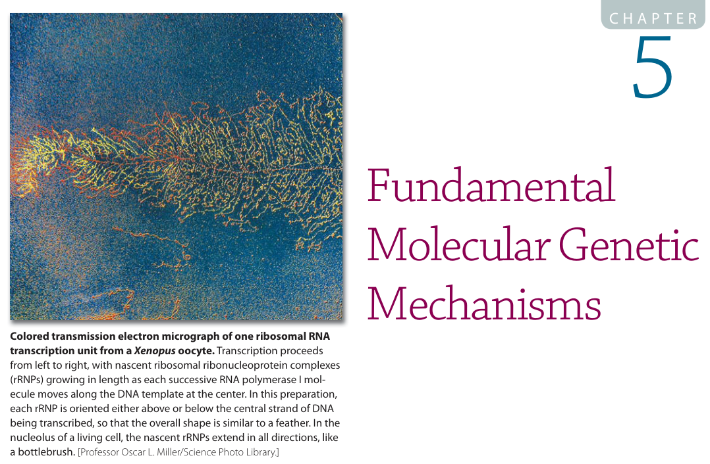
蛋白质作为细胞结构的组分、细胞催化剂以及分子开关和分子机器的非凡多功能性已在第3章中描述。在本章中，我们将探讨蛋白质的合成过程，以及对于生物体及其后代生存至关重要的其他细胞过程。我们的重点将放在被称为核酸的重要分子上，以及它们如何最终负责调控所有的细胞功能。正如我们在第2章中所见，核酸是由四种核苷酸组成的线性聚合物（见图2-13、图2-16和图2-17）。这些大分子（1）在其核苷酸的精确序列中包含了决定细胞中所有蛋白质的氨基酸序列（因而也决定了其结构和功能）的信息；（2）是细胞大分子工厂的关键功能组分，
这些大分子工厂在合成多肽链时选择氨基酸并按照正确顺序排列它们；（3）催化细胞中许多基本的化学反应，包括蛋白质合成过程中氨基酸之间肽键的形成；以及（4）调控基因的表达。
脱氧核糖核酸（DNA）是一种信息分子，其核苷酸序列中包含了构建一个生物体所有蛋白质和RNA所需的信息，因而也包含了构建该生物体的细胞和组织所需的信息。从化学角度而言，它非常适合执行这一功能。在大多数地球条件下，它极其稳定，我们能够从数万年前的骨骼和组织中回收DNA序列就是明证。正因为如此，也由于活细胞中存在的修复机制，构成一个DNA分子的长聚合物可以长达
10^9个核苷酸。人类受精卵发育为由数万亿个具有特化功能的细胞组成的成体所需的几乎所有信息，都可以储存在构成人类基因组中约3×10^9个碱基对的四种核苷酸序列中。基于以下各节讨论的碱基配对原理，这些信息可以很容易地被复制，每代每个核苷酸的错误率仅为约2.5×10^8分之一。这些信息在任何物种中的精确复制确保了该物种代代相传的遗传连续性，并且对个体的正常发育至关重要。DNA如此出色地履行这些功能，以至于在所有已知生命形式中，它都是遗传信息的载体（不包括RNA病毒，由于RNA相对于DNA的不稳定性，RNA病毒仅限于极短的基因组，我们将在后面看到）。几乎所有生命形式都使用DNA来编码其遗传信息并使用几乎相同的遗传密码这一发现，意味着所有生命形式都源自一个共同的祖先，其遗传信息储存在核酸序列中。这些信息通过核苷酸之间的特异性碱基配对来读取和复制。储存在DNA中的信息被排列在称为基因的遗传单位中，这些基因控制着生物体的可识别性状。在转录过程中，储存在DNA中的信息被拷贝到核糖核酸（RNA）中，RNA在蛋白质合成中有三种不同的作用，此外还有最近发现的在染色质结构、转录和蛋白质合成调控中的功能，我们将在第8、9和10章中讨论。
DNA核苷酸序列的部分被拷贝到信使RNA（mRNA）分子中，这些分子指导特定蛋白质的合成。mRNA分子的核苷酸序列包含了在蛋白质合成过程中指定氨基酸正确顺序的信息。通过mRNA的翻译，氨基酸以极高的精确度逐步组装成蛋白质。在这一过程中，mRNA分子的核苷酸序列被第二种RNA——称为转移RNA（tRNA）——在第三种RNA即核糖体RNA（rRNA）及其相关蛋白质的辅助下"读取"。当正确的氨基酸通过tRNA按顺序排列时，它们通过肽键连接形成蛋白质。RNA的合成被称为转录，因为DNA的四碱基序列"语言"被精确地拷贝，即转录，为RNA分子的核苷酸序列。蛋白质的合成被称为翻译，因为DNA和RNA的四碱基序列"语言"被翻译为蛋白质的二十种氨基酸序列"语言"。
1953年DNA结构的发现，以及随后对DNA如何指导RNA合成、RNA又如何指导蛋白质组装——即所谓的中心法则——的阐明，是标志着分子生物学早期时代的里程碑式成就。然而，将中心法则简化为DNA→RNA→蛋白质的表述并未反映蛋白质在核酸合成中的作用。此外，正如本章对细菌以及在后续章节中对真核生物的讨论，蛋白质在很大程度上负责调控基因表达，即编码在DNA中的信息在发育过程中在正确的时间在正确的细胞中被解码为蛋白质的整个过程。因此，血红蛋白仅在骨髓中注定发育为循环红细胞（红细胞）的细胞（红系祖细胞）中表达，而发育中的神经元则与人脑中约10^11个其他发育中的神经元建立正确的突触（连接）。DNA复制、转录和翻译这些基本的分子遗传过程必须以极高的保真度、速度和精确的调控来进行，才能保证像细菌、古菌和真核生物这样复杂的生物体正常发育（见图1-1）。这是通过以极高精确度运行的化学过程，加上多层次的检查点或监视机制来实现的，这些机制在启动下一步之前检测这些过程中的关键步骤是否已正确发生。多细胞生物体发育所需基因的高度调控表达，需要整合来自发育中生物体远处细胞以及邻近细胞发出的信号，以及由每个细胞的祖细胞在胚胎发生早期步骤决定的内在发育程序。所有这些调控都依赖于DNA中的控制序列，这些序列与称为转录因子的蛋白质一起发挥作用，协调每个基因的表达。我们在第8、9和10章中讨论的RNA序列也用于调控染色质结构、转录、RNA加工和翻译。核酸充当细胞的"大脑和中枢神经系统"，而蛋白质则执行它们所指定的大多数功能。
在本章中，我们首先回顾DNA和RNA的结构和性质，并探讨这两类核酸的不同特性如何使它们各自适合在细胞中执行其功能。在接下来的几节中，我们将讨论图5-1中总结的基本过程：DNA转录为RNA前体，这些前体的加工以生成功能性RNA分子，mRNA翻译为蛋白质，以及DNA的复制。蛋白质调控细胞结构以及细胞中大多数生物化学反应，因此我们首先考虑蛋白质的氨基酸序列（决定其三维结构，从而决定其功能）如何编码在DNA中并被翻译。在概述mRNA、tRNA和rRNA在蛋白质合成中的功能之后，我们将详细描述翻译的组分和生化步骤。理解这些过程使我们深刻认识到精确复制DNA核苷酸序列的必要性。因此，我们接下来讨论DNA复制中涉及的分子问题，以及确保遗传物质精确复制的复杂细胞机器。在此过程中，我们比较原核生物和真核生物中的这些过程。下一节将描述DNA损伤如何被修复，以及不同DNA分子的区域如何在
在本章中，我们首先回顾 DNA 和 RNA 的结构与性质，并探讨这两类核酸的不同特性如何使其分别适应细胞中的各自功能。在接下来的几节中，我们将讨论图 5-1 所概括的基本过程：DNA 转录为 RNA 前体，这些前体经过加工生成功能性 RNA 分子，mRNA 翻译为蛋白质，以及 DNA 的复制。蛋白质调控细胞结构以及细胞内绝大多数生化反应，因此我们首先考虑蛋白质的氨基酸序列（决定其三维结构从而决定其功能）如何编码在 DNA 中并得以翻译。在概述 mRNA、tRNA 和 rRNA 在蛋白质合成中的功能之后，我们将详细描述翻译的组分和生化步骤。理解这些过程使我们深刻认识到精确复制 DNA 核苷酸序列的必要性。因此，我们接下来讨论 DNA 复制涉及的分子问题，以及确保遗传物质准确复制的复杂细胞机器。在此过程中，我们比较原核生物和真核生物中的这些过程。下一节将描述 DNA 损伤如何被修复，以及不同 DNA 分子的区域如何通过重组过程进行交换，从而在一个物种的个体生物中产生新的性状组合。本章最后一节介绍关于病毒的基本知识，病毒是寄生生物，利用细胞机器进行 DNA 复制、转录和蛋白质合成。病毒不仅是重要的病原体，也是研究这些大分子合成的细胞机制及其他细胞过程的重要模式生物。与细胞相比，病毒结构相对简单，其较小的基因组使其在历史上对这些基本细胞过程的早期研究中易于操作。至今，病毒仍在分子细胞生物学中提供重要的启示，并已被改造为将基因导入细胞的实验工具，这些工具目前正在人体基因治疗中测试其有效性。
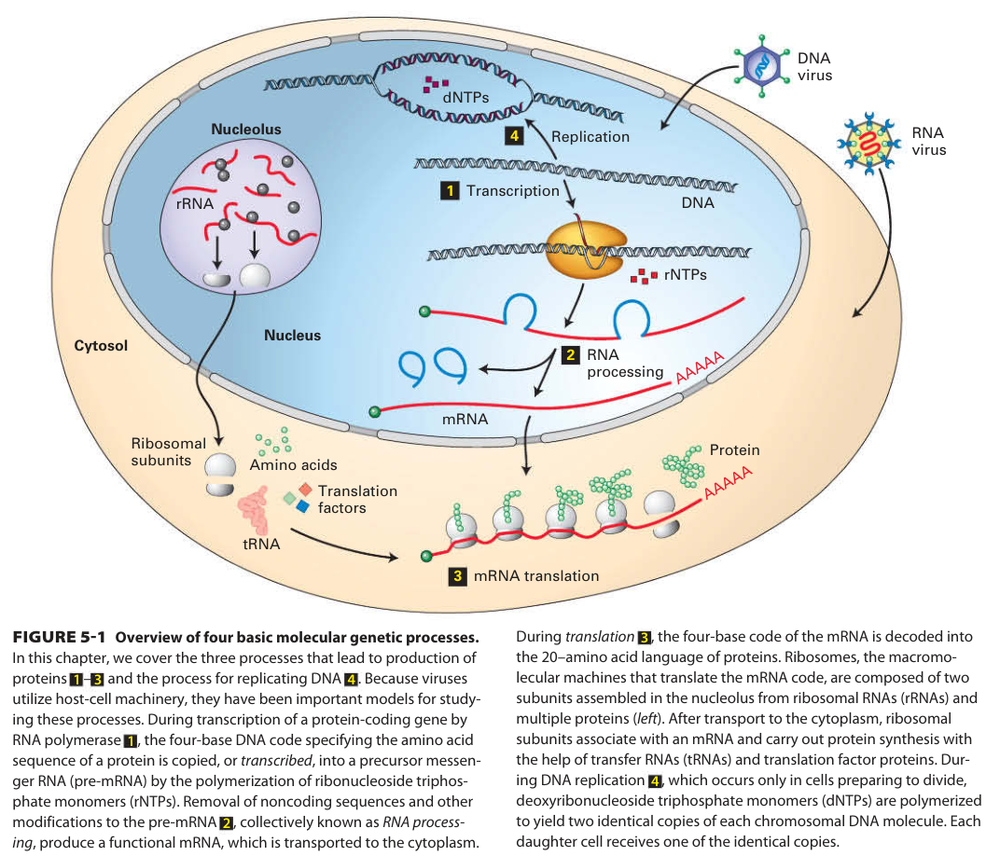
| Transcription | 转录 |
| DNA | DNA |
| RNA processing | RNA加工 |
| rNTPs | rNTPs |
| mRNA | mRNA |
| Translation | 翻译 |
| Ribosomal subunits | 核糖体亚基 |
| rRNA | rRNA |
| tRNA | tRNA |
| Amino acids | 氨基酸 |
| Translation factors | 翻译因子 |
| Protein | 蛋白质 |
| Replication | 复制 |
| dNTPs | dNTPs |
| DNA virus | DNA病毒 |
| RNA virus | RNA病毒 |
| Cytosol | 细胞质 |
| Nucleolus | 核仁 |
| Nucleus | 细胞核 |
本章最后一节介绍关于病毒的基本知识，病毒是寄生生物，利用细胞机器进行 DNA 复制、转录和蛋白质合成。病毒不仅是重要的病原体，也是研究这些大分子合成的细胞机制及其他细胞过程的重要模式生物。与细胞相比，病毒结构相对简单，其较小的基因组使其在历史上对这些基本细胞过程的早期研究中易于操作。至今，病毒仍在分子细胞生物学中提供重要的启示，并已被改造为将基因导入细胞的实验工具，这些工具目前正在人体基因治疗中测试其有效性。
5.1 核酸的结构
DNA和RNA在化学上非常相似。两者的初级结构都是由称为核苷酸的单体组成的线性聚合物。DNA和信使RNA主要作为信息分子发挥作用，在其核苷酸的精确序列中携带信息。细胞RNA的长度范围从约22个到数千个核苷酸。细胞DNA分子可长达数亿个核苷酸。这些与蛋白质结合的大型DNA单位可以用染料染色并在光学显微镜下观察为染色体，因其可染色性而得名。尽管化学上相似，DNA和RNA表现出一些非常重要的差异。例如，RNA也可以作为催化分子发挥作用。我们将会看到，DNA和RNA的不同且独特的性质
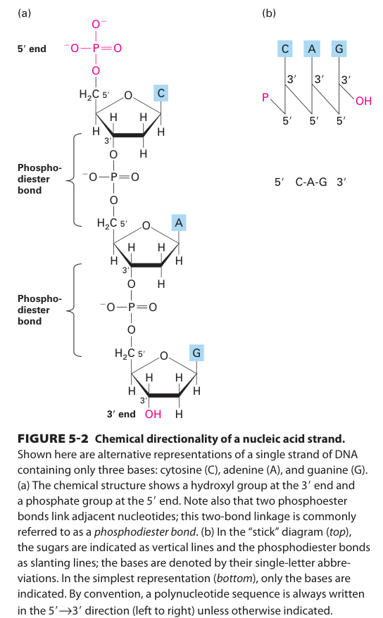
| Phosphodiester bond | 磷酸二酯键 |
使它们各自适合在细胞中执行其特定功能。
核酸链是具有端到端方向性的线性聚合物
在所有生物体中，DNA和RNA各自仅由四种不同的核苷酸组成。回顾第2章，所有核苷酸由一个有机碱基连接到一个五碳糖上，该糖的5'碳上连接有一个磷酸基团。在RNA中，糖是核糖；在DNA中，是脱氧核糖（见图2-16）。用于合成DNA和RNA的核苷酸包含五种不同的碱基。碱基腺嘌呤（A）和鸟嘌呤（G）是嘌呤，含有一对稠合环；碱基胞嘧啶（C）、胸腺嘧啶（T）和尿嘧啶（U）是嘧啶，含有单个环（见图2-17）。其中三种碱基——A、G和C——在DNA和RNA中都有发现；然而，T仅存在于DNA中，U仅存在于RNA中。（注意，这些碱基的单字母缩写也常用于表示核酸聚合物中的整个核苷酸。）
单链核酸具有由重复的戊糖-磷酸单元组成的主链，嘌呤和嘧啶碱基作为侧基从主链延伸出来。像多肽一样，核酸链具有端到端的化学方向性：5'端在其末端糖的5'碳上有一个羟基或磷酸基团；3'端通常在其末端糖的3'碳上有一个羟基（图5-2）。这种方向性，加上合成沿5'到3'方向进行的事实，产生了多核苷酸序列按5'→3'方向（从左到右）书写和阅读的惯例；例如，序列AUG被假定为（5'）AUG（3'）。我们将会看到，核酸链的5'→3'方向性是分子的一个重要性质。相邻核苷酸之间的化学键，通常称为磷酸二酯键，实际上由两个磷酸酯键组成，一个在磷酸的5'侧，另一个在3'侧。
通过磷酸二酯键连接的核苷酸的线性序列构成了核酸分子的初级结构。像多肽一样，多核苷酸可以扭曲和折叠成由非共价键稳定的三维构象。尽管DNA和RNA的初级结构大体相似，但它们的三维构象却相当不同。这些结构差异对两类核酸的不同功能至关重要。
天然DNA是互补反平行链的双螺旋
分子生物学的现代时代始于1953年，当时James D. Watson和Francis H. C. Crick提出DNA具有双螺旋结构。他们的提议基于对Rosalind Franklin和Maurice Wilkins生成的DNA纤维X射线衍射图样的分析，这些图样显示该结构是螺旋状的，以及对Erwin Chargaff及其同事对多种生物体DNA碱基组成的分析。Chargaff的研究揭示，尽管远缘生物之间的DNA碱基组成（A、T、G和C的百分比）差异很大，但在所有生物体中，A的百分比总是等于T的百分比，G的百分比总是等于C的百分比。基于这些发现和四种核苷酸的结构，Watson和Crick进行了仔细的分子模型构建，提出了一个双螺旋结构，其中A总是与T形成氢键，G总是与C形成氢键，位于双螺旋的轴心，作为DNA的结构。Watson和Crick的模型被证明是正确的，并为我们现代理解DNA如何作为遗传物质发挥作用铺平了道路。今天，我们对DNA结构最精确的模型来自DNA晶体的高分辨率X射线衍射研究，这些研究得益于化学合成大量长度和序列均一、适合结晶的短DNA分子（图5-3a）。
分子生物学的现代纪元始于 1953 年，当时 James D. Watson 和 Francis H. C. Crick 提出 DNA 具有双螺旋结构。他们的提议基于对 Rosalind Franklin 和 Maurice Wilkins 产生的 DNA 纤维 X 射线衍射图样的分析（表明该结构为螺旋状），以及 Erwin Chargaff 及其同事对多种生物 DNA 碱基组成的分析。Chargaff 的研究揭示，虽然远缘生物之间 DNA 的碱基组成（A、T、G、C 的百分比）差异很大，但在所有生物中，A 的百分比始终等于 T 的百分比，G 的百分比始终等于 C 的百分比。基于这些发现和四种核苷酸的结构，Watson 和 Crick 进行了精心的分子模型构建，提出了双螺旋结构，其中 A 始终与 T 通过氢键配对，G 始终与 C 通过氢键配对，位于双螺旋的轴心，作为 DNA 的结构。Watson-Crick 模型被证明是正确的，为我们现代理解 DNA 如何作为遗传物质发挥功能铺平了道路。今天，我们对 DNA 结构最精确的模型来自对 DNA 晶体的高分辨率 X 射线衍射研究，这得益于通过化学合成大量长度和序列均一的短 DNA 分子，使其适合结晶（见图 5-3a）。
DNA 由两条相互缠绕的多核苷酸链组成，形成双螺旋。两条糖-磷酸骨架位于双螺旋外侧，碱基伸向内部。每条链中相邻的碱基在平行平面上彼此堆叠（见图 5-3a）。两条链的方向是反平行的，即它们的 5′→3′ 方向相反。两条链通过碱基配对精确对齐：A 通过两个氢键与 T 配对；G 通过三个氢键与 C 配对（图 5-3b）。这种碱基配对互补性是碱基的大小、形状和化学组成的结果。DNA 分子中成千上万个这样的氢键极大地贡献了双螺旋的稳定性。堆叠的相邻碱基对之间的疏水和范德华相互作用进一步稳定了双螺旋结构。
在天然 DNA 中，A 始终与 T 通过氢键配对，G 始终与 C 配对，形成 A∙T 和 G∙C 碱基对，如图 5-3b 所示。这些配对始终发生在较大的嘌呤和较小的嘧啶之间，通常被称为 Watson-Crick 碱基对。两条多核苷酸链（或其区域）中所有核苷酸均形成此类碱基对时，被称为互补链。然而，在理论上和合成 DNA 中，也可以形成其他碱基对。例如，鸟嘌呤（一种嘌呤）理论上可以与胸腺嘧啶（一种嘧啶）形成氢键，仅引起螺旋的轻微扭曲。螺旋中的可用空间也允许两个嘧啶——胞嘧啶和胸腺嘧啶之间配对。虽然非标准 G∙T 和 C∙T 碱基对通常不存在于 DNA 中，但 G∙U 碱基对在单链 RNA 内部形成的双螺旋区域中相当常见。非标准碱基对不会天然出现在双链 DNA 中，因为本章稍后描述的 DNA 复制酶不允许它们存在。
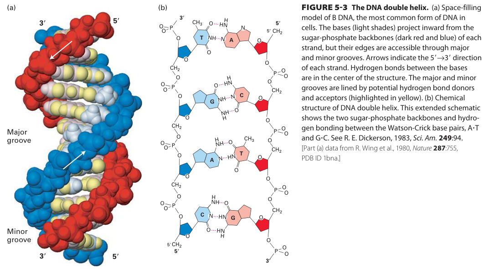
| Minor groove | 小沟 |
虽然非标准 G∙T 和 C∙T 碱基对通常不存在于 DNA 中，但 G∙U 碱基对在单链 RNA 内部形成的双螺旋区域中相当常见。非标准碱基对不会天然出现在双链 DNA 中，因为本章稍后描述的 DNA 复制酶不允许它们存在。
细胞中的大多数 DNA 采取右手螺旋形式。DNA 的 X 射线衍射图样表明，堆叠的碱基沿螺旋轴规则地间隔 0.34 nm。螺旋每 3.4 至 3.6 nm 完成一整圈，具体取决于序列；因此每圈大约有 10-10.5 个碱基对。这种螺旋形式被称为 B 型 DNA，是细胞中大多数 DNA 片段存在的正常形式。在螺旋外侧，缠绕链之间的空间形成两个宽度不同的螺旋沟，分别称为大沟和小沟（见图 5-3a）。因此，位于这些沟中的每个碱基边缘的原子可从螺旋外部接近，形成两种类型的结合表面。DNA 结合蛋白可以通过接触大沟或小沟中的原子来"读取"双链 DNA 中的碱基序列。
在实验室条件下，当 DNA 中大部分水分被去除时，DNA 的晶体结构转变为 A 型，比 B 型 DNA 更宽更短，具有更宽更深的大沟和更窄更浅的小沟（图 5-4）。RNA-DNA 和 RNA-RNA 螺旋在细胞中和体外也以这种形式存在。
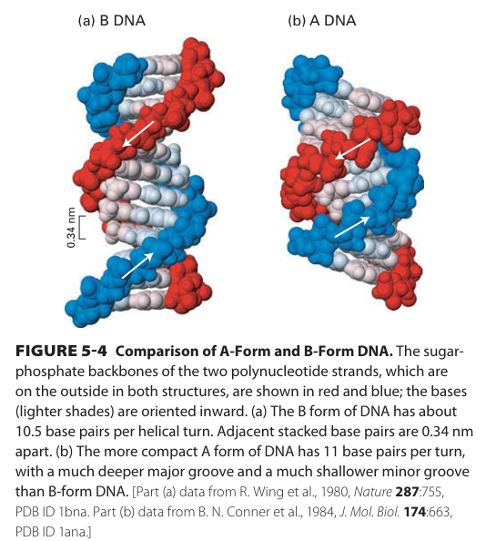
标准 B 型 DNA 结构的重要修饰来自蛋白质与特定 DNA 序列的结合。虽然碱基之间大量的氢键和疏水键为 DNA 提供了稳定性，但双螺旋绕其长轴是柔性的。与蛋白质中的 α 螺旋不同（见图 3-4），DNA 没有平行于螺旋轴的氢键。这一特性使 DNA 在与 DNA 结合蛋白（如转录因子 TBP）复合时能够弯曲（图 5-5）。
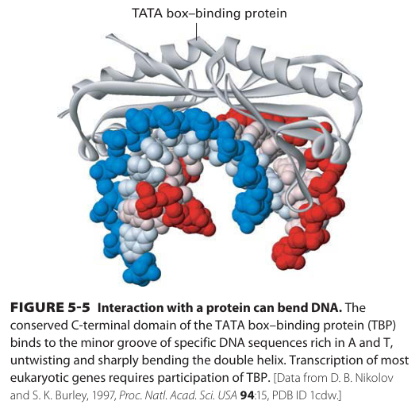
| TATA box–binding protein | TATA盒结合蛋白 |
DNA 的弯曲对于 DNA 在染色质中的紧密包装也至关重要，染色质是真核细胞中核 DNA 存在的蛋白质-DNA 复合物（见第 8 章）。
为什么是 DNA 而不是 RNA 进化成为细胞中遗传信息的载体？DNA 脱氧核糖中 2′ 位的氢原子使其成为远比 RNA 更稳定的分子，RNA 在核糖的 2′ 位则有一个羟基（见图 2-16）。RNA 中的 2′-羟基参与中性 pH 下 OH⁻ 催化的磷酸二酯键的缓慢水解（图 5-6）。DNA 中不存在 2′-羟基，因此阻止了这一过程。所以，脱氧核糖在 DNA 中的存在使其成为更稳定的分子——这一特性对其长期储存遗传信息的功能至关重要。
DNA 可发生可逆链分离
DNA的弯曲也对染色质中DNA的紧密包装至关重要，染色质是真核细胞中核DNA所在的蛋白质-DNA复合物（见第8章）。
为什么DNA，而不是RNA，进化成为细胞中遗传信息的载体？DNA脱氧核糖中2'位的氢原子使其成为比RNA稳定得多的分子，RNA在核糖的2'位有一个羟基（见图2-16）。RNA中的2'-羟基在中性pH下参与OH⁻催化的磷酸二酯键的缓慢水解（图5-6）。DNA中缺乏2'-羟基阻止了这一过程。因此，DNA中脱氧核糖的存在使其成为更稳定的分子——这一特性对其在遗传信息长期储存中的功能至关重要。
DNA可以进行可逆的链分离
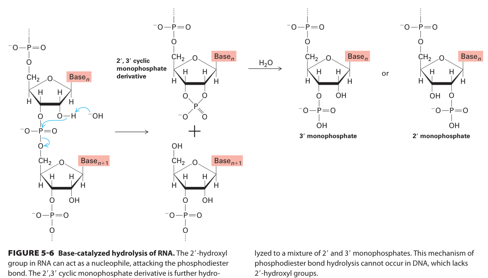
| Base n | 碱基n |
| H Base n | H 碱基n |
破坏氢键的变性剂，如甲酰胺或尿素，也会降低 Tm。最后，极端 pH 在低温下使 DNA 变性。在低 pH 下，碱基被质子化从而带正电荷，相互排斥。在高 pH 下，碱基失去质子而带负电荷，同样因电荷相同而相互排斥。在细胞中，pH 和温度在很大程度上维持恒定。DNA 变性的这些特征在实验室操作 DNA 时最为有用。
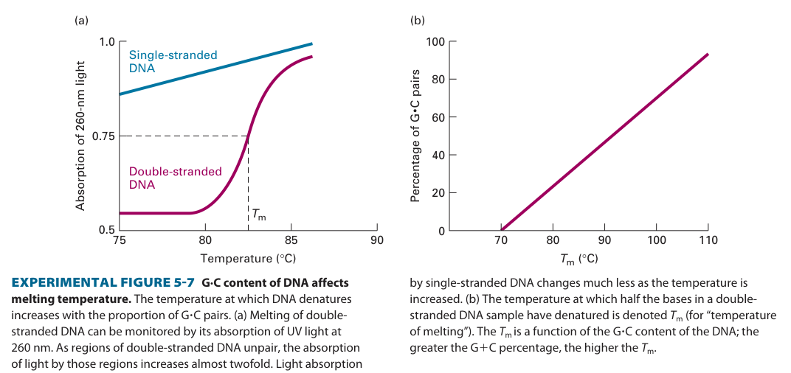
| DNA | DNA |
| DNA Double-stranded | DNA双链 |
| DNA 75 | DNA 75 |
| Absorption of 260-nm light | 260nm光吸收 |
DNA 变性的这些特征在实验室操作 DNA 时最为有用。
变性产生的单链 DNA 分子形成无组织结构的无规卷曲。降低温度、增加离子浓度或中和 pH 可使两条互补链重新结合为完美的双螺旋。这种复性的程度取决于时间、DNA 浓度和离子浓度。两条序列不相关的 DNA 链将保持无规卷曲状态，不会复性，但也不会阻止互补的 DNA 伙伴链相互找到并复性。DNA 的变性和复性是核酸杂交的基础，核酸杂交是一种强大的技术，用于研究两个 DNA 样本的相关性，以及在含有众多不同 DNA 序列的混合物中检测和分离特定 DNA 分子（见第 6 章）。
两条序列不相关的 DNA 链将保持无规卷曲状态，不会复性，但也不会阻止互补的 DNA 伙伴链相互找到并复性。DNA 的变性和复性是核酸杂交的基础，核酸杂交是一种强大的技术，用于研究两个 DNA 样本的相关性，以及在含有众多不同 DNA 序列的混合物中检测和分离特定 DNA 分子（见第 6 章）。
DNA 中的扭转应力由酶解除
许多细菌基因组 DNA 和许多病毒 DNA 是环状分子。环状 DNA 分子也存在于几乎所有真核细胞都含有的线粒体中，以及存在于植物和某些单细胞真核生物的叶绿体中。虽然真核核 DNA 是线性的，但长的 DNA 环在染色体内被固定（见第 8 章）。环状 DNA 分子或真核染色体固定环中的每条链都形成一个没有自由端的闭合结构，因此会受到扭转应力。
DNA中的扭转应力由酶解除
在复制和转录过程中，细胞和病毒 DNA 分子中会产生扭转应力。这种酶随机结合在 DNA 上，在一条链上断开一个磷酸二酯键。DNA 中这种单链断裂称为切口。断裂的末端随后绕未切断的链旋转，导致超螺旋消失（图 5-8b）。最后，同一酶将断裂链的两端连接起来。另一种酶，拓扑异构酶 II，在双链 DNA 的两条链上均造成断裂，然后重新连接。因此，拓扑异构酶 II 既可以解除扭转应力，也可以像链环一样将两个环状 DNA 分子连接在一起。
不同类型的 RNA 表现出与其功能相关的各种构象
RNA 的一级结构通常与 DNA 相似，但有两个例外：RNA 的糖组分核糖在 2′ 位有一个羟基（见图 2-16b），而 DNA 中的胸腺嘧啶在 RNA 中被尿嘧啶取代。DNA 中存在胸腺嘧啶而非尿嘧啶对 DNA 的长期稳定性很重要，因为它具有 DNA 修复功能（见第 5.6 节）。如前所述，核糖 2′ 碳上的羟基使 RNA 比 DNA 化学上更不稳定。由于这种不稳定性，RNA 可被碱性溶液裂解为单核苷酸（见图 5-6），而 DNA 则不能。RNA 的 2′-羟基还提供一个参与 RNA 介导催化的化学反应基团。与 DNA 一样，RNA 是一种长多核苷酸，可以是双链或单链，线性或环状。它还可以参与由一条 RNA 链和一条 DNA 链组成的杂合螺旋。如上所述，RNA-RNA 和 RNA-DNA 双螺旋具有类似 DNA A 型的紧凑构象（见图 5-4b）。
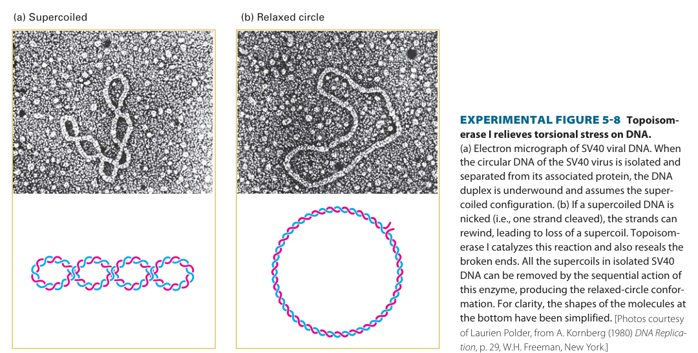
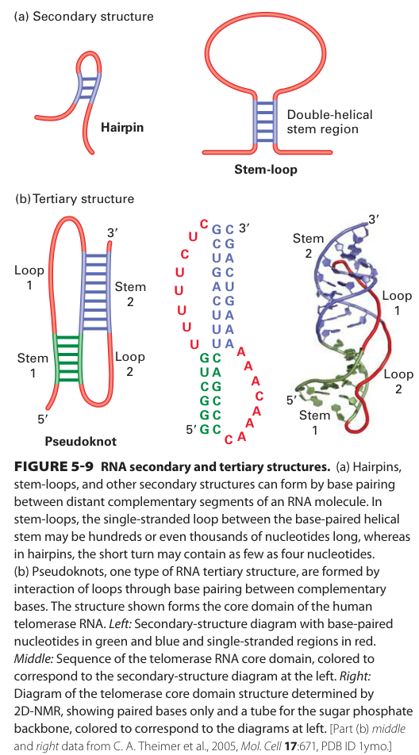
| Pseudoknot | 假结 |
| Hairpin | 发夹结构 |
| Double-helical stem region | 双螺旋茎区 |
| Stem-loop 5 | 茎环 5 |
| Pseudoknot G | 假结G |
与主要以极长双螺旋形式存在的 DNA 不同，大多数细胞 RNA 是单链的，并表现出多种构象（图 5-9）。各种类型 RNA 在大小和构象上的差异使其能够在细胞中执行特定功能。单链 RNA 中最简单的二级结构由互补碱基配对形成。"发夹"结构由相距约五到十个核苷酸以内的碱基配对形成，而"茎环"结构由相距十一个到几百个核苷酸的碱基配对形成。这些简单的折叠可以协同形成更复杂的三级结构，其中一种被称为"假结"。
如下文详细讨论的，tRNA 分子在溶液中采取一种明确的三维结构，这对蛋白质合成至关重要。较大的 rRNA 分子也具有局部明确的三维结构，具有结构上不同的结构域，这些结构域组装成在蛋白质合成中至关重要的特定结构。
与主要以非常长的双螺旋形式存在的DNA不同，大多数细胞RNA是单链的，它们表现出多种构象（图5-9）。各种RNA在大小和构象上的差异使它们能够在细胞中执行特定功能。单链RNA中最简单的二级结构是通过互补碱基的配对形成的。"发夹"结构由相距约五到十个核苷酸以内的碱基配对形成，"茎环"结构由相距十一个到数百个核苷酸的碱基配对形成。这些简单的折叠可以协同形成更复杂的三级结构，其中一种被称为"假结"。
如下文详细讨论的，tRNA分子在溶液中采用明确的三维结构，这对蛋白质合成至关重要。较大的rRNA分子也具有局部明确的三维结构，中间有
更灵活的连接区。二级和三级结构也在mRNA中被识别，特别是在分子末端附近。显然，RNA分子与蛋白质相似，它们具有由结构化程度较低、灵活的片段连接的结构域。
KEY CONCEPTS OF SECTION 5.1
在本章中，我们重点讨论mRNA、tRNA和rRNA在基因表达中的功能。在后续章节中，我们将遇到其他RNA，通常与蛋白质结合，参与其他细胞功能。
r 脱氧核糖核酸（DNA）是遗传物质，携带指定蛋白质氨基酸序列的信息。它被转录为几种类型的核糖核酸（RNA），包括信使 RNA（mRNA）、转运 RNA（tRNA）和核糖体 RNA（rRNA），所有这些都在蛋白质合成中发挥作用（见图 5-1）。
r 所有 DNA 和大多数 RNA 是核苷酸的长链无分支多聚体。核苷酸由一个磷酸化戊糖连接到一个有机碱基（嘌呤或嘧啶）组成。
r 脱氧核糖核酸（DNA），即遗传物质，携带指定蛋白质氨基酸序列的信息。它被转录为几种类型的核糖核酸（RNA），包括信使RNA（mRNA）、转移RNA（tRNA）和核糖体RNA（rRNA），所有这些都在蛋白质合成中发挥作用（见图5-1）。
r 所有DNA和大多数RNA是核苷酸的长而不分支的聚合物。一个核苷酸由一个磷酸化的戊糖连接到一个有机碱基（嘌呤或嘧啶）组成。
r 嘌呤腺嘌呤（A）和鸟嘌呤（G）以及嘧啶胞嘧啶（C）在DNA和RNA中都存在。DNA中存在的嘧啶胸腺嘧啶（T）在RNA中被嘧啶尿嘧啶（U）取代。
（见图 5-3）。链之间的碱基配对以及垂直于螺旋轴堆叠的相邻碱基对之间的疏水相互作用稳定了这种天然结构。
r 核酸中的碱基可以通过氢键相互作用。标准 Watson-Crick 碱基对是 G∙C、A∙T（在 DNA 中）和 G∙C、A∙U（在 RNA 中）。碱基配对稳定了 DNA 和 RNA 的天然三维结构。
（见图5-3）。链之间的碱基配对以及垂直于螺旋轴堆叠的相邻碱基对之间的疏水相互作用稳定了这种天然结构。
r 核酸中的碱基可以通过氢键相互作用。标准的Watson-Crick碱基对是G·C、A·T（在DNA中）和G·C、A·U（在RNA中）。碱基配对稳定了DNA和RNA的天然三维结构。
r 蛋白质与DNA的结合可以使其螺旋结构变形，引起DNA分子的局部弯曲或解旋。
r 加热使DNA链分离（变性）。DNA的熔解温度（Tm）随G·C碱基对百分比的增加而升高。在合适条件下，分离的互补核酸链将复性。
5.2 蛋白质编码基因的转录与功能性mRNA的形成
r 细胞RNA是单链多核苷酸，其中一些形成明确的二级和三级结构（见图5-9）。一些RNA，称为核酶，具有催化活性。
在 RNA 合成过程中，包含 A、G、C 和 T 的 DNA 四碱基语言被简单地拷贝，或转录成 RNA 的四碱基语言，后者除了用 U 代替 T 外完全相同。相比之下，在蛋白质合成过程中，DNA 和 RNA 的四碱基语言被翻译成蛋白质的 20 种氨基酸语言。在本节中，我们重点关注从蛋白质编码基因形成功能性 mRNA 的过程（见图 5-1，步骤 1）。类似的过程产生 rRNA 和 tRNA 的前体，由 rRNA 和 tRNA 基因编码；这些前体随后被进一步修饰以产生功能性 rRNA 和 tRNA（见第 9 和第 10 章）。类似地，数千种 microRNA（miRNA）调控特定靶 mRNA 的翻译和稳定性，也由类似过程产生。
基因最简单的定义是"一段DNA单元，它包含指定合成单条多肽链或功能性RNA（如tRNA）所需的信息"。小病毒的DNA分子仅含少数几个基因，而高等动植物每条染色体中的单个DNA分子可包含数千个基因。绝大多数基因携带用于构建蛋白质分子的信息，正是这些蛋白质编码基因的RNA拷贝构成了细胞中的mRNA分子。
在RNA合成过程中，DNA的四种碱基（A、G、C、T）语言被简单地拷贝或转录为RNA的四种碱基语言，除了U替换T之外完全相同。相反，在蛋白质合成过程中，DNA和RNA的四种碱基语言被翻译为蛋白质的20种氨基酸语言。本节中，我们重点关注蛋白质编码基因形成功能性mRNA的过程（见图5-1，步骤1）。类似的过程产生由rRNA基因和tRNA基因编码的rRNA和tRNA前体；这些前体随后经过进一步修饰产生功能性rRNA和tRNA（见第9章和第10章）。类似地，数千种调控特定靶mRNA翻译和稳定性的微小RNA（miRNA）被RNA聚合酶转录为前体，并加工成功能性miRNA（见第10章）。其他非蛋白质编码（或简称非编码）RNA有助于调控特定蛋白质编码基因的转录。转录调控使得构成多细胞生物的不同类型细胞能够表达不同的基因集合。它还使得不同基因可以转录出不同数量的mRNA，从而导致细胞中编码蛋白质含量的差异。转录调控将在第9章中讨论。
模板DNA链由RNA聚合酶转录为互补RNA链
在DNA转录过程中，一条DNA链作为模板，决定核糖核苷三磷酸（rNTP）单体连接形成互补RNA链的顺序。模板DNA链中的碱基与互补的进入rNTP碱基配对，随后在RNA聚合酶催化的聚合反应中连接。该聚合反应涉及生长中RNA链的3′氧对下一个待添加核苷酸前体的α磷酸进行亲核攻击，导致磷酸二酯键的形成并释放焦磷酸（PPi）。由于这一机制，RNA分子始终沿5′→3′方向合成（图5-10a）。
聚合反应的能量学强烈有利于核糖核苷酸添加到生长中的RNA链上，因为rNTP单体α和β磷酸之间的高能键被核苷酸之间能量较低的磷酸二酯键所取代。焦磷酸酶进一步推动反应平衡向链延伸方向移动，该酶催化释放的PPi裂解为两分子无机磷酸。与DNA中的两条链一样，模板DNA链和与其碱基配对的生长RNA链具有相反的5′→3′方向性。
按照惯例，DNA模板上RNA聚合酶开始转录的位点编号为+1（图5-10b）。下游表示模板DNA链被转录的方向；上游表示相反方向。起始位点下游DNA序列中的核苷酸位置用正号（+）标示；上游则用负号（−）标示。由于RNA沿5′→3′方向合成，RNA聚合酶沿3′→5′方向沿模板DNA链移动。新合成的RNA与模板DNA链互补，因此与非模板DNA链相同，只是尿嘧啶取代了胸腺嘧啶。
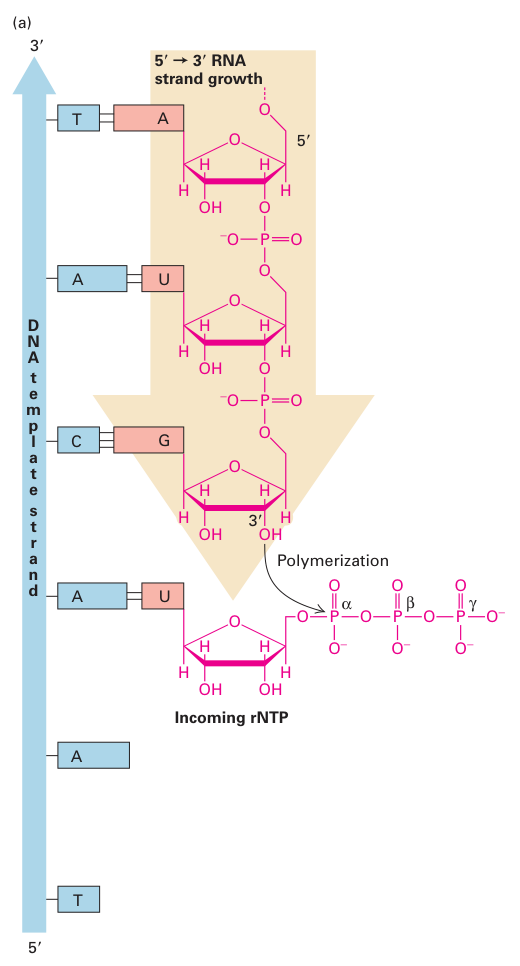
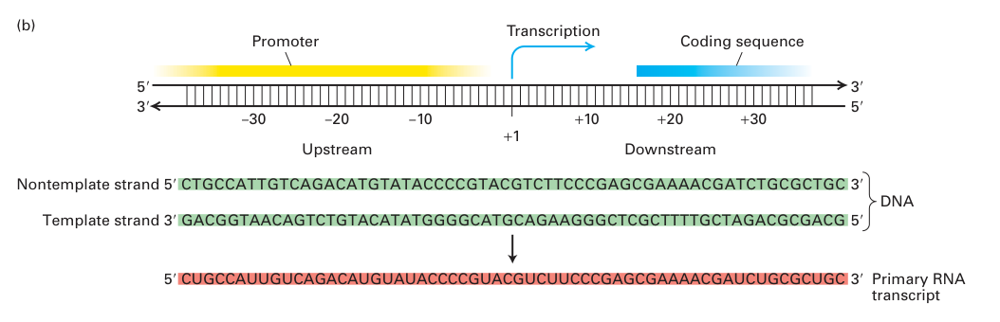
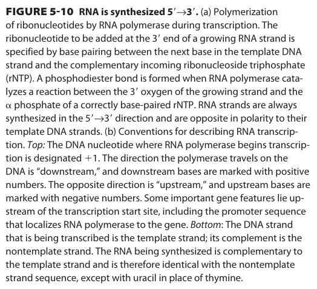
| Incoming rNTP | 进入的 rNTP |
| RNA strand growth | RNA链延伸 |
| γ Polymerization | γ 聚合化 |
| Transcription Coding sequence | 转录 编码序列 |
| Promoter – | 启动子 – |
| Upstream – | 上游 – |
| Nontemplate strand 5 | 非模板链 5' |
| Template strand 3 | 模板链 3' |
RNA 聚合酶和起始因子使 DNA 链分离，使模板链中的碱基可用于与它将聚合的 rNTP 的碱基进行碱基配对（步骤 2）。转录起始位点周围约 12-14 个碱基对的 DNA 在模板链上被分开，使模板链能够进入酶的活性位点。活性位点催化与模板链互补的 rNTP 之间形成磷酸二酯键。聚合酶中约 12-14 碱基对的熔解 DNA 区域称为转录泡。当 RNA 链的前两个核糖核苷酸通过磷酸二酯键连接时，转录起始即告完成（步骤 3）。
在几个核糖核苷酸聚合之后，RNA 聚合酶从启动子 DNA 和起始因子（在细菌中称为 σ 因子，在古菌和真核生物中称为通用转录因子）上解离。在链延伸阶段，RNA 聚合酶沿模板 DNA 移动，在其运动方向前方打开双链 DNA，并引导链重新结合，使它们在转录泡的上游端重新结合（步骤 4）。聚合酶每次将一个核糖核苷酸添加到正在生长的新生 RNA 链的 3′ 端。在链延伸期间，酶在转录泡中维持约 14-20 个碱基对的熔解区域。新生 RNA 链 3′ 端约八个核苷酸与转录泡中的模板 DNA 链保持碱基配对。延伸复合物，包括 RNA 聚合酶、模板 DNA 和新生 RNA 链，异常稳定。例如，RNA 聚合酶转录已知最长的哺乳动物基因（约含 200 万个碱基对），而不从 DNA 模板上解离或释放新生 RNA。RNA 合成在 37°C 下以每分钟约 1000-2000 个核苷酸的速度进行，因此延伸复合物必须保持完整超过 24 小时，以确保从这个非常长的基因连续合成前体 mRNA。
在链延伸阶段，RNA 聚合酶沿模板 DNA 移动，在其运动方向前方打开双链 DNA，并引导链重新结合，使它们在转录泡的上游端重新结合（步骤 4）。聚合酶每次将一个核糖核苷酸添加到正在生长的新生 RNA 链的 3′ 端。在链延伸期间，酶在转录泡中维持约 14-20 个碱基对的熔解区域。新生 RNA 链 3′ 端约八个核苷酸与转录泡中的模板 DNA 链保持碱基配对。延伸复合物，包括 RNA 聚合酶、模板 DNA 和新生 RNA 链，异常稳定。例如，RNA 聚合酶转录已知最长的哺乳动物基因（约含 200 万个碱基对），而不从 DNA 模板上解离或释放新生 RNA。RNA 合成在 37°C 下以每分钟约 1000-2000 个核苷酸的速度进行，因此延伸复合物必须保持完整超过 24 小时，以确保从这个非常长的基因连续合成前体 mRNA。
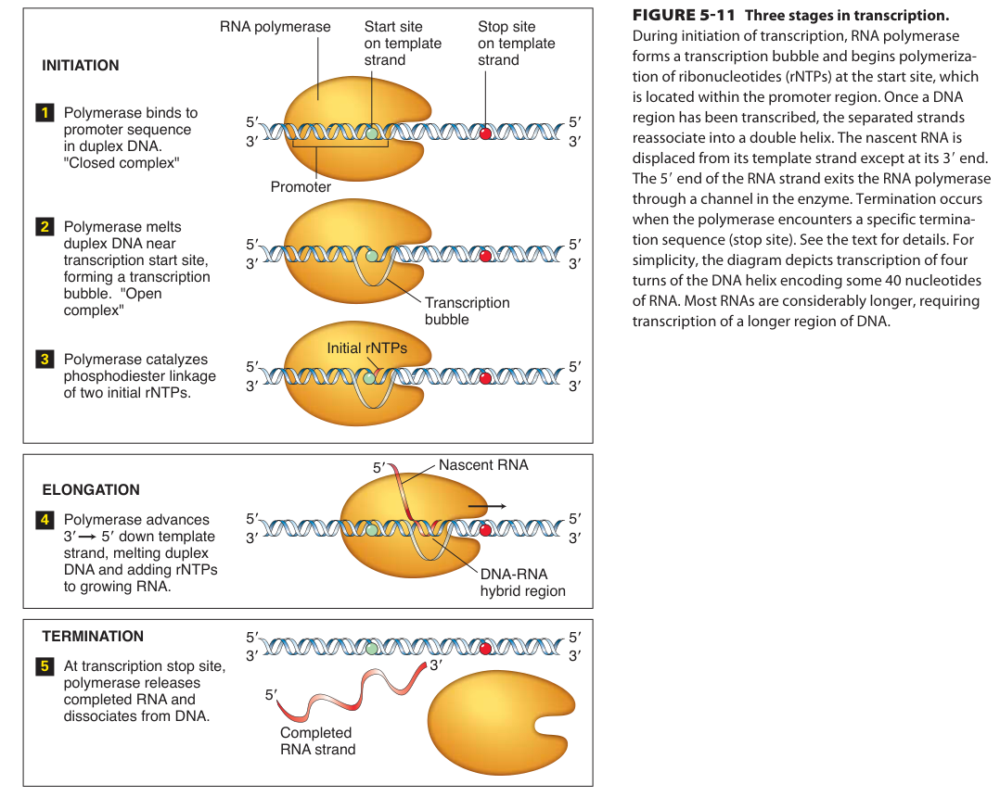
延伸复合物必须保持完整超过 24 小时，以确保从这个非常长的基因连续合成前体 mRNA。
延伸复合物必须保持完整超过24小时，以确保从这一极长基因连续合成前体mRNA。
在转录终止阶段，即RNA合成的最后阶段，完成的RNA分子从RNA聚合酶释放，聚合酶从模板DNA上解离（步骤5）。一旦释放，RNA聚合酶即可自由地再次转录同一基因或转录另一个基因。
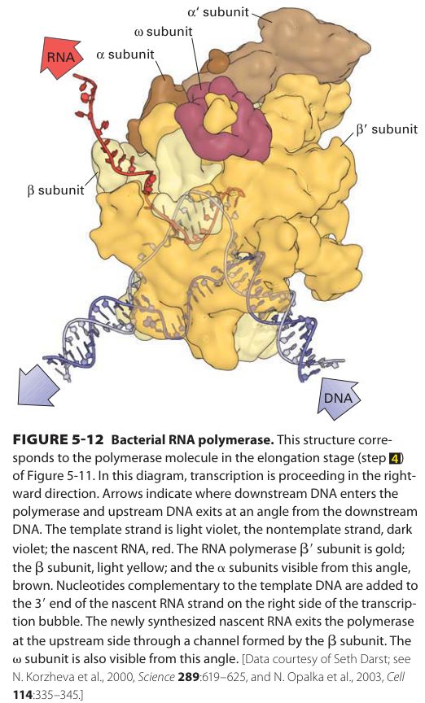
| subunit | 亚基 |
| DNA | DNA |
| RNA | RNA |
| β' subunit | β' 亚基 |
| β subunit | β 亚基 |
| α' subunit | α' 亚基 |
| α subunit | α 亚基 |
| DNA RNA | DNA RNA |
| ω subunit | ω 亚基 |
RNA 聚合酶有若干额外的小亚基与这个核心复合物结合，我们将在第 9 章中描述。转录过程的示意图通常显示 RNA 聚合酶结合在未弯曲的 DNA 分子上，如图 5-11 所示。然而，对延伸中的细菌 RNA 聚合酶的 X 射线晶体学和其他研究表明，DNA 在转录泡处弯曲（图 5-12）。
聚合酶在此核心复合物上还结合了若干额外的小亚基，我们将在第9章中描述。转录过程的示意图通常显示RNA聚合酶结合在一个未弯曲的DNA分子上，如图5-11所示。然而，X射线晶体学和其他对延伸中细菌RNA聚合酶的研究表明，DNA在转录泡处发生弯曲（图5-12）。
基因的组织方式在原核和真核DNA中存在差异
在概述了转录过程之后，我们现在简要考虑DNA中信息的大规模排布方式，以及这种排布如何决定RNA合成的需求，以使信息传递顺利进行。近年来，对多种生物全基因组的测序不仅揭示了蛋白质编码基因数量上的巨大差异，也揭示了它们在细菌和真核生物中组织方式的差异。
细菌中蛋白质编码基因最常见的排布方式具有一种强大而引人入胜的逻辑：编码功能协同的蛋白质的基因——例如合成色氨酸所需的酶——通常以连续排列的形式出现在DNA中。这种功能组中基因的排列称为操纵子，因为它从单个启动子作为一个单元运作。操纵子的转录产生一条连续的mRNA链，携带一系列相关蛋白质的信息（图5-13a）。mRNA的每一段代表编码该系列中一种蛋白质的单元（或基因）。这种排布导致了操纵子中所有基因的协同表达。每次RNA聚合酶分子在操纵子启动子处启动转录，操纵子的所有基因都被转录和翻译。在原核DNA中，基因紧密排列，非编码间隙极少，DNA直接转录为mRNA。由于原核生物中DNA不被隔离在细胞核内，核糖体可以在mRNA从RNA聚合酶表面出现时立即接触到其中的翻译起始位点。因此，即使在mRNA的3′端仍在RNA聚合酶活性位点合成时，mRNA的翻译就已经开始了。
这种将专用于单一代谢功能的基因经济地聚集成簇的方式在真核生物中很少见，即使是酵母这样代谢上与细菌相似的简单真核生物也是如此。相反，编码功能协同的蛋白质的真核基因通常在DNA上物理分离；事实上，这类基因通常位于不同的染色体上。每个基因从其自身的启动子转录，产生一条mRNA，通常翻译产生一条多肽（图5-13b）。
对真核基因结构的早期研究涉及感染动物的病毒。当研究人员分析编码病毒mRNA的病毒DNA分子区域时，他们惊讶地发现，单条病毒mRNA的序列编码在病毒DNA的多个区域中，这些区域被不存在于mRNA中的DNA序列隔开。后来，基因克隆和DNA测序（见第6章）的发展使研究人员能够比较多细胞生物的基因组DNA序列与其mRNA序列。这项研究揭示，大多数细胞mRNA也编码在基因组DNA的多个分离区域中，称为外显子，它们被称为内含子的DNA序列隔开。进一步研究表明，基因首先被转录为一条长的初级转录本，其中包含外显子序列和分隔它们的间插内含子序列。随后，内含子被移除，外显子被剪接在一起（见第10章）。尽管内含子在多细胞真核生物中很常见，但在细菌和古菌中极为罕见，在许多单细胞真核生物（如面包酵母）中也不常见。
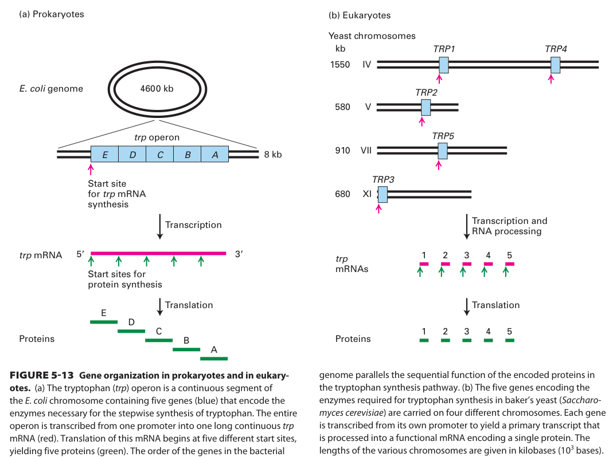
| mRNA | mRNA（信使RNA） |
| Transcription | 转录 |
| Proteins | 蛋白质 |
| Translation | 翻译 |
| E. coli genome | 大肠杆菌基因组 |
| Start site for trp mRNA synthesis | trp mRNA 合成起始位点 |
| Transcription Proteins | 转录 蛋白质 |
| Start sites for protein synthesis | 蛋白质合成起始位点 |
| Yeast chromosomes | 酵母染色体 |
| TRP1 kb | TRP1 kb |
| Transcription and RNA processing | 转录与RNA加工 |
| Translation Proteins | 翻译 蛋白质 |
真核前体mRNA经加工形成功能性mRNA
在没有细胞核的细菌细胞中，mRNA翻译为蛋白质可以在mRNA的5′端开始，即使其3′端仍在由RNA聚合酶合成。换句话说，转录和翻译在细菌中同时发生。然而，在真核细胞中，RNA合成场所——细胞核——与翻译场所——细胞质——是分离的。此外，蛋白质编码基因的初级转录本是前体mRNA（pre-mRNA），必须经过若干修饰（统称为RNA加工）才能产生功能性mRNA（见图5-1，步骤2）。该mRNA随后必须被输出到细胞质中才能翻译为蛋白质。因此，转录和翻译在真核细胞中不能同时发生。
所有真核前体mRNA最初都在两端进行修饰，这些修饰保留在mRNA中。当新生RNA链的5′端从RNA聚合酶表面出现时，立即被
几种酶共同合成5′帽，即一个7-甲基鸟苷酸，通过一个不寻常的5′,5′三磷酸键连接到RNA的末端核苷酸上（图5-14）。该帽保护mRNA免受酶促降解，并协助其输出到细胞质。该帽还结合一种在细胞质中启动翻译所需的蛋白因子。
前体mRNA 3′端的加工涉及内切核酸酶的切割，产生一个游离的3′-羟基，然后由poly(A)聚合酶一次一个地添加一串腺苷酸残基。产生的poly(A)尾含有100–250个碱基，在酵母和无脊椎动物中比在脊椎动物中更短。poly(A)聚合酶是一个蛋白质复合物的一部分，该复合物可以定位并在特定位置切割转录本，然后添加正确数量的A残基，这一过程不需要模板。如第5.4节和第10章中进一步讨论的，poly(A)尾在mRNA翻译以及稳定细胞核中的前体mRNA和细胞核及细胞质中完全加工的mRNA方面都具有重要功能。
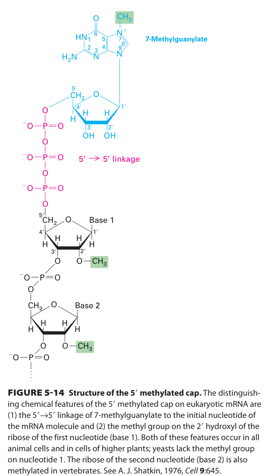
| 7-Methylguanylate O | 7-甲基鸟苷酸 O |
| Base 1 | 碱基 1 |
许多不同真核mRNA分子加工中的另一个步骤是RNA剪接：在转录本内部切割以切除内含子并将编码外显子缝合在一起。图5-15以β-珠蛋白基因为例总结了真核mRNA加工的基本步骤。我们将在第10章中考察执行mRNA以及tRNA和rRNA加工的细胞机器。
经RNA加工产生的功能性真核mRNA在两端保留非编码区，称为非翻译区（UTR）。在哺乳动物mRNA中，5′ UTR可能长达一百个或更多核苷酸，3′ UTR可能长达数千碱基。细菌mRNA通常也具有5′和3′ UTR，但这些区域比真核mRNA中的短得多，通常含少于10个核苷酸。如第10章所讨论的，5′ UTR和3′ UTR序列参与
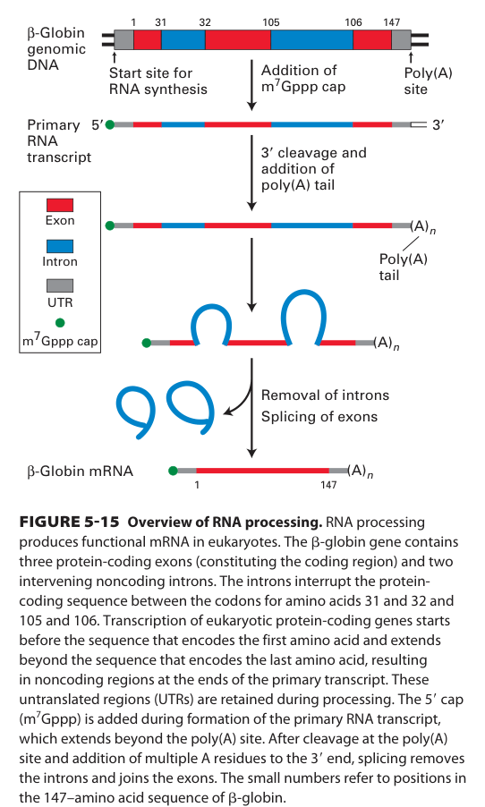
| Gγ-Globin genomic | Gγ-珠蛋白 基因组 |
| DNA Primary | DNA 初级转录本 |
| RNA transcript | RNA转录本 |
| Gγ-Globin mRNA | Gγ-珠蛋白 mRNA |
| RNA synthesis | RNA合成 |
| Addition of m | 添加 m |
| Poly(A) tail | Poly(A) 尾 |
| Poly(A) site | Poly(A) 位点 |
| Removal of introns | 去除内含子 |
| Splicing of exons m | 外显子剪接 m |
| Exon Intron | 外显子 内含子 |
| UTR | UTR |
mRNA翻译和稳定性的调控，且3′ UTR还在许多mRNA定位到细胞质特定区域中发挥作用。
可变RNA剪接增加了从单个真核基因表达的蛋白质数量
与细菌和古菌基因不同，多细胞真核生物中绝大多数基因含有多个内含子。如第3章所述，高等真核生物的许多蛋白质具有多结构域三级结构（见图3-11）。单个重复的蛋白质结构域通常由一个外显子或少数几个外显子编码，这些外显子在基因组DNA中重复出现，编码相同或几乎相同的氨基酸序列。这种重复外显子被认为是从位于两个位点之间的某段DNA长度的多次重复进化而来的
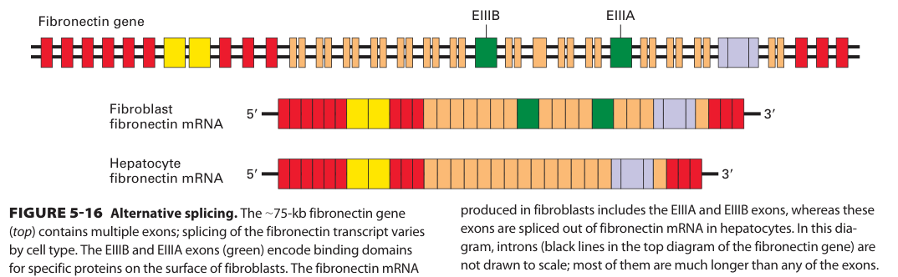
| Fibronectin gene | 纤连蛋白基因 |
| EIIIB EIIIA | EIIIB EIIIA |
| Fibroblast fibronectin mRNA | 成纤维细胞纤连蛋白 mRNA |
| Hepatocyte fibronectin mRNA | 肝细胞纤连蛋白 mRNA |
内含子位于外显子两侧，导致插入了由内含子隔开的一串重复外显子。许多真核基因中多个内含子的存在允许通过可变剪接从单个基因表达多种相关的蛋白质。在高等真核生物中，可变剪接是不同类型细胞产生不同形式蛋白质（称为同工型）的重要机制。
纤连蛋白是哺乳动物中发现的一种多结构域蛋白，为可变剪接提供了一个很好的例子（图5-16）。纤连蛋白是一种长的黏附蛋白，分泌到细胞外空间，可将其他蛋白质结合在一起。它结合什么以及在何处结合取决于哪些结构域被剪接在一起。纤连蛋白基因含有众多外显子，分为几个对应于蛋白质特定结构域的区域。成纤维细胞产生包含外显子EIIIA和EIIIB的纤连蛋白mRNA；这些外显子编码一个能紧密结合成纤维细胞质膜中蛋白质的蛋白质结构域。因此，这种纤连蛋白同工型将成纤维细胞黏附到细胞外基质上。在肝细胞（肝脏中的主要细胞类型）中，纤连蛋白初级转录本的可变剪接产生缺少EIIIA和EIIIB外显子的mRNA。其结果是，肝细胞分泌到血液中的纤连蛋白不会紧密黏附于成纤维细胞或大多数其他细胞类型，从而使其能够循环。然而，在血凝块形成过程中，肝细胞纤连蛋白的其他纤维蛋白结合结构域与血凝块的主要成分之一——纤维蛋白结合。然后，结合态纤连蛋白的另一个结构域与经过的血小板膜上的整合素相互作用，从而通过添加血小板来扩大血凝块。
已鉴定出超过20种不同的纤连蛋白同工型，每种都由不同的、由纤连蛋白基因外显子独特组合构成的可变剪接mRNA编码。对从各种组织中分离的大量mRNA进行测序，并将其序列与基因组DNA进行比较，揭示出近90%的人类基因以可变剪接mRNA的形式表达。显然，可变RNA剪接极大地扩展了高等多细胞生物基因组编码的蛋白质数量。
KEY CONCEPTS OF SECTION 5.2
蛋白质编码基因的转录与功能性 mRNA 的形成
r DNA的转录由RNA聚合酶执行，该酶每次将一个核糖核苷酸添加到生长中RNA链的3′端（见图5-11）。模板DNA链的序列决定了核糖核苷酸聚合形成RNA链的顺序。
r 在转录起始过程中，RNA聚合酶结合到DNA中的特定位置（启动子），局部解开双链DNA以暴露未配对的模板链，并聚合与模板链互补的前两个核苷酸。12–14个碱基对长度的解链区域称为转录泡。
r 在链延伸过程中，RNA聚合酶沿DNA移动，在聚合酶前方解开DNA，使模板链可以进入酶的活性位点，并允许刚转录区域的互补链在其后方重新退火。转录泡随聚合酶一起移动，同时酶将与模板链互补的核糖核苷酸添加到生长中RNA链的3′端。
r 当RNA聚合酶到达DNA中的终止序列时，酶停止转录，导致完成的RNA释放以及酶从模板DNA上解离。
r 在原核DNA中，若干蛋白质编码基因通常聚集成一个功能区域，称为操纵子，从单个启动子转录为一条编码多种功能相关蛋白质的mRNA（见图5-13a）。细菌mRNA的翻译可以在mRNA合成完成之前开始。
r 在真核DNA中，每个蛋白质编码基因从其自身的启动子转录。初始初级转录本通常包含间插在编码区（外显子）之间的非编码区（内含子）。
r 真核初级转录本必须经过RNA加工才能产生功能性RNA。在加工过程中，几乎所有蛋白质编码基因的初级转录本的两端都通过添加5′帽和3′poly(A)尾进行修饰。来自含有内含子的基因的转录本经历剪接，即切除内含子并连接外显子（见图5-15）。
r 高等真核生物中发现的多结构域蛋白质的各个结构域通常由单个外显子或少数几个外显子编码。这类蛋白质的不同同工型通常作为外显子可变剪接的结果在特定细胞类型中表达。
5.3 mRNA被tRNA解码
虽然DNA储存着蛋白质合成的信息，mRNA传递DNA中编码的指令，但大多数生物活动是由蛋白质执行的。正如我们在第3章中所见，每种蛋白质中氨基酸的线性排列顺序决定了其三维结构和活性。因此，按照DNA中编码的顺序正确组装氨基酸，对于产生功能性蛋白质以及细胞和生物体的正常运作至关重要。
翻译是将mRNA的核苷酸序列用作模板，以正确顺序将氨基酸连接成多肽链的整个过程（见图5-1，步骤3）。在真核细胞中，蛋白质合成发生在细胞质中，三种类型的RNA分子在此汇聚，执行不同但相互协作的功能（图5-17）：
1. 信使RNA（mRNA）以线性形式携带从DNA转录而来的遗传信息。mRNA以三个核苷酸为一组进行读取，称为密码子，每个密码子指定一种特定的氨基酸。
2. 转运RNA（tRNA）是解读mRNA中密码子的关键。每种氨基酸都有其自身的tRNA亚群，这些tRNA与该氨基酸共价结合，并在mRNA中的下一个密码子需要时将其携带至多肽链的生长端。在每个步骤中，携带正确氨基酸的tRNA之所以能被选中，是因为每个特定的tRNA分子都含有一个三核苷酸序列——反密码子，它可以与mRNA中互补的密码子进行碱基配对。
3. 核糖体RNA（rRNA）与一组蛋白质结合形成核糖体。这些复杂的结构沿着mRNA分子物理移动，催化氨基酸组装成多肽链。它们还结合tRNA以及蛋白质合成所需的各种辅助蛋白。核糖体由一个大亚基和一个小亚基组成，每个亚基都含有自身的rRNA分子。
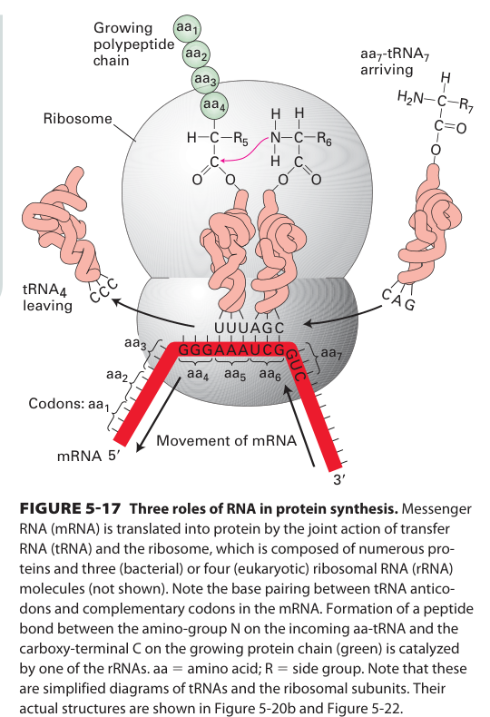
| mRNA | mRNA（信使RNA） |
| Ribosome | 核糖体 |
| Codons | 密码子 |
| Movement of mRNA | mRNA 移动 |
| tRNA leaving mRNA | tRNA 离开 mRNA |
| tRNA | tRNA |
| tRNA arriving | tRNA 到达 |
| Ribosome CCC | 核糖体 CCC |
| Growing polypeptide chain aa | 延伸中的多肽链 aa |
| GUC Codons: | GUC 密码子: |
这三类RNA在所有生物体的蛋白质合成中都发挥作用。在本节中，我们将重点讨论tRNA对mRNA的解码，以及这些RNA各自的结构如何与其特定任务相关联。它们如何与核糖体和蛋白质因子协同作用来合成蛋白质，将在下一节中详细描述。由于翻译对蛋白质合成至关重要，这两个过程通常被互换使用。然而，翻译产生的多肽链必须经过翻译后折叠，通常还需要其他修饰（如化学修饰、与其他链的组装），才能产生成熟的、有功能的蛋白质（见第3章）。
信使 RNA 以三字母遗传密码携带来自 DNA 的信息
如上所述，细胞使用的遗传密码是一种三联体密码，其中每三个核苷酸序列（即一个密码子）从mRNA的指定起点开始被"读取"。在遗传密码的64种可能密码子中（每个密码子的三个位置各有四种核苷酸之一，4 × 4 × 4 = 64种可能），61种指定特定的氨基酸，三种是终止密码子。表5-1显示，大多数氨基酸由不止一个密码子编码。只有两种——甲硫氨酸和色氨酸——只有一个密码子；另一个极端是，亮氨酸、丝氨酸和精氨酸各自由六个不同的密码子指定。指定同一种氨基酸的不同密码子称为同义密码子。密码本身被称为简并的，意味着一种特定的氨基酸可以由多个密码子来指定。
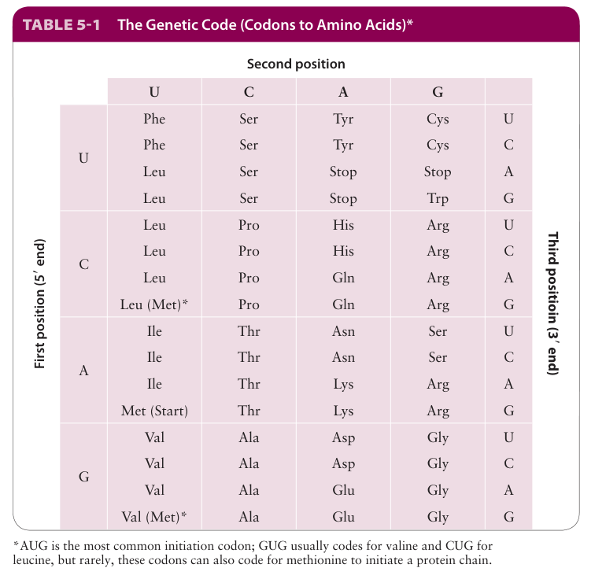
| Second position | 第二位置 |
| First position (5 | 第一位置(5' |
| Third positioin (3 | 第三位置(3' |
| U Phe | U 苯丙氨酸 |
| Ser Tyr | 丝氨酸 酪氨酸 |
| Cys U | 半胱氨酸 U |
| Phe Ser | 苯丙氨酸 丝氨酸 |
| Tyr Cys | 酪氨酸 半胱氨酸 |
| C Leu | C 亮氨酸 |
| Ser Stop | 丝氨酸 终止 |
| Stop A | 终止 A |
| Leu Ser | 亮氨酸 丝氨酸 |
| Stop Trp | 终止 色氨酸 |
| Leu Pro | 亮氨酸 脯氨酸 |
| His Arg | 组氨酸 精氨酸 |
| U Leu | U 亮氨酸 |
| Pro His | 脯氨酸 组氨酸 |
| Arg C | 精氨酸 C |
| Gln Arg | 谷氨酰胺 精氨酸 |
| Pro Gln | 脯氨酸 谷氨酰胺 |
| Arg G | 精氨酸 G |
| Thr Asn | 苏氨酸 天冬酰胺 |
| Ser U | 丝氨酸 U |
| Ile Thr | 异亮氨酸 苏氨酸 |
| Asn Ser | 天冬酰胺 丝氨酸 |
| C Ile | C 异亮氨酸 |
| Thr Lys | 苏氨酸 赖氨酸 |
| Arg A | 精氨酸 A |
| Met (Start) | 甲硫氨酸(起始) |
| G Val | G 缬氨酸 |
| Ala Asp | 丙氨酸 天冬氨酸 |
| Gly U | 甘氨酸 U |
| Val Ala | 缬氨酸 丙氨酸 |
| Asp Gly | 天冬氨酸 甘氨酸 |
| C Val | C 缬氨酸 |
| Ala Glu | 丙氨酸 谷氨酸 |
| Gly A | 甘氨酸 A |
| Val (Met)* | 缬氨酸(Met)* |
| Gly G | 甘氨酸 G |
所有原核和真核细胞中多肽链的合成都以甲硫氨酸开始。在细菌中，使用一种特殊形式的甲硫氨酸，其氨基上连接了一个甲酰基。在大多数mRNA中，指定这个氨基末端甲硫氨酸的起始密码子是AUG。在少数细菌mRNA中，GUG被用作起始密码子，而在真核生物中，CUG偶尔被用作甲硫氨酸的起始密码子。三个密码子UAA、UGA和UAG不指定氨基酸，而是在几乎所有细胞中构成终止密码子，标记多肽链的羧基末端。从特定起始密码子到终止密码子的密码子序列称为阅读框。这种精确的线性
原核和真核细胞中所有多肽链的合成均以甲硫氨酸开始。在细菌中，使用一种特殊形式的甲硫氨酸，其氨基上连接了一个甲酰基。在大多数 mRNA 中，指定这个氨基末端甲硫氨酸的起始密码子是 AUG。在少数细菌 mRNA 中，GUG 被用作起始密码子，而在真核生物中，CUG 偶尔被用作甲硫氨酸的起始密码子。三个密码子 UAA、UGA 和 UAG 不指定氨基酸，而是构成终止密码子，标记几乎所有细胞中多肽链的羧基末端。从特定起始密码子到终止密码子的密码子序列称为阅读框。这种精确的线性序列对应于氨基酸的线性序列，构成蛋白质的一级结构。
因为遗传密码是一种无重叠的三联体密码，密码子之间没有间隔，所以理论上一条特定的mRNA可以以三种不同的阅读框进行翻译。事实上，已经证明某些mRNA含有重叠信息，可以以不同的阅读框进行翻译，产生不同的多肽（图5-18）。然而，绝大多数mRNA只能以一种阅读框读取，因为其他两种可能的阅读框中遇到的终止密码子会在产生功能性蛋白质之前终止翻译。在极少数情况下，由于移码而出现另一种不寻常的编码方式。此时，蛋白质合成机器可能将四个核苷酸读作一个氨基酸，然后继续读取三联体，或者可能后退一个碱基，以新的阅读框读取所有后续三联体，直到链终止。已知的此类情况仅有几十例。
每种密码子的含义在大多数已知生物体中都是相同的——这是地球生命仅进化一次的强有力证据。
每个密码子的含义在大多数已知生物中都是相同的——这是地球上生命仅进化了一次的有力证据。事实上，表 5-1 所示的遗传密码被称为通用密码。然而，在许多线粒体、纤毛原生动物和 Acetabularia（一种单细胞植物）中，少数密码子的遗传密码有所不同。如表 5-2 所示，这些差异大多涉及将正常终止密码子解读为氨基酸，而非一种氨基酸交换为另一种氨基酸。这些对通用密码的例外情况可能是后来的进化发展；也就是说，密码子并非在任何单一时刻不可改变地固定下来，尽管一旦早期进化中一个通用密码开始运作，大规模改变就不再被容忍。
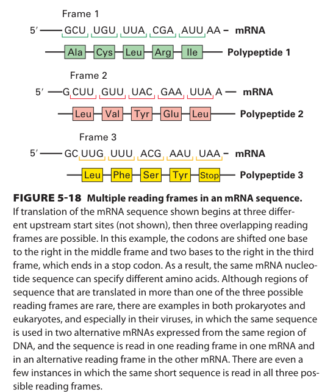
| mRNA | mRNA（信使RNA） |
| AUU Ala | AUU Ala |
| Cys Leu | Cys Leu |
| Arg Ile | Arg Ile |
| Polypeptide 1 | 多肽 1 |
| Polypeptide 2 mRNA | 多肽 2 mRNA |
| UUA Leu | UUA Leu |
| Val Tyr | Val Tyr |
| Glu Leu | Glu Leu |
| G Frame 1 | G 读码框 1 |
| GC UUG | GC UUG |
| Leu Phe | Leu Phe |
| Ser Tyr | Ser Tyr |
| Stop 5 | 终止 5 |
| Frame 3 | 读码框 3 |
| Frame 2 | 读码框 2 |
事实上，表 5-1 所示的遗传密码被称为通用密码。然而，在许多线粒体、纤毛原生动物和 Acetabularia（一种单细胞植物）中，少数密码子的遗传密码有所不同。如表 5-2 所示，这些差异大多涉及将正常终止密码子解读为氨基酸，而非一种氨基酸交换为另一种氨基酸。这些对通用密码的例外情况可能是后来的进化发展；也就是说，密码子并非在任何单一时刻不可改变地固定下来，尽管一旦早期进化中一个通用密码开始运作，大规模改变就不再被容忍。
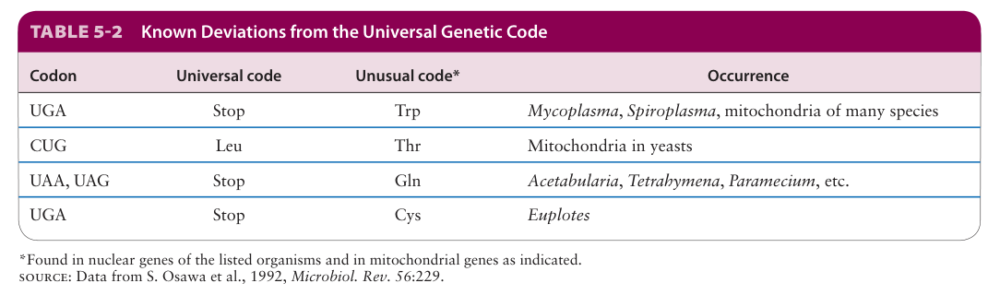
| aminoacyl-tRNA | 氨酰-tRNA |
| mRNA | mRNA（信使RNA） |
| Codon | 密码子 |
| Universal code | 通用密码 |
| Unusual code* | 异常密码* |
| Occurrence UGA | 出现 UGA |
| Stop Trp | 终止 色氨酸 |
| Mycoplasma , Spiroplasma | 支原体, 螺原体 |
| CUG Leu | CUG 亮氨酸 |
| Thr | 苏氨酸 |
| Mitochondria in yeasts | 酵母线粒体 |
| Stop Gln | 终止 谷氨酰胺 |
| Acetabularia , Tetrahymena | 伞藻, 四膜虫 |
| UGA Stop | UGA 终止 |
| Cys Euplotes | 半胱氨酸 游仆虫 |
tRNA 的折叠结构促进其解码功能
将 DNA 和 mRNA 的四核苷酸语言翻译或解码为蛋白质的二十种氨基酸语言，需要 tRNA 和称为氨酰-tRNA 合成酶的酶。要参与蛋白质合成，tRNA 分子必须通过高能键与特定氨基酸化学连接，形成氨酰-tRNA（图 5-19）。然后 tRNA 中的反密码子与 mRNA 中的密码子碱基配对，使活化的氨基酸得以添加到正在生长的多肽链上（见图 5-17）。
在细菌细胞中已鉴定出约 30-40 种不同的 tRNA，在动植物细胞中多达 50-100 种。因此，大多数细胞中 tRNA 的数量多于蛋白质合成中使用的氨基酸数量（20 种），也不同于遗传密码中氨基酸密码子的数量（61 个）。因此，许多氨基酸有不止一种 tRNA 可以与之结合（这解释了 tRNA 为何可以多于氨基酸）；此外，许多 tRNA 可以与多个密码子配对（解释了密码子为何可以多于 tRNA）。
tRNA 分子的功能（长度为 70-80 个核苷酸）取决于其精确的三维结构。在溶液中，所有 tRNA 分子折叠成类似的茎环排列，在二维绘制时类似于三叶草（图 5-20a）。四个茎是由 Watson-Crick 碱基配对稳定的短双螺旋；四个茎中的三个在其末端含有七或八个碱基的环，而剩下的无环茎包含链的游离 3′ 和 5′ 端。组成反密码子的三个核苷酸位于中间环的中心，处于便于密码子-反密码子碱基配对的易接近位置。在所有 tRNA 中，无环的接受茎的 3′ 端（特定氨基酸与之连接）具有序列 CCA，在大多数情况下，该序列在 tRNA 的合成和加工完成后添加。大多数 tRNA 中的若干碱基在转录后也被修饰，产生非标准核苷酸，如肌苷、二氢尿苷和假尿苷。我们稍后将看到，其中一些修饰碱基已知在蛋白质合成中起重要作用。从三维角度观察，折叠的 tRNA 分子呈 L 形，反密码子环和接受茎形成两个臂的末端（图 5-20b）。
从三维角度观察，折叠的 tRNA 分子呈 L 形，反密码子环和接受茎形成两个臂的末端（图 5-20b）。
如果密码子和反密码子之间需要完美的Watson-Crick碱基配对，细胞将必须包含至少61种不同类型的tRNA，每种对应一个指定氨基酸的密码子。然而，如上所述，许多细胞含有少于61种tRNA。数量较少的原因在于单个tRNA反密码子能够识别不止一个（但并非必然每一个）对应某种氨基酸的密码子。这种更广泛的识别之所以可能，是因为所谓摆动位置上碱基之间的非标准配对：即mRNA密码子中的第三个（3′）碱基与其tRNA反密码子中相应的第一个（5′）碱基之间。
密码子的第一个和第二个碱基几乎总是与相应反密码子的第三个和第二个碱基分别形成标准的Watson-Crick碱基对，但摆动位置可以发生四种非标准相互作用。
密码子的第一和第二碱基几乎总是分别与相应反密码子的第三和第二碱基形成标准 Watson-Crick 碱基配对，但碱基之间可以发生四种非标准相互作用。
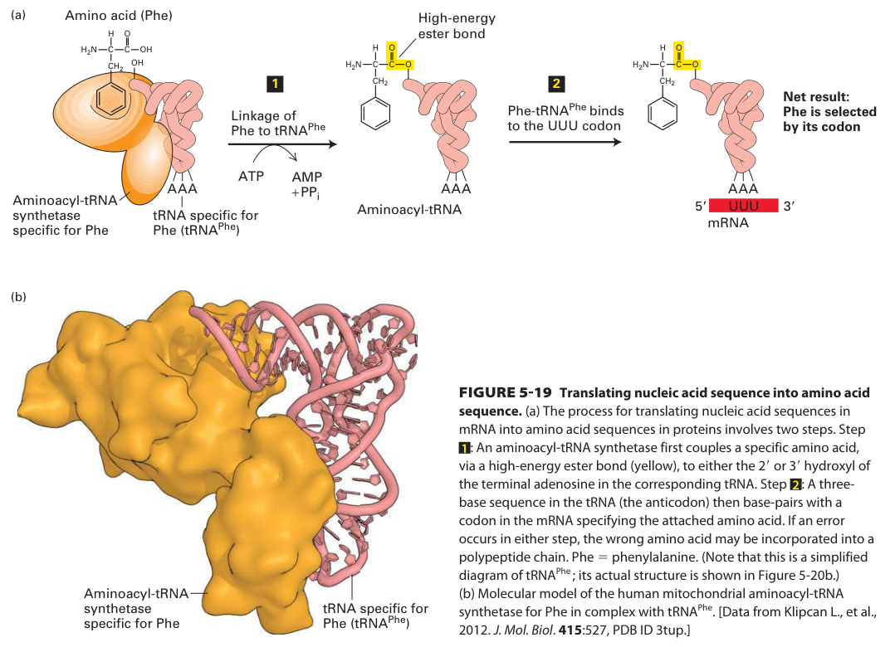
| mRNA | mRNA（信使RNA） |
| Amino acid (Phe) | 氨基酸 (Phe) |
| Aminoacyl-tRNA synthetase specific for Phe | 苯丙氨酸特异性氨酰-tRNA合成酶 |
| UUU mRNA | UUU mRNA |
| Phe-tRNA binds to the UUU codon | Phe-tRNA 与 UUU 密码子结合 |
| Linkage of Phe to tRNA | Phe 与 tRNA 连接 |
| Phe Net result: | Phe 最终结果: |
| Phe (tRNA | Phe (tRNA |
| Aminoacyl-tRNA OH | 氨酰-tRNA OH |
| OH ATP | OH ATP |
| High-energy ester bond | 高能酯键 |
| Phe | Phe |
| J. Mol. Biol | J. Mol. Biol |
虽然腺嘌呤很少出现在反密码子的摆动位置，但植物和动物中的许多tRNA在该位置含有肌苷（I），即腺嘌呤的脱氨产物。肌苷可以与A、C和U形成非标准碱基对。因此，摆动位置含有肌苷的tRNA可以识别第三个（摆动）位置为A、C或U的相应mRNA密码子（见图5-21）。因此，含肌苷的tRNA在翻译指定同一种氨基酸的同义密码子时被大量使用。例如，亮氨酸的六个密码子中的四个（CUA、
虽然腺嘌呤很少出现在反密码子摆动位置，但许多植物和动物 tRNA 在此位置含有肌苷（I），即腺嘌呤的脱氨产物。肌苷可以与 A、C 和 U 形成非标准碱基对。因此，摆动位置含有肌苷的 tRNA 可以识别在第三位含有 A、C 或 U 的相应 mRNA 密码子（见图 5-21）。因此，含肌苷的 tRNA 在翻译指定单一氨基酸的同义密码子中被大量使用。例如，亮氨酸的六个密码子中的四个（CUA、CUC、CUU 和 UUA）均由同一 tRNA 识别，其反密码子为 3′-GAI-5′；摆动位置的肌苷与这四个密码子中每个的第三碱基形成非标准碱基对。在 UUA 密码子的情况下，反密码子第 3 位与密码子第 1 位之间还形成非标准 G∙U 配对。
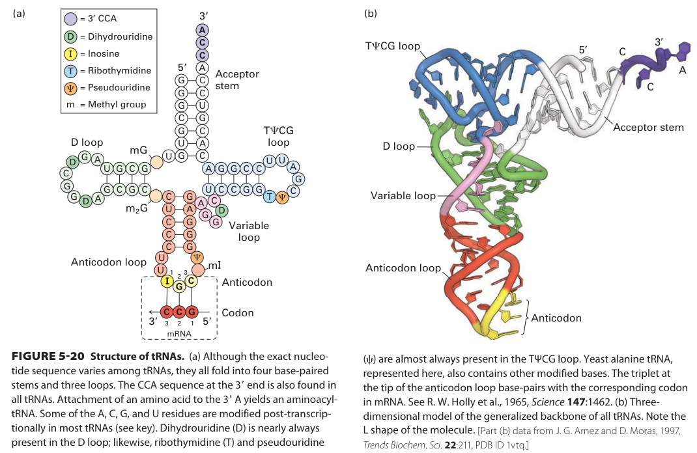
| Anticodon | 反密码子 |
| Codon | 密码子 |
| mRNA | mRNA（信使RNA） |
| CG loop | CG 环 |
| D loop | D 环 |
| Anticodon loop | 反密码子环 |
| Variable loop | 可变环 |
| Acceptor stem | 受体臂 |
| = Dihydrouridine | = 二氢尿苷 |
| = 3' CCA | = 3' CCA |
| = Inosine | = 肌苷 |
| = Pseudouridine | = 假尿苷 |
| = Ribothymidine | = 核糖胸苷 |
| = Methyl group | = 甲基 |
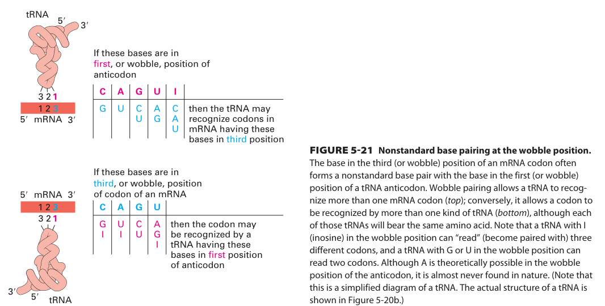
| Anticodon | 反密码子 |
| If these bases are in first, or wobble, position of anticodon | 如果这些碱基位于反密码子第一位(摆动位) |
| 3' tRNA | 3' tRNA |
| If these bases are in third position | 如果这些碱基位于第三位 |
CUC、CUU 和 UUA）均由同一 tRNA 识别，其反密码子为 3′-GAI-5′；摆动位置的肌苷与这四个密码子中每个的第三碱基形成非标准碱基对。在 UUA 密码子的情况下，反密码子第 3 位与密码子第 1 位之间还形成非标准 G∙U 配对。
特定tRNA对指定某种氨基酸的一个或多个密码子的识别，实际上是解码遗传信息的第二步。第一步，即将适当氨基酸连接到tRNA上，是由特定的氨酰-tRNA合成酶催化的。20种不同的合成酶各识别一种氨基酸及其所有兼容的（即同源的）tRNA。这些偶联酶通过一个需要ATP的反应，将氨基酸连接到tRNA分子3′末端腺苷的游离2′或3′羟基上。在该反应中，氨基酸通过高能键连接到tRNA上，因此被称为被激活。该键的能量随后驱动连接生长中多肽链上相邻氨基酸的肽键形成。氨酰化反应的平衡通过释放的焦磷酸中高能磷酸酐键的水解，进一步向氨基酸激活的方向驱动（见图5-19）。
氨酰-tRNA合成酶主要通过识别反密码子环和受体茎来识别其同源tRNA，尽管在某些情况下，与tRNA其他区域的相互作用也有助于识别。此外，结构上与同源tRNA相似的错误tRNA中的特定碱基会抑制错误tRNA的装载。因此，正确tRNA的识别依赖于正向相互作用和负向相互作用的缺失。尽管如此，由于某些氨基酸在结构上非常相似，氨酰-tRNA合成酶有时会出错。然而，这些错误会被酶自身纠正，它们具有校对活性，可以检查其氨基酸结合口袋中的匹配情况。如果错误的氨基酸被连接到tRNA上，结合的合成酶会催化将该氨基酸从tRNA上切除。这一关键功能有助于保证tRNA将正确的氨基酸递送到蛋白质合成机器中。大肠杆菌中翻译的总体错误率非常低，大约每50,000个密码子出现1次错误，这证明了tRNA识别的高保真度和氨酰-tRNA合成酶校对的重要性。
氨酰-tRNA 合成酶主要通过识别反密码子环和接受茎来识别其同源 tRNA，尽管在某些情况下，与 tRNA 其他区域的相互作用也有助于识别。此外，与同源 tRNA 结构相似的错误 tRNA 中的特定碱基会抑制错误 tRNA 的装载。因此，正确 tRNA 的识别依赖于正相互作用和负相互作用的缺失。尽管如此，由于某些氨基酸在结构上非常相似，氨酰-tRNA 合成酶有时会出错。然而，这些错误由酶自身纠正，它们具有校对活性，检查其氨基酸结合口袋中的适配情况。如果错误氨基酸被连接到 tRNA 上，结合的合成酶催化从 tRNA 上移除该氨基酸。这一关键功能有助于保证 tRNA 将正确的氨基酸递送到蛋白质合成机器。大肠杆菌中翻译的总体错误率非常低，约为每 50,000 个密码子 1 个错误，这证明了 tRNA 识别的忠实性和氨酰-tRNA 合成酶校对的重要性。
KEY CONCEPTS OF SECTION 5.3
r 来自DNA的遗传信息由mRNA以无重叠、简并的三联体密码形式携带。
r 每种氨基酸由mRNA中的一个或多个三核苷酸序列（密码子）编码。每个密码子指定一种氨基酸，但大多数氨基酸由多个密码子编码（见表5-1）。
r 甲硫氨酸的AUG密码子是最常见的起始密码子，指定蛋白质链氨基末端的氨基酸。三个密码子（UAA、UAG、UGA）作为终止密码子，不指定任何氨基酸。
r 阅读框是mRNA中从特定起始密码子到终止密码子的不间断密码子序列，被翻译成多肽链中氨基酸的线性序列。
r 将mRNA中的核苷酸序列解码为蛋白质的氨基酸序列依赖于tRNA和氨酰-tRNA合成酶。
r 所有tRNA具有相似的三维结构，包括一个用于连接特定氨基酸的受体茎，以及一个末端带有三碱基反密码子序列的茎环（见图5-20）。反密码子可以与mRNA中相应的密码子进行碱基配对。
r 由于非标准相互作用，一个tRNA可以与多个mRNA密码子进行碱基配对；反之，一个特定密码子可以与多个tRNA进行碱基配对。然而，在每种情况下，只有正确的氨基酸被插入到生长中的多肽链中。
r 20种氨酰-tRNA合成酶各识别一种氨基酸，并将其共价连接到同源tRNA上，形成氨酰-tRNA（见图5-19）。该反应激活氨基酸，使其能够参与肽键形成。
r 20 种氨酰-tRNA 合成酶各识别一种氨基酸，并将其共价连接到一个同源 tRNA 上，形成氨酰-tRNA（见图 5-19）。该反应激活氨基酸，使其能够参与肽键形成。
5.4 蛋白质在核糖体上的逐步合成
前几节已经介绍了蛋白质合成中的两个主要参与者：mRNA 和氨酰-tRNA。在此，我们首先描述蛋白质合成中的第三个关键角色——含有 rRNA 的核糖体——然后详细考察三者如何协同作用，完成核糖体上多肽链形成的生化事件。与转录类似，翻译这一复杂过程可分为三个阶段——起始、延伸和终止——我们将依次讨论。我们的描述以真核细胞翻译为主，但翻译机制在所有细胞中基本一致。
如果参与翻译mRNA的众多组分必须在自由溶液中相互作用，那么它们
如果参与翻译 mRNA 的众多组分必须在自由溶液中相互作用，那么它们
聚集在一起的概率将极低，以至于氨基酸聚合速率会非常缓慢。mRNA 和各氨酰-tRNA 在核糖体内的结合极大地提高了翻译效率。核糖体是细胞中含量最丰富的 RNA-蛋白质复合物，能以每秒添加 3 至 5 个氨基酸的速率指导多肽链延伸。因此，100–200 个氨基酸的小蛋白可在 1 分钟或更短时间内合成。而目前已知最大的蛋白质——存在于肌肉中的肌联蛋白（titin），含有约 30,000 个氨基酸残基，其合成需要 2–3 小时。完成这一任务的细胞机器必须精确且持久。
借助电子显微镜，核糖体最初在分泌大量蛋白质的细胞类型中被发现，是富含 RNA 的小颗粒。然而，直到获得了相当纯的核糖体制剂，其在蛋白质合成中的作用才被认识。用此类制剂进行的体外放射性标记实验表明，放射性氨基酸先被掺入与核糖体结合的生长中的多肽链，然后才出现在完成的多肽链中。
尽管细菌、古菌和真核生物的核糖体之间存在差异，但所有物种核糖体在结构和功能上的高度相似性反映了活细胞最基本组分的共同进化起源。核糖体由三（细菌和古菌）或四（真核生物）条不同的 rRNA 分子和多达 80 种蛋白质组成，组装成大亚基和小亚基（图 5-22 和表 5-3）。核糖体亚基和 rRNA 分子通常以 Svedberg 单位（S）表示，S 是
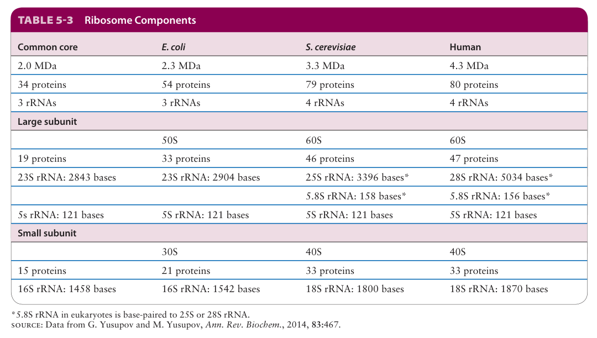
| Common core | 共同核心 |
| E. coli | 大肠杆菌 |
| S. cerevisiae | 酿酒酵母 |
| Human 2.0 MDa | 人类 2.0 MDa |
| Large subunit | 大亚基 |
| 60S 19 proteins | 60S 19种蛋白 |
| 23S rRNA: 2843 bases | 23S rRNA: 2843碱基 |
| 23S rRNA: 2904 bases | 23S rRNA: 2904碱基 |
| 25S rRNA: 3396 bases* | 25S rRNA: 3396碱基* |
| 28S rRNA: 5034 bases* | 28S rRNA: 5034碱基* |
| 5.8S rRNA: 158 bases* | 5.8S rRNA: 158碱基* |
| 5.8S rRNA: 156 bases* | 5.8S rRNA: 156碱基* |
| 5s rRNA: 121 bases | 5S rRNA: 121碱基 |
| Small subunit | 小亚基 |
| 40S 15 proteins | 40S 15种蛋白 |
| 16S rRNA: 1458 bases | 16S rRNA: 1458碱基 |
| 16S rRNA: 1542 bases | 16S rRNA: 1542碱基 |
| 18S rRNA: 1800 bases | 18S rRNA: 1800碱基 |
| 18S rRNA: 1870 bases | 18S rRNA: 1870碱基 |
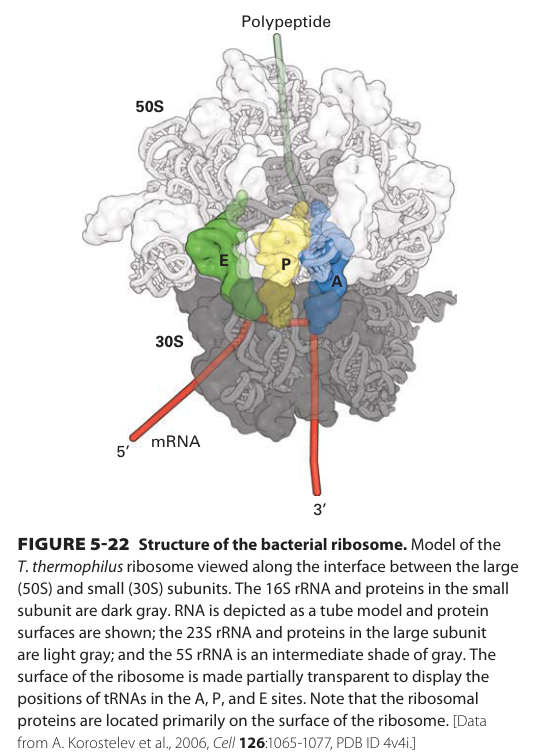
| mRNA | mRNA（信使RNA） |
| Polypeptide 5' | 多肽 5' |
| 3' mRNA | 3' mRNA |
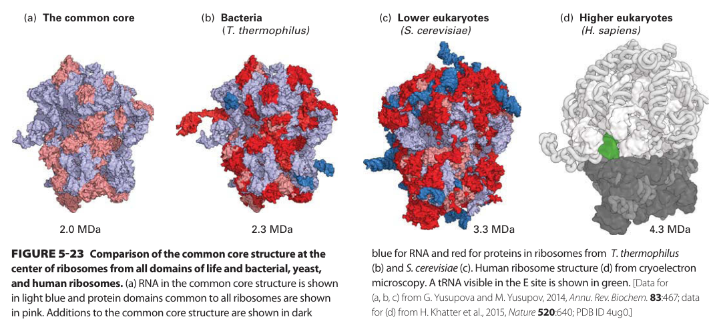
| (T. thermophilus) | (嗜热栖热菌) |
| (S. cerevisiae) | (酿酒酵母) |
| (H. sapiens) | (人类) |
| T. thermophilus | 嗜热栖热菌 |
| S. cerevisiae | 酿酒酵母 |
在标准条件下离心时大分子沉降速率的度量——本质上是分子大小的对数度量。小核糖体亚基含有一条 rRNA 分子，称为小 rRNA。大亚基含有一条大 rRNA 分子和一条 5S rRNA 分子，在脊椎动物中还额外含有一条 5.8S rRNA 分子。rRNA 分子的长度、各亚基中蛋白质的数目以及因此亚基的大小，在细菌和真核细胞之间有所不同（见表 5-3）。组装完成的核糖体在细菌中为 70S，在脊椎动物中为 80S。目前已知数千种生物的小 rRNA 和大 rRNA 序列。尽管这些 rRNA 的一级核苷酸序列差异很大，但每种 rRNA 的相同区域理论上可以形成碱基配对的发夹结构、茎环结构和环-环相互作用（见图 5-9），从而在所有生物的 rRNA 和蛋白质中产生类似的三维核心结构。细菌和酵母核糖体（见图 5-23）以及古菌核糖体大亚基的三维结构已通过 X 射线晶体学确定。人类（见图 5-23）和植物核糖体的结构也已通过冷冻电镜确定。在共同核心区域——即 mRNA 和 tRNA 结合以及肽键形成催化发生的位置——rRNA 的结构在所有三个生命域中均相似。然而，古菌 rRNA 和蛋白质与真核生物核糖体比与细菌核糖体更相似，这反映了它们从共同祖先分化较晚（见图 1-1）。在大多数情况下，多种核糖体蛋白远小于 rRNA，并与核糖体表面结合。虽然核糖体中蛋白质分子的数量远多于 RNA 分子，
核糖体的高分辨率结构正在为许多抗生素抑制细菌蛋白质合成而不影响哺乳动物核糖体功能的机制提供新的见解。这些见解为新型抗生素的设计和合成提供了重要线索。由于对现有抗生素耐药的细菌日益普遍，尤其是在医院中——在那里抗生素耐药细菌处于正向选择之下——此类研究的需求极为迫切。■
核糖体的高分辨率结构正在为许多抗生素抑制细菌蛋白质合成而不影响哺乳动物核糖体功能的机制提供新的见解。这些见解为新型抗生素的设计和合成提供了重要线索。此类研究迫切需要，因为对现有抗生素耐药的细菌日益普遍，尤其是在医院中，抗生素耐药菌处于正选择压力之下。■
Met 识别 AUG 起始密码子
Methionyl-tRNAi
Met可以起始蛋白质合成，而tRNAMet只能将甲硫氨酸掺入到正在生长的蛋白质链中。相同的
Met
可以起始蛋白质合成，而 tRNA^Met 只能将甲硫氨酸掺入正在生长的蛋白质链中。同样的
Met上的活化甲硫氨酸）能够结合到小核糖体亚基上的适当位置——P位点，以开始多肽链的合成。普通的Met-tRNAMet以及所有其他装载的tRNA只能结合到A位点，如下文所述。tRNA在将其共价结合的氨基酸转移给生长中的多肽链后，进入出口位点或E位点。
Met（即，连接到 tRNA_i^Met 上的活化甲硫氨酸）
在翻译的第一阶段，小核糖体亚基和大核糖体亚基围绕一条mRNA组装，该mRNA上有一个Met-tRNAi
Met正确定位在核糖体P位点的起始密码子上。在真核生物中，该复合物的组装由一组称为真核翻译起始因子（eIF）的特殊蛋白质介导。当每个单独的组分加入复合物时，它由与特定eIF的相互作用来引导。若干起始因子结合GTP，GTP水解为GDP作为校对开关，只有在前一步骤正确发生时才允许后续步骤进行。在GTP水解之前，复合物是不稳定的，允许组分解离并再次尝试形成复合物，直到正确的复合物组装完成，导致GTP水解并稳定相应的复合物。
过去几年中，在理解脊椎动物翻译起始方面取得了相当大的进展。脊椎动物翻译起始的当前模型如图5-24所示。前一轮翻译释放的大、小核糖体亚基通过eIF 1、1A和3与小40S亚基的结合而保持分离（图5-24，顶部）。翻译起始的第一步是形成43S前起始复合物。该前起始复合物是在结合了eIF 1、1A和3的40S亚基与eIF5以及一个由Met-tRNAi
Met和结合GTP的eIF2组成的三元（三部分）复合物结合时形成的（图5-24，步骤1和2）。起始因子eIF2在与GTP结合和与GDP结合之间交替；它只有在与GTP结合时才能结合Met-tRNAi
Met。细胞可以通过磷酸化结合GDP的eIF2上的一个丝氨酸残基来抑制蛋白质合成；磷酸化的复合物无法将结合的GDP交换为GTP，也无法结合Met-tRNAi
Met，因此蛋白质合成无法进行。
要被翻译的mRNA由多亚基eIF4复合物结合，该复合物与5′帽和结合在mRNA聚腺苷酸尾上的多个拷贝的细胞质聚腺苷酸结合蛋白（PABPC）相互作用。这两种相互作用对大多数mRNA的翻译都是必需的。这种结合导致形成一个环状复合物（图5-24，步骤3）。eIF4帽结合复合物由若干具有不同功能的亚基组成。eIF4E亚基结合
mRNA上的5′帽（见图5-14）。大型eIF4G亚基与结合在mRNA聚腺苷酸尾上的多个PABPC蛋白协同结合，同时也形成一个支架，其他eIF4亚基结合在其上。然后，mRNA-eIF4复合物通过eIF4G与eIF3之间的相互作用与前起始复合物结合（步骤4）。
随后，起始复合物沿着结合的mRNA滑动或扫描，此时eIF4A的解旋酶活性在eIF4B的刺激下，利用ATP水解的能量解开RNA二级结构（步骤5）。当tRNAi
Met反密码子识别到起始密码子时扫描停止，在大多数真核mRNA中，起始密码子是5′端下游的第一个AUG。起始密码子的识别导致与eIF2结合的GTP水解，这是一个不可逆的步骤，阻止进一步扫描，导致形成48S起始复合物（步骤6）。这种对正确起始密码子的锁定由eIF5（一种eIF2 GTP酶激活蛋白，GAP，见图3-34）促进。起始AUG的选择由特定的周围核苷酸（称为Kozak序列，以定义它的Marilyn Kozak命名）来促进：(5′)ACCAUGG(3′)。AUG之前的A（粗体）和紧随其后的G是影响翻译起始效率的最重要核苷酸。
大（60S）亚基与小亚基的结合，由结合GTP的eIF5B介导，导致许多起始因子被置换（步骤7）。核糖体亚基之间的正确结合导致eIF5B结合的GTP水解为GDP，并释放eIF5B-GDP和eIF1A（步骤8），完成80S起始复合物的形成。将核糖体亚基连接反应与eIF5B的GTP水解偶联，使得起始过程只有在亚基相互作用正确发生时才能继续。这也使该步骤不可逆，因此核糖体亚基不会解离，直到整个mRNA被翻译完毕且蛋白质合成终止。
真核蛋白质合成机器如上述那样，在距5′帽端约100个核苷酸内开始翻译大多数细胞mRNA。然而，某些细胞mRNA含有一个内部核糖体进入位点（IRES），位于远离5′端下游的位置。据认为，细胞IRES形成RNA结构，与eIF4A和eIF4G的复合物相互作用，该复合物随后与结合在带有eIF1和eIF1A的40S亚基上的eIF3结合。然后该组装结合一个eIF2三元复合物，直接在邻近的AUG密码子上组装起始复合物。此外，某些正链病毒RNA缺乏5′帽，其翻译在病毒IRES序列处起始。这些RNA根据起始所需的标准eIF数量分为不同类别。在蟋蟀麻痹病毒中，约200 nt长的IRES折叠成一个复杂结构，直接与40S核糖体亚基相互作用，无需任何eIF甚至起始Met-tRNAi
Met即可起始！在细菌中，小核糖体亚基与起始位点的结合通过一种不同的机制发生，
大（60S）亚基与小亚基的结合由结合 GTP 的 eIF5B 介导，导致许多起始因子被置换（步骤 7）。核糖体亚基之间的正确结合导致 eIF5B 结合的 GTP 水解为 GDP，并释放 eIF5B-GDP 和 eIF1A（步骤 8），完成 80S 起始复合物的形成。核糖体亚基结合反应与 eIF5B 对 GTP 的水解相偶联，使得起始过程仅在亚基相互作用正确发生时才能继续。这也使该步骤成为不可逆步骤，因此核糖体亚基不会解离，直到整个 mRNA 被翻译完毕且蛋白质合成终止。
真核蛋白质合成机器如上所述，在大多数细胞 mRNA 的 5′ 帽端约 100 个核苷酸内开始翻译。然而，某些细胞 mRNA 含有一个位于 5′ 端下游远处的内部核糖体进入位点（IRES）。据认为，细胞 IRES 形成 RNA 结构，与 eIF4A 和 eIF4G 的复合物相互作用，后者再与结合在带有 eIF1 和 eIF1A 的 40S 亚基上的 eIF3 结合。该组装体随后结合 eIF2 三元复合物，直接在邻近的 AUG 密码子上组装起始复合物。此外，某些缺乏 5′ 帽的正链病毒 RNA 的翻译在病毒 IRES 序列处起始。这些 RNA 根据起始所需标准 eIF 的数量分为不同类别。在蟋蟀麻痹病毒中，约 200 nt 长的 IRES 折叠成复杂结构，直接与 40S 核糖体亚基相互作用，在没有任何 eIF 甚至起始 Met-tRNA_i^Met 的情况下起始翻译！
Met ! 在细菌中，小核糖体亚基与起始位点的结合通过一种不同的机制进行，
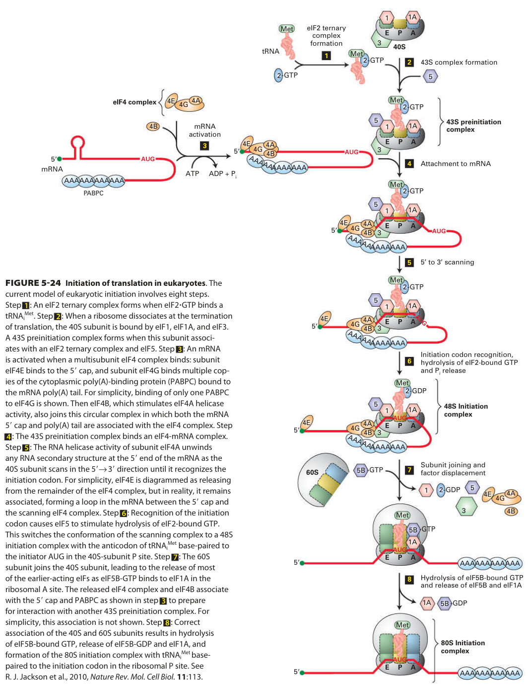
| mRNA | mRNA（信使RNA） |
| activation | 激活 |
| ATP | ATP（三磷酸腺苷） |
| 1A eIF2 ternary complex formation | 1A eIF2 三元复合物形成 |
| 43S complex formation | 43S 复合物形成 |
| Attachment to mRNA | 附着到 mRNA |
| mRNA activation | mRNA 激活 |
| tRNA | tRNA |
| 43S preinitiation complex | 43S 起始前复合物 |
| eIF4 complex | eIF4 复合物 |
| 48S Initiation complex | 48S 起始复合物 |
| 80S Initiation complex | 80S 起始复合物 |
| 40S AUG | 40S AUG |
| AUG 5 | AUG 5' |
| ADP + Pi | ADP + Pi |
| 5' to 3' scanning | 5' 到 3' 扫描 |
| Subunit joining and factor displacement | 亚基结合与因子解离 |
| PABPC-GDP | PABPC-GDP |
| 5B -GTP | 5B -GTP |
| -GDP 5B -GTP | GDP 5B -GTP |
| -GTP 2 | -GTP 2 |
| Met -GTP | Met -GTP |
| Met 1 | Met 1 |
| 1A AUG | 1A AUG |
| 4G AAAAAAA | 4G AAAAAAA |
| -GDP 2 | -GDP 2 |
| Met 1A | Met 1A |
| Step 5 | 步骤 5 |
翻译起始完成时，Met-tRNAi
Met复合物已经准备好开始通过mRNA的框内翻译逐步添加氨基酸。与起始一样，需要一组称为翻译延伸因子（EF）的特殊蛋白质来执行链延伸过程。延伸的关键步骤是：每个后续氨酰-tRNA（其反密码子与下一个密码子互补）的进入，肽键的形成，以及核糖体沿mRNA一次一个密码子的移动或转位。
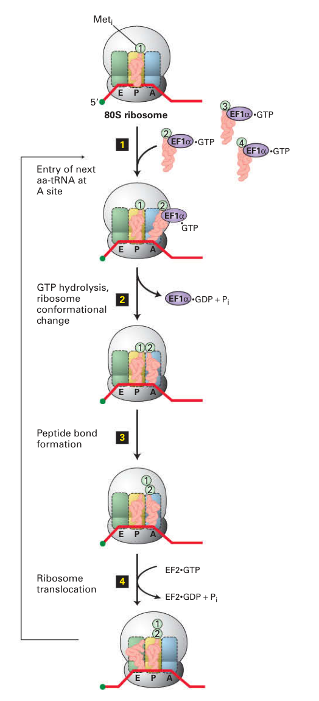
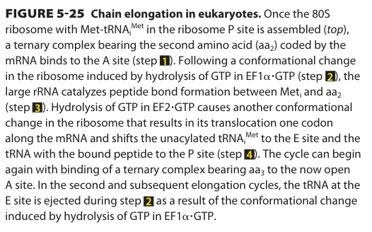
| 80S ribosome | 80S核糖体 |
| DIBOHF + | 构象变化 |
正确位置的核糖体–Met-tRNAi
如前所述，在翻译起始完成时，Met-tRNAi
正确定位的核糖体–Met-tRNA_i^Met
Met处于核糖体P位点中（顶部），携带mRNA编码的第二个氨基酸（aa2）的三元复合物结合到A位点（步骤1）。在EF1α∙GTP中GTP水解诱导的核糖体构象变化之后（步骤2），大rRNA催化Meti和aa2之间的肽键形成（步骤3）。EF2∙GTP中GTP的水解引起核糖体另一个构象变化，导致其沿mRNA转位一个密码子，并将未装载的tRNAi
Met 结合在组装好的 80S 核糖体的 P 位点上（图 5-25，顶部）。核糖体的这一区域被称为 P 位点，因为与生长中的多肽链化学连接的 tRNA 位于此处。第二个氨酰-tRNA 以与 EF1α∙GTP 结合的三元复合物形式进入核糖体，并结合到 A 位点——如此命名是因为氨酰-tRNA 在此处结合（步骤 1）。与各种氨酰-tRNA 结合的 EF1α∙GTP 扩散进入 A 位点，但翻译的下一步仅在 tRNA 反密码子与编码区第二个密码子碱基配对时才进行。当正确配对发生时，结合的 EF1α∙GTP 中的 GTP 被水解。GTP 的水解促进 EF1α 发生构象变化，
导致生成的 EF1α∙GDP 复合物被释放，氨酰-tRNA 紧密结合在 A 位点（步骤 2）。这一构象变化还将 tRNA 氨酰化的 3′ 端定位在 A 位点中，靠近 P 位点 Met-tRNA_i^Met 的 3′ 端。
Met 在 P 位点。如果进入的氨酰-tRNA 的反密码子不能与
在起始的Met-tRNAi
肽键合成后，核糖体沿mRNA转位一个密码子的距离。此转位步骤由真核EF2∙GTP中GTP的水解来监控。一旦转位正确发生，结合的GTP被水解，这是另一个不可逆过程，防止核糖体沿RNA错误方向移动或转位错误数量的核苷酸。由于伴随正确转位的核糖体构象变化以及由此产生的EF2对GTP的水解，tRNAi
Met，现在已失去其活化的甲硫氨酸，被移到核糖体上的E（出口）位点；同时，第二个tRNA，现在共价结合了一个二肽（即肽基-tRNA），被移到P位点（图5-25，步骤4）。因此，转位使核糖体构象回到A位点开放的状态，能够接受另一个与EF1α∙GTP复合的氨酰-tRNA，开始新一轮链延伸。
重复图5-25所示的延伸循环，每次将一个氨基酸添加到生长中多肽的羧基末端，按照mRNA序列的指令进行，直到遇到终止密码子。在后续循环中，步骤2中发生的构象变化将未装载的tRNA从E位点排出。随着新生多肽链变得更长，它穿过大核糖体亚基中的一个通道，在与小亚基相互作用的一侧相反的位置退出（图5-22，5-26）。
在没有核糖体的情况下，A位点和P位点中tRNA反密码子与mRNA密码子之间的三碱基对RNA-RNA杂合体将不稳定；分离的RNA分子之间的RNA-RNA双链必须相当长
重复图 5-25 所示的延伸循环，按照 mRNA 序列的指令，每次将一个氨基酸添加到生长中的多肽的羧基端，直到遇到终止密码子。在后续循环中，步骤 2 中发生的构象变化将未酰化的 tRNA 从 E 位点排出。随着新生多肽链变长，它穿过大核糖体亚基中的一个通道，在与小亚基相互作用面的对面一侧退出（图 5-22、5-26）。
在没有核糖体的情况下，A 位点和 P 位点中 tRNA 反密码子与 mRNA 密码子之间的三碱基对 RNA-RNA 杂交体将不稳定；
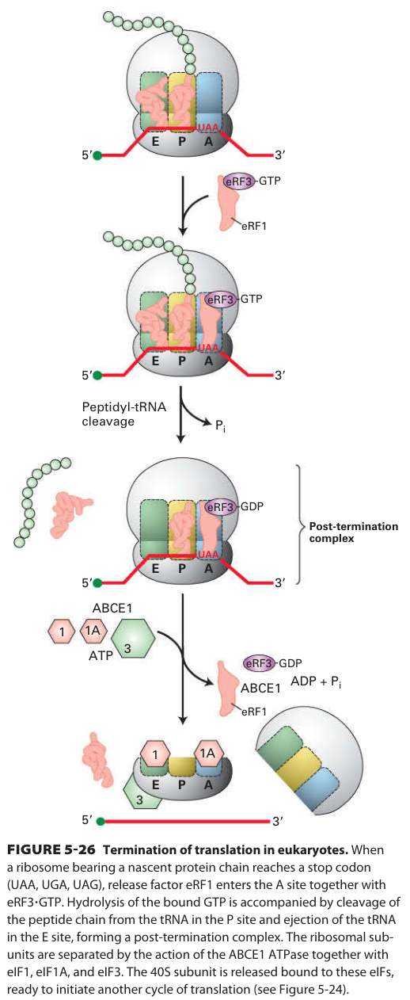
| Peptidyl-tRNA cleavage | 肽酰-tRNA切割 |
| ADP + P i | ADP + 无机磷酸 |
| ATP 5 | ATP |
| GDP eRF3 eRF1 | GDP eRF3 eRF1 |
| - GTP eRF3 | - GTP eRF3 |
| UAA 5 | UAA |
| - GDP eRF3 | - GDP eRF3 |
| UAA Post-termination complex eRF1 | UAA 终止后复合物 eRF1 |
更长才能在生理条件下保持稳定。然而，大、小 rRNA 与 tRNA 的通用结构域（例如 D 环和 TψCG 环，
翻译的最后阶段，与起始和延伸一样，需要高度特异的分子信号来决定mRNA–核糖体–肽基-tRNA复合物的命运。已发现两种类型的特定蛋白质释放因子（RF）。真核eRF1的形状类似于tRNA，通过结合到核糖体A位点并直接识别终止密码子来发挥作用。与前面讨论的某些起始和延伸因子一样，第二个真核释放因子eRF3是一种GTP结合蛋白。eRF3∙GTP复合物与eRF1协同作用，促进肽基-tRNA键的切割，从而释放完成的蛋白质链并终止翻译（图5-26）。细菌具有两个在功能上类似于eRF1的释放因子（RF1和RF2）和一个在功能上类似于eRF3的GTP结合因子（RF3）。同样，eRF3 GTP酶监控eRF1对终止密码子的正确识别。P位点中tRNA的肽基-tRNA键只有在三个终止密码子之一被eRF1正确识别时才会被切割，这是蛋白质合成中校对步骤的另一个例子。
完成蛋白质的释放使P位点留下一个游离的tRNA，mRNA仍然与80S核糖体结合，eRF1和eRF3∙GDP仍然结合在A位点中。在真核生物中，核糖体回收发生在这个终止后复合物被一个称为ABCE1的蛋白质结合时，该蛋白质利用ATP水解的能量分离亚基并释放mRNA和P位点中的tRNA。起始因子eIF1、eIF1A和eIF3（也是亚基分离所必需的）装载到40S亚基上，使其准备好进行下一轮起始（见图5-24，顶部）。实际上，如图5-26为简化而图示的那样，游离的mRNA永远不会被释放。相反，mRNA上有其他处于不同延伸阶段的核糖体与之结合，PABPC结合在聚腺苷酸尾上，eIF4复合物结合在5′帽上，随时准备与另一个43S前起始复合物结合（见图5-24）。
除了这些在蛋白质合成中的功能外，核糖体还与蛋白质分子伴侣瞬时结合，这些分子伴侣协助多肽链从核糖体表面出现时进行折叠（见图3-17）。正如我们将在第13章中看到的，合成那些注定要插入内质网（ER）、转运到ER腔并随后分泌到细胞外、或引入其他细胞器（如溶酶体）的蛋白质的核糖体，还与一个称为SRP（信号识别颗粒）的核糖核蛋白复合物结合，该复合物阻止蛋白质合成，直到
新生多肽遇到用于插入ER的特化通道。当蛋白质合成被允许恢复时，SRP还协助这些蛋白质通过这些ER通道的插入和穿行。
除了在蛋白质合成中的这些功能外，核糖体还短暂地与蛋白质伴侣结合，帮助多肽链从核糖体表面出现时折叠（见图 3-17）。正如我们将在第 13 章中看到的，合成那些注定要插入内质网（ER）、转运到 ER 腔随后分泌到细胞外、或进入其他细胞器如溶酶体的蛋白质的核糖体，还与一种称为 SRP（信号识别颗粒）的核糖核蛋白复合物结合，该复合物使蛋白质合成停滞，直到
翻译一条真核mRNA分子以产生一个典型大小的蛋白质需要1到2分钟。两种现象显著提高了细胞合成蛋白质的总速率：多个核糖体同时翻译一条mRNA分子，以及核糖体亚基从终止密码子脱离后快速回收。多个核糖体同时翻译一条mRNA在电子显微照片和沉降分析中很容易观察到，显示出mRNA分子附着在多个带有新生生长多肽链的核糖体上。这些结构被称为多聚核糖体或多核糖体，在某些组织的电子显微照片中呈环状。随后用纯化的起始因子进行的研究解释了多聚核糖体的环状形状，并提出了核糖体有效回收的机制。
这些研究揭示，细胞质聚腺苷酸结合蛋白（PABPC）的多个拷贝与mRNA的聚腺苷酸尾和eIF4的eIF4G亚基相互作用。由于eIF4的eIF4E亚基结合到mRNA 5′端的帽结构上，mRNA分子的两端被中间的蛋白质桥接，形成一个"环状"mRNA（图5-27a）。由于多聚核糖体的两端相对接近，从终止密码子脱离的核糖体亚基被定位在5′端附近，通过40S亚基及其相关的起始因子与结合在5′帽上的eIF4相互作用，促进重新起始。图5-27b所示的环状通路被认为增强了核糖体回收，从而提高了蛋白质合成的效率。
单个真核 mRNA 分子翻译产生一个典型大小蛋白质需要 1 到 2 分钟。两种现象显著提高了细胞合成蛋白质的总速率：单个 mRNA 分子被多个核糖体同时翻译，以及核糖体亚基在脱离终止密码子后快速循环再利用。mRNA 被多个核糖体同时翻译在电子显微照片和沉降分析中很容易观察到，显示 mRNA 分子附着在多个携带新生生长多肽链的核糖体上。这些结构被称为多聚核糖体（polyribosome 或 polysome）。在某些组织的电子显微照片中，这些结构呈环状。随后用纯化的起始因子进行的研究解释了多聚核糖体的环状形态，并提示了核糖体高效循环再利用的机制。
我们现在可以看到，一个或多个GTP结合蛋白参与翻译的每个阶段。这些蛋白质属于GTP酶超家族的开关蛋白，它们在结合GTP的活性形式和结合GDP的非活性形式之间循环（见图3-34）。结合的GTP水解引起GTP酶本身和其他相关蛋白的构象变化，这对各种复杂的分子过程至关重要。例如，在翻译起始中，eIF2∙GTP水解为eIF2∙GDP阻止了在遇到起始位点后进一步扫描mRNA，并允许大核糖体亚基与小亚基结合（见图5-24，步骤6）。类似地，eIF5B∙GTP的水解监控大、小核糖体亚基的成功结合（图5-24，步骤8）。回想一下，如果正确的复合物没有形成，eIF5B∙GTP不会水解GTP，复合物不稳定，可以自由扩散分开
GTPase 超家族蛋白在翻译的多个质量控制步骤中发挥作用
我们现在可以看到，一种或多种 GTP 结合蛋白参与了翻译的每个阶段。这些蛋白属于 GTPase 超家族的开关蛋白，在 GTP 结合的活性形式和 GDP 结合的非活性形式之间循环（见图 3-34）。结合的 GTP 的水解引起 GTPase 本身及其他相关蛋白的构象变化，这对各种复杂的分子过程至关重要。例如，在翻译起始中，eIF2∙GTP 水解为 eIF2∙GDP 阻止了 mRNA 在遇到起始位点后的进一步扫描，并允许大核糖体亚基结合到小亚基上（见图 5-24，步骤 6）。类似地，eIF5B∙GTP 的水解监控大、小核糖体亚基的成功结合（图 5-24 步骤 8）。回想一下，如果正确的复合物没有形成，eIF5B∙GTP 不会水解 GTP，复合物就不稳定，可以自由扩散解离。
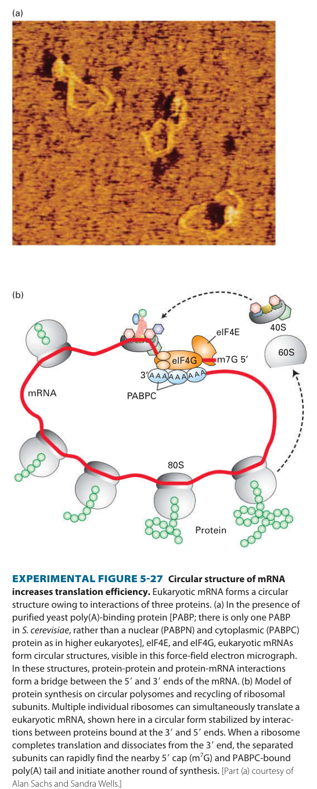
| 60S elF4G mRNA | 60S eIF4G mRNA |
| PABPC | PABPC |
一种可以使任何生物体中的基因失活的突变是碱基对改变，将通常编码氨基酸的密码子转变为终止密码子，例如从UAC（编码酪氨酸）变为UAG（终止）。当这种突变发生在阅读框的早期时，产生的截短蛋白质通常是无功能的。这类突变称为无义突变，因为当研究人员正在解读将每个三联体密码子序列等同于单一氨基酸的遗传密码时，发现三个终止密码子不编码任何氨基酸——它们不"产生意义"。
在对大肠杆菌的遗传学研究中，发现无义突变的影响可以被tRNA基因中的第二个突变所抑制。当tRNA基因中编码反密码子的序列被改变为与原突变终止密码子互补的三联体时，就会发生这种情况。例如，如果tRNATyr中的突变将其反密码子从GUA变为CUA（可以与UAG终止密码子碱基配对），那么突变的tRNATyr仍然可以被酪氨酰-tRNA合成酶识别并与酪氨酸偶联。同时具有原始无义突变和tRNATyr基因反密码子中第二个突变的细胞因此可以在突变终止密码子的位置插入酪氨酸，使蛋白质合成能够越过原始无义突变继续进行。这种机制效率不高，因此在大多数情况下，具有UAG终止密码子的正常mRNA的翻译仍在正常位置终止。如果由带有无义突变的原始基因编码的蛋白质能够产生足够数量以提供其基本功能，则第一个突变的影响被认为被tRNA基因反密码子中的第二个突变所抑制。
这种无义抑制机制是细菌遗传学研究中的一个强大工具。例如，它使我们能够分离不能在正常细胞中生长但可以在表达无义抑制tRNA的细胞中生长的突变细菌病毒，因为该突变病毒在一个必需基因中具有无义突变。然后，在无义抑制细胞上生长的这种突变病毒可用于实验，通过感染不抑制该突变的正常细胞来分析
在对大肠杆菌（E. coli）的遗传学研究中，人们发现无义突变的影响可以被 tRNA 基因中的第二个突变所抑制。当 tRNA 基因中编码反密码子的序列被改变为与原始突变终止密码子互补的三联体时，就会发生这种情况。例如，如果 tRNA^Tyr 中的一个突变将其反密码子从 GUA 变为 CUA（可以与 UAG 终止密码子碱基配对），那么突变 tRNA^Tyr 仍可被酪氨酰-tRNA 合成酶识别并与酪氨酸偶联。同时具有原始无义突变和 tRNA^Tyr 基因反密码子中第二个突变的细胞，因此可以在突变终止密码子位置插入酪氨酸，使蛋白质合成能够越过原始无义突变继续进行。该机制效率不高，因此在大多数情况下，带有 UAG 终止密码子的正常 mRNA 的翻译仍在正常位置终止。如果带有无义突变的原始基因能产生足够多的蛋白质来提供其必需功能，则第一个突变的影响被认为被 tRNA 基因反密码子的第二个突变所抑制。
这种无义抑制机制是细菌遗传学研究中的有力工具。例如，它使我们能够分离出在正常细胞中无法生长但在表达无义抑制 tRNA 的细胞中可以生长的突变细菌病毒，因为突变病毒在必需基因中有一个无义突变。这种在无义抑制细胞上生长的突变病毒随后可用于实验，以分析
突变基因的功能，方法是感染不抑制该突变的正常细胞，并分析在缺乏突变蛋白的情况下病毒生命周期中哪个步骤出现缺陷。
KEY CONCEPTS OF SECTION 5.4
r 来自许多不同物种的类似rRNA折叠成非常相似的三维结构，含有大量茎环以及蛋白质、mRNA和tRNA的结合位点。小得多的核糖体蛋白结合在rRNA的外围。
r 在所有细胞中发现的两种甲硫氨酸tRNA中，只有一种（tRNAi
Met）在翻译起始中起作用。
r 翻译的每个阶段——起始、链延伸和终止——都需要特定的蛋白质因子，包括GTP结合蛋白，当某一步骤成功完成时，它们将其结合的GTP水解为GDP。
r 在起始过程中，核糖体亚基在mRNA分子中翻译起始位点附近组装，在该位点上，携带氨基末端甲硫氨酸的tRNA（Met-tRNAi
Met）已与起始密码子进行碱基配对（见图5-24）。
r 链延伸包含一个重复的四步循环：进入的氨酰-tRNA松散结合到核糖体的A位点；正确的氨酰-tRNA紧密结合到A位点，同时先前使用的tRNA从E位点释放；生长中的多肽链在大小rRNA的催化下转移到进入的氨基酸上；以及核糖体转位到下一个密码子，从而将A位点中的肽基-tRNA移到P位点，将P位点中现在未装载的tRNA移到E位点（见图5-25）。
r 在链延伸的每个循环中，核糖体经历两次由GTP结合蛋白监控的构象变化。这些蛋白质中的第一个（EF1α）允许进入的氨酰-tRNA紧密结合到A位点并将tRNA从E位点排出，第二个（EF2）监控转位。
r 翻译终止由两种类型的终止因子执行：识别终止密码子的因子和促进肽基-tRNA水解的因子（见图5-26）。同样，终止密码子的正确识别由一个GTP酶（eRF3）监控。
r 蛋白质合成的效率通过多个核糖体同时翻译一条mRNA（形成多聚核糖体或多核糖体）而提高。在真核细胞中，蛋白质介导的相互作用使多聚核糖体的两端靠近，从而促进核糖体亚基的快速回收，进一步提高蛋白质合成的效率（见图5-27b）。
r 翻译终止由两类终止因子执行：识别终止密码子的因子和促进肽基-tRNA 水解的因子（见图 5-26）。同样，终止密码子的正确识别由一个 GTPase（eRF3）监控。
r 蛋白质合成的效率通过单个 mRNA 被多个核糖体同时翻译而提高，形成多聚核糖体（polyribosome 或 polysome）。在真核细胞中，蛋白质介导的相互作用使多聚核糖体的两端靠拢，从而促进核糖体亚基的快速循环再利用，进一步提高蛋白质合成效率（见图 5-27b）。
5.5 DNA复制
这种碱基配对模板模型在理论上可以通过保守机制或半保留机制进行。如果采用保守机制，两条子链将形成一个新的双链 DNA 分子，而亲本双链保持完整。如果采用半保留机制，亲本链将被永久分开，每条链与碱基配对到其上的新合成子链形成一个双链分子。双链 DNA 以半保留机制复制的决定性证据来自 M. Meselson 和 W. F. Stahl 进行的经典实验，如图 5-28 所示。
因此，将 DNA 模板链复制为互补链是 DNA 复制、DNA 转录为 RNA 以及（如本章稍后将看到的）DNA 修复和重组的共同特征。在所有这些过程中，模板中的信息以特定核苷酸序列的形式得以保留。在某些病毒中，单链 RNA 分子作为合成互补 RNA 或 DNA 链的模板。然而，细胞中绝大多数的 RNA 和 DNA 是从预先存在的双链 DNA 合成的。
DNA 聚合酶需要引物来启动复制
DNA 由脱氧核苷 5′-三磷酸前体（dNTPs）合成，其方式类似于 RNA 合成。与 RNA 合成一样，DNA 合成始终沿 5′→3′ 方向进行，因为链的增长源于生长链的 3′ 氧与 dNTP 的 α 磷酸之间形成磷酸酯键（见图 5-10a）。
DNA 由脱氧核苷 5′-三磷酸前体（dNTPs）合成，方式类似于 RNA 合成。与 RNA 合成一样，DNA 合成始终沿 5′→3′ 方向进行，因为链增长源于生长链的 3′
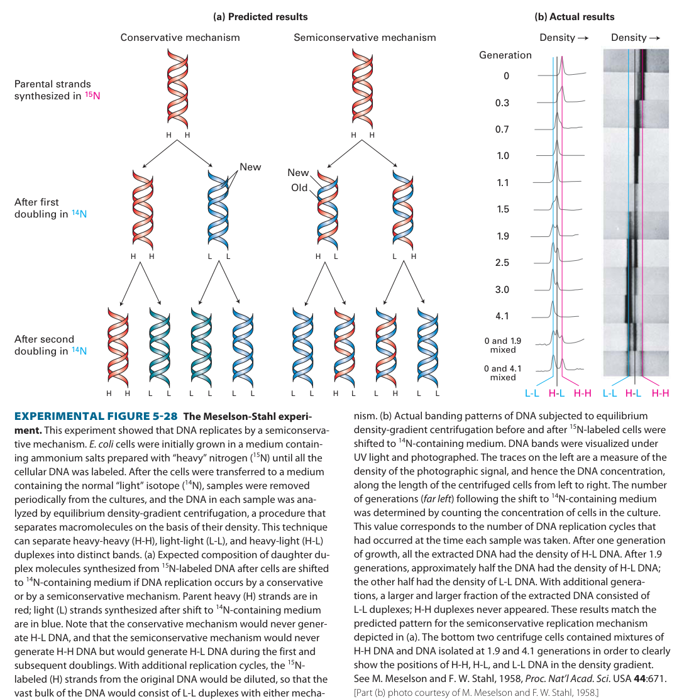
| Conservative mechanism | 全保留机制 |
| Semiconservative mechanism | 半保留机制 |
| New | 新 |
| Old | 旧 |
| Density | 密度 |
| Generation | 世代 |
| N-containing medium. DNA bands were visualized under | 含14N培养基中。DNA条带在紫外光下显影 |
氧与 dNTP 的 α 磷酸之间形成磷酸酯键（见图 5-10a）。如前所述，RNA 聚合酶可以在双链 DNA 上找到合适的转录起始位点，并起始合成与模板 DNA 链互补的 RNA（见图 5-11）。相比之下，DNA 聚合酶不能从头起始链合成；相反，它们需要一条短的、预先存在的 RNA 或 DNA 链（称为引物）来开始链增长。引物与模板链碱基配对后，DNA 聚合酶按照模板链的序列
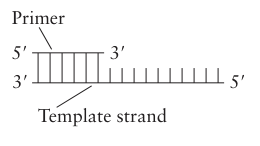
将脱氧核苷酸添加到引物 3′ 端的游离羟基上：
双链 DNA 被解旋，子链在 DNA 复制叉处形成
为了使双链 DNA 在复制过程中作为模板发挥作用，两条相互缠绕的链必须被解旋（或称为熔解），使其碱基暴露出来，以便与聚合成新合成子链的 dNTP 的碱基配对。亲本 DNA 链的这种解旋由称为解旋酶的酶执行。解旋从 DNA 分子中称为复制起点（或简称起点）的区段开始。不同生物体的复制起点的核苷酸序列差异很大，尽管它们通常含有富含 AT 的序列。一旦解旋酶在起点处解旋了亲本 DNA，一种称为引物酶的特化 RNA 聚合酶就会形成一段短的（约 12 个核苷酸）与解旋的模板链互补的 RNA 引物。该引物仍与其互补 DNA 链碱基配对，然后由 DNA 聚合酶 α 再延伸约 25 个核苷酸，形成一个 5′ 端为 RNA、3′ 端为 DNA 的引物。该引物进一步由 DNA 聚合酶 δ 延伸，从而形成新的子链。
所有这些蛋白质汇聚在一起执行子链合成的 DNA 区域称为复制叉。随着复制的进行，复制叉及其相关蛋白质从起点移开。如前所述，双链 DNA 的局部解旋会产生扭转应力，该应力由拓扑异构酶 I 消除。为了使 DNA 聚合酶能够沿着双链 DNA 移动并进行复制，解旋酶必须依次解开双链，拓扑异构酶必须去除所形成的超螺旋。
DNA 复制叉操作中的一个主要复杂因素源于 DNA 的两个特性：亲本 DNA 双链的两条链是反平行的，而 DNA 聚合酶（与 RNA 聚合酶一样）只能沿 5′→3′ 方向将核苷酸添加到生长的子链上。一条子链（称为前导链）的合成可以从单个 RNA 引物开始沿 5′→3′ 方向连续进行，该方向与复制叉的移动方向相同（图 5-29）。问题在于另一条子链（称为滞后链）的合成。
由于滞后链的增长必须沿 5′→3′ 方向进行，其模板链的复制必须以某种方式沿与复制叉移动相反的方向进行。细胞通过在该模板链上每 100 到 200 个核苷酸合成一个新的引物来完成这一壮举，随着解旋暴露出更多的模板链。每个与模板链碱基配对的引物沿 5′→3′ 方向延伸，形成不连续的片段，以其发现者冈崎令治命名为冈崎片段（见图 5-29）。每个冈崎片段的 RNA 引物被去除，并由相邻冈崎片段的 DNA 链增长所取代；最后，一种称为 DNA 连接酶的酶将相邻片段连接起来。
由于后随链的合成必须沿 5′→3′ 方向进行，其模板链的复制必须以某种方式沿与复制叉移动相反的方向进行。细胞通过在模板链上每 100 至 200 个核苷酸合成一个新引物来完成这一壮举，随着链的更多部分因解旋而暴露。这些引物与模板链碱基配对后，沿 5′→3′ 方向延伸，形成不连续片段，以其发现者冈崎令治（Reiji Okazaki）的名字命名为冈崎片段（见图 5-29）。每个冈崎片段的 RNA 引物被邻近冈崎片段延伸的 DNA 链移除并替换；最后，一种称为 DNA 连接酶的酶将相邻片段连接起来。
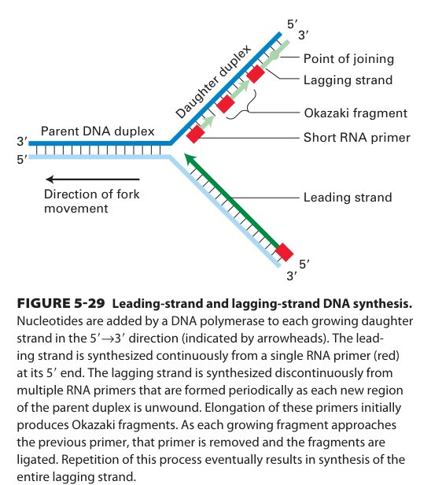
| Parent DNA duplex | 亲代DNA双链 |
| Direction of fork movement | 复制叉移动方向 |
| Leading strand | 前导链 |
| Short RNA primer | 短RNA引物 |
| Okazaki fragment | 冈崎片段 |
| Lagging strand | 后随链 |
| Point of joining | 连接点 |
| Daught er d u ple x | 子代双链 |
对参与 DNA 复制的真核蛋白质的详细了解最初主要来自对小型病毒 DNA 的研究，特别是 SV40 DNA——一种感染猴子的病毒的环状基因组。病毒感染的细胞在短时间内复制大量简单的病毒基因组，这使其成为研究 DNA 复制基本方面的理想模型系统。由于像 SV40 这样的简单病毒在很大程度上依赖其宿主细胞（在这种情况下是猴细胞）的 DNA 复制机器，它们为研究细胞蛋白质对多个相同小 DNA 分子的复制提供了独特的机会。图 5-30 描绘了在复制叉处协调 SV40 DNA 复制的多种蛋白质。在复制叉处组装的蛋白质进一步说明了第 3 章中介绍的分子机器的概念。这些多组分复合物使细胞能够执行一系列有序的事件，以完成基本的细胞功能。
复制 SV40 DNA 的分子机器仅包含一种病毒蛋白；所有其他参与 SV40 DNA 复制的蛋白质均由宿主细胞提供。这种病毒蛋白——大 T 抗原——形成六聚体复制解旋酶，该蛋白质利用 ATP 水解的能量在复制叉处解旋亲本链。前导链和滞后链子链的引物由引物酶和 DNA 聚合酶 α（Pol α）的复合物合成，其中引物酶合成短 RNA 引物（约 12 个核苷酸），
复制 SV40 DNA 的分子机器仅含一种病毒蛋白；所有其他参与 SV40 DNA 复制的蛋白质均由宿主细胞提供。这种病毒蛋白——大 T 抗原，形成六聚体复制解旋酶，一种利用 ATP 水解释放的能量在复制叉处解开亲本链的蛋白质。前导链和后随链子链的引物由引物酶与 DNA 聚合酶 α（Pol α）的复合物合成，引物酶合成短的 RNA 引物（约 12 个核苷酸），
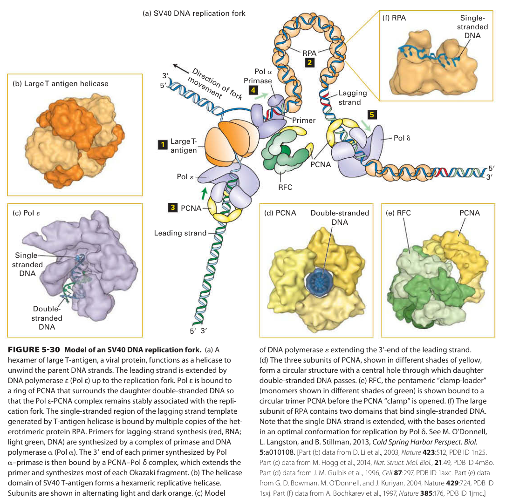
| DNA | DNA |
| Large T- antigen | 大T抗原 |
| Direction of fork movement | 复制叉移动方向 |
| Lagging strand | 后随链 |
| PCNA | PCNA |
| Double-stranded DNA | 双链DNA |
| Single- stranded | 单链 |
| DNA Single- stranded | 单链DNA |
| RPA | RPA |
| Pol | Pol α |
| RFC | RFC |
| Primer | 引物 |
该引物由 DNA 聚合酶 δ（Pol δ）延伸为子链 DNA。由于 Pol δ 具有校对机制（见第 5.6 节），其在复制模板链时出错的可能性低于 Pol α。在细胞 DNA 复制过程中，Pol δ 合成滞后链 DNA，而 DNA 聚合酶 ε（Pol ε）合成前导链的大部分长度。Pol δ 和 Pol ε
引物由 DNA 聚合酶 δ（Pol δ）延伸为子链 DNA，Pol δ 由于具有校对机制（见第 5.6 节），在复制模板链时比 Pol α 更不容易出错。在细胞 DNA 复制过程中，Pol δ 合成后随链 DNA，而 DNA 聚合酶 ε（Pol ε）合成前导链的大部分长度。Pol δ 和 Pol ε
分别与 PCNA（增殖细胞核抗原）形成复合物，PCNA 在引物合成后取代引物酶–Pol α 复合物。如图 5-30d 所示，PCNA 是一种同源三聚体蛋白，有一个中央孔，子链双链 DNA 从中穿过，从而防止 PCNA-Pol δ 和 PCNA-Pol ε 复合物从模板上解离。因此，PCNA 被称为滑动夹，使 Pol δ 和 Pol ε 能够稳定地与单条模板链结合数千个核苷酸。一种称为 RFC（复制因子 C）的五聚体蛋白
图 5-30 中未描绘其他几种在 DNA 复制中起作用的真核蛋白质。例如，拓扑异构酶 I 在复制解旋酶前方（即图 5-30 中大 T 抗原的左侧）与亲本 DNA 结合，以去除亲本链解旋引入的扭转应力（见图 5-8a）。核糖核酸酶 H 和 FEN I 去除冈崎片段 5′ 端的核糖核苷酸；这些核糖核苷酸由 Pol δ 在延伸上游冈崎片段时添加的脱氧核苷酸取代。连续的冈崎片段通过 DNA 连接酶以标准的 5′→3′ 磷酸酯键连接。其他特化的 DNA 聚合酶参与 DNA 中错配和损伤的修复（见第 5.6 节）。
DNA 复制从每个起点双向进行
如图 5-29 和 5-30 所示，在复制叉处通过局部解旋暴露的两条亲本 DNA 链都被复制为子链。理论上，从单个起点的 DNA 复制可以涉及一个沿一个方向移动的复制叉。或者，两个复制叉可能在单个起点处组装，然后沿相反方向移动，导致两条子链的双向生长。几种类型的实验，包括图 5-31 所示的实验，为双向链生长提供了早期证据。
普遍的共识是，所有细菌、古菌和真核细胞都采用双向 DNA 复制机制。在 SV40 DNA 的情况下，复制由两个大 T 抗原六聚体解旋酶与单个 SV40 起点的结合以及其他蛋白质的组装来启动，形成两个复制叉。然后这些复制叉沿相反方向从 SV40 起点移开，前导链和滞后链的合成在两个叉处进行。如图 5-32 所示，左复制叉向左延伸 DNA 合成；同样，右复制叉向右延伸 DNA 合成。
与 SV40 DNA 不同，真核染色体 DNA 分子含有多个复制起点，间隔数十到数百 kb。一种称为 ORC（起点识别复合物）的六亚基蛋白与每个起点结合，并与其他蛋白质结合以加载细胞
普遍共识是，所有细菌、古菌和真核细胞都采用双向 DNA 复制机制。在 SV40 DNA 中，复制由两个大 T 抗原六聚体解旋酶结合到单个 SV40 复制起点并组装其他蛋白质形成两个复制叉而起始。这些复制叉随后从 SV40 起点向相反方向移动，前导链和后随链合成在两个叉处同时进行。如图 5-32 所示，左侧复制叉向左延伸 DNA 合成；类似地，右侧复制叉向右延伸 DNA 合成。
与 SV40 DNA 不同，真核染色体 DNA 分子含有多个复制起点，之间相隔数十到数百 kb。一种称为 ORC（origin recognition complex，起始识别复合物）的六亚基蛋白结合到每个起点，并与加载细胞
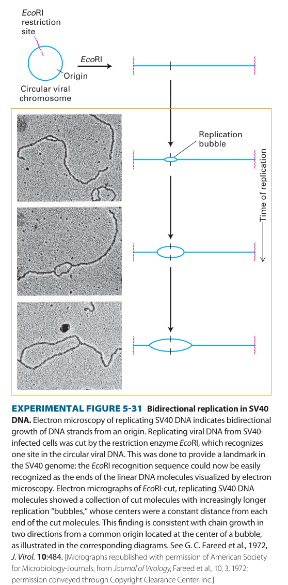
| Replication | 复制 |
| Circular viral chromosome | 环状病毒染色体 |
| Eco Rl | EcoRI |
| Origin | 复制起点 |
| Replication bubble | 复制泡 |
| Time of replication | 复制时间 |
| Eco Rl restriction site | EcoRI限制性位点 |
六聚体解旋酶（由六个同源 MCM 蛋白组成）所需的其他蛋白质结合。两个 MCM 解旋酶以相反方向定向，在起点处分离亲本链，RPA 蛋白结合到生成的单链 DNA 上。细胞 DNA 复制中引物的合成和后续步骤被认为与 SV40 DNA 复制类似（见图 5-31 和 5-32）。
细胞 DNA 的复制以及导致细胞增殖的其他事件必须受到严格调控，以便
有丝分裂和另一种特化的细胞分裂类型——减数分裂（产生单倍体精子和卵细胞）将在第 6 章讨论。我们将在第 19 章讨论决定细胞分裂速率的各种调控机制。
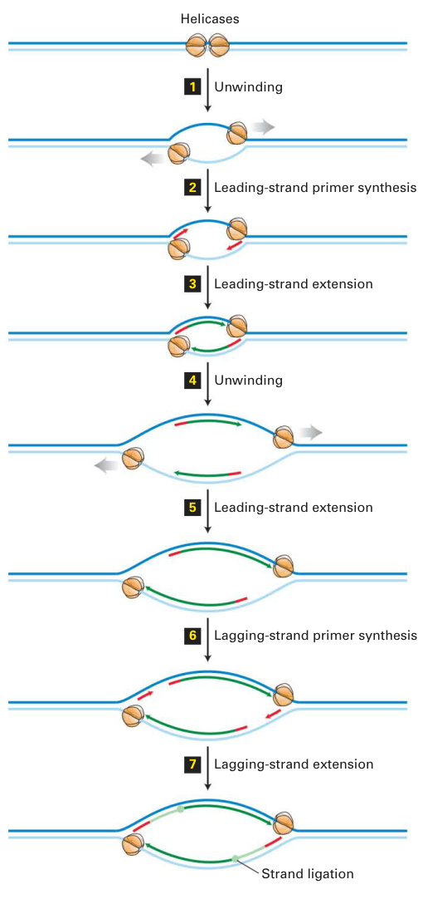
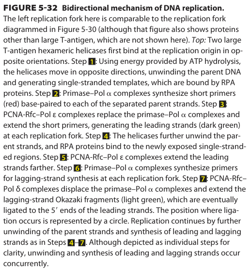
| Unwinding | 解旋 |
| Leading-strand primer synthesis | 前导链引物合成 |
| Leading-strand extension | 前导链延伸 |
| Lagging-strand primer synthesis | 后随链引物合成 |
| Lagging-strand extension | 后随链延伸 |
| Strand ligation | 链连接 |
进入两个子细胞。有丝分裂和另一种称为减数分裂的特殊细胞分裂类型（产生单倍体精子和卵细胞）将在第 6 章中讨论。我们将在第 19 章中讨论决定细胞分裂速率的各种调控机制。
KEY CONCEPTS OF SECTION 5.5
DNA Replication
r DNA 聚合酶与 RNA 聚合酶不同，不能解旋双链 DNA 的链，也不能启动与模板链互补的新链的合成。
r 在复制叉处，一条子链（前导链）连续延伸。另一条子链（滞后链）由每 100 到 200 个核苷酸合成的引物形成的一系列不连续冈崎片段组成（图 5-29）。
r 每个冈崎片段 5′ 端的核糖核苷酸被去除，并由下一个冈崎片段的 3′ 端延伸所取代。
r 在复制叉处，一条子链（前导链）连续延伸。另一条子链（后随链）由一系列不连续的冈崎片段形成，这些片段由每 100 至 200 个核苷酸合成的引物起始（图 5-29）。
r 每个冈崎片段 5′ 端的核糖核苷酸被移除，并由 3′ 端的延伸
r 真核细胞中的大部分 DNA 由 Pol δ 和 Pol ε 合成，它们从 Pol α 接手并继续沿 5′→3′ 方向延伸子链。Pol δ 合成滞后链的大部分长度，而 Pol ε 合成前导链。Pol δ 和 Pol ε 通过与 PCNA（一种环绕子代双链 DNA 的三聚体蛋白，作为滑动夹发挥作用）结合，保持与模板的稳定结合（见图 5-30）。
r DNA 复制通常通过双向机制进行，其中两个复制叉在起点处形成并沿相反方向移动，两条模板链在每个叉处都被复制（见图 5-32）。
r MCM 解旋酶在体内沿染色体 DNA 间隔排列的多个起点处启动真核 DNA 复制。真核 DNA 的合成通过控制这些解旋酶的结合和活性来调控。
r DNA 复制通常通过双向机制进行，两个复制叉在起点形成并向相反方向移动，两条模板链在每个叉处均被复制（见图 5-32）。
DNA 的损伤是不可避免的，且以多种方式产生。DNA 损伤可由 DNA 中化学键的自发断裂、紫外线与电离辐射等环境因素，以及与正常细胞代谢的副产物或环境中存在的基因毒性化学物质的反应引起。DNA 正常序列的改变称为突变，可以在复制过程中 DNA 聚合酶读取受损模板时插入错误核苷酸时发生。突变也会因 DNA 聚合酶在复制未受损模板时引入的复制错误而低频发生。如果这些突变不被纠正，细胞可能积累过多突变以至于无法正常运作。此外，生殖细胞中的 DNA 可能遭受过多突变，以至于无法形成可存活的后代。因此，在所有类型的细胞中防止 DNA 序列错误对其生存至关重要，且已进化出几种修复受损 DNA 和纠正序列错误的细胞机制。其中一种修复双链 DNA 断裂的机制也被真核细胞用于在生殖细胞（如精子和卵子）产生过程中，通过染色体片段的交换，在每条染色体上产生新的母本和父本基因组合，这一过程称为遗传重组。
5.6 DNA修复与重组
DNA 聚合酶会引入复制错误，也会纠正它们
防止突变的第一道防线是 DNA 聚合酶本身。偶尔，当复制型 DNA 聚合酶（Pol δ 和 Pol ε）沿模板 DNA 前进时，一个错误的核苷酸会被添加到子链的生长 3′ 端。例如，大肠杆菌 DNA 聚合酶每聚合 10^4（一万）个核苷酸约引入 1 个错误核苷酸。然而，在细菌细胞中测得的突变率要低得多：每掺入生长链 10^9（十亿）个核苷酸约 1 个错误。这种显著的准确性主要归功于大肠杆菌 DNA 聚合酶的校对功能。真核生物的 Pol δ 和 Pol ε 采用类似的机制。
校对依赖于某些 DNA 聚合酶的 3′→5′ 外切核酸酶活性。当 DNA 合成过程中掺入错误碱基时，新生链的 3′ 核苷酸与模板链之间不会发生碱基配对。结果，聚合酶暂停，然后将生长链的 3′ 端转移到其外切核酸酶位点，在那里错误配对的碱基被去除（图 5-33）。然后 3′ 端被转移回聚合酶位点，该区域被正确复制。所有三种大肠杆菌 DNA 聚合酶都具有校对活性，用于动物细胞中大多数染色体 DNA 复制的两种真核 DNA 聚合酶 δ 和 ε 也是如此。校对似乎对所有细胞避免过多突变是不可或缺的。
DNA 的化学和辐射损伤可导致突变
DNA 持续受到大量损伤性化学反应的影响；据估计，单个人类细胞中每天发生 10^4 到 10^6 次 DNA 损伤事件！即使 DNA 不暴露于损伤性化学物质，DNA 结构的某些方面本身就不稳定。例如，连接嘌呤碱基与脱氧核糖的键在生理条件下容易以低速率发生水解，留下没有连接碱基的糖。因此编码信息丢失，这种丢失可导致 DNA 复制过程中的突变。正常细胞反应，包括线粒体中电子沿电子传递链的移动
DNA 的化学和辐射损伤可导致突变
DNA 持续遭受大量破坏性化学反应；据估计，单个人类细胞中 DNA 损伤事件的数量每天高达 10^4 到 10^6 次！即使 DNA 不暴露于破坏性化学物质，DNA 结构的某些方面本身就不稳定。例如，连接嘌呤碱基与脱氧核糖的键在生理条件下容易以低速率发生水解，留下没有连接碱基的糖。因此编码信息丢失，这种丢失可能在 DNA 复制过程中导致突变。正常的细胞反应，包括电子沿电子传递链的移动
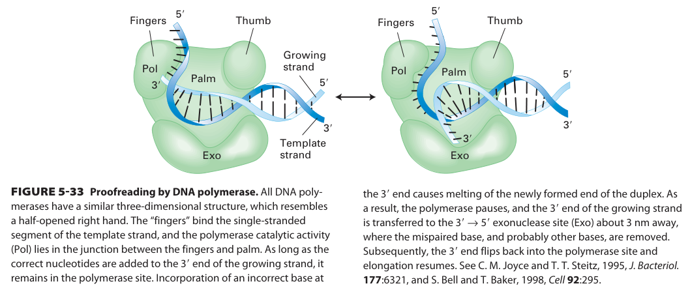
| Fingers | 手指结构域 |
| Thumb | 拇指结构域 |
| Template strand | 模板链 |
| Growing strand | 新生链 |
| Exo | 外切结构域 |
| Palm | 手掌结构域 |
| Pol | Pol |
链在线粒体中的移动以及过氧化物酶体中的脂质氧化（见第 12 章），会产生多种与 DNA 反应并损伤 DNA 的化学物质，包括羟基自由基和超氧阴离子（O2
–）。这些化学物质也可导致突变，包括导致癌症的突变。
许多自发突变是点突变，即涉及DNA序列中单个碱基对的变化。点突变可以引入终止密码子，导致如前所述的无义突变，或引起编码蛋白氨基酸序列的改变，称为错义突变。沉默突变不改变氨基酸序列（例如，GAG变为GAA；两者都编码谷氨酰胺）。点突变也可以发生在非蛋白质编码DNA序列中，这些序列在基因转录调控中起作用，如第9章所述。点突变最常见的原因之一是
胞嘧啶（C）碱基的脱氨基作用，将其转化为尿嘧啶（U）碱基。另一个原因是常见修饰碱基5-甲基胞嘧啶的脱氨基作用，脱氨基时形成胸腺嘧啶。如果这些改变在DNA复制前未被纠正，细胞将以含U或T的链为模板，形成U·A或T·A碱基对，从而在DNA序列中产生永久性改变（图5-34）。
高保真DNA切除修复系统识别并修复损伤
除了校对功能外，细胞还有其他系统来防止因复制错误以及暴露于化学物质和辐射而引起的突变。几种DNA切除修复
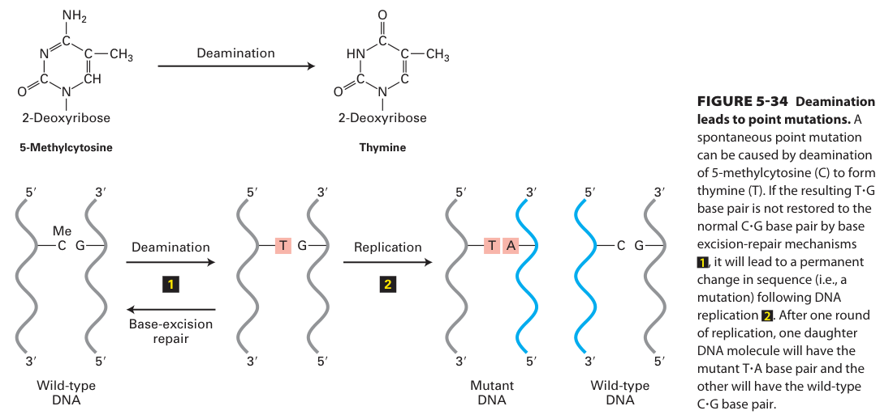
| 2-Deoxyribose | 2-脱氧核糖 |
| 5-Methylcytosine | 5-甲基胞嘧啶 |
| Thymine | 胸腺嘧啶 |
| Deamination | 脱氨基 |
| Replication | 复制 |
| Base-excision repair | 碱基切除修复 |
| Wild-type DNA | 野生型DNA |
| Mutant DNA | 突变型DNA |
| DNA molecule will have the mutant T | DNA分子将具有突变型T |
| G base pair | G碱基对 |
如前所述，这种修复必须在 DNA 复制之前进行，因为该配对中的错误碱基 T 在正常 DNA 中天然存在。因此，它能够在复制过程中进行正常的 Watson-Crick 碱基配对，产生不再被修复机制识别的稳定点突变（见图 5-34，步骤 2）。
人类细胞含有一整套糖基化酶，每种酶对一组不同的化学修饰 DNA 碱基具有特异性。例如，一种糖基化酶去除 8-氧鸟嘌呤（一种氧化形式的鸟嘌呤），使其被未受损的 G 替换，其他糖基化酶去除被烷化剂修饰的碱基。产生的无碱基核苷酸随后由上述修复机制替换。类似的机制在修复脱嘌呤引起的损伤中起作用，脱嘌呤是指由于脱氧核糖与碱基之间的糖苷键水解导致 DNA 失去鸟嘌呤或腺嘌呤碱基。脱嘌呤自发发生，在哺乳动物和鸟类中由于其温暖的体温而相当常见。由此产生的无碱基位点如果未被修复，会在 DNA 复制过程中产生突变，因为它们无法指定合适的配对碱基。
碱基切除修复修复T-G错配和受损碱基
在人类中，最常见的点突变类型是C变为T，这是由5-甲基C的脱氨基作用引起的（见图5-34）。在这种情况下，碱基切除修复面临的概念性问题是确定哪条是正常的DNA链，哪条是突变的DNA链。但由于G·T错配几乎总是由C化学转化为U或5-甲基C转化为T引起的，修复系统进化出切除T并用C替代的功能。
G·T错配被一种DNA糖基化酶识别，该酶将胸腺嘧啶碱基翻出螺旋，然后水解连接碱基与糖-磷酸DNA骨架的键。在此初始切口之后，核酸内切酶APE1在无碱基位点附近切割DNA链。缺少碱基的脱氧核糖磷酸随后被一种特化的DNA聚合酶切除，并用C替换，该酶读取模板链中的G（图5-35）。
如前所述，这种修复必须在DNA复制之前进行，因为该碱基对中不正确的碱基T在正常DNA中天然存在。因此，它能够在复制过程中进行正常的Watson-Crick碱基配对，产生稳定的点突变，该突变将不再被修复机制识别（见图5-34，步骤2）。
人类细胞含有一系列糖基化酶，每种酶对一组不同的化学修饰DNA碱基具有特异性。例如，一种糖基化酶切除8-氧代鸟嘌呤（鸟嘌呤的氧化形式），使其被未受损的G替换，其他糖基化酶切除被烷化剂修饰的碱基。产生的无碱基核苷酸随后由上述修复机制替换。类似的机制也用于修复脱嘌呤引起的损伤，脱嘌呤是指由于脱氧核糖与碱基之间的糖苷键水解而导致DNA丢失鸟嘌呤或腺嘌呤碱基。脱嘌呤自发发生，且由于哺乳动物和鸟类体温较高，相当常见。由此产生的无碱基位点若不修复，在DNA复制过程中会产生突变，因为它们无法指定正确的配对碱基。
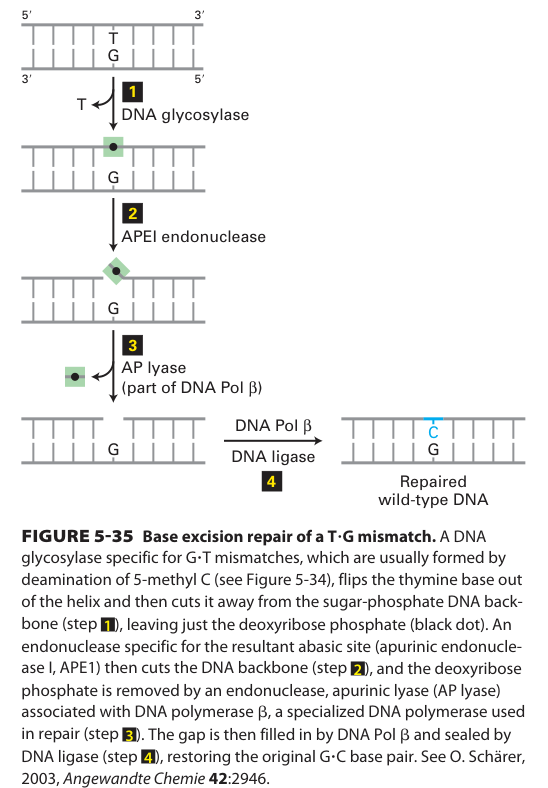
| DNA ligase | DNA连接酶 |
| DNA glycosylase | DNA糖基化酶 |
| APEI endonuclease | APE1内切酶 |
| Repaired wild-type DNA | 修复后的野生型DNA |
| AP lyase | AP裂合酶 |
| DNA Pol | DNA Pol |
| β DNA ligase | β DNA连接酶 |
错配切除修复修复其他错配以及小插入和缺失
另一种过程从细菌到人类都保守，主要负责消除DNA聚合酶在复制过程中意外引入的碱基对错配以及一个或几个核苷酸的插入或缺失。与T-G错配中T的碱基切除修复一样，错配切除修复面临的概念性问题是确定哪条是正常的DNA链，哪条是突变的DNA链。这在人类细胞中是如何发生的尚未确定。据认为，与错配DNA片段结合的蛋白质能够区分模板链和子链；然后子链中含有复制错误的错配片段被切除并修复，以产生模板链的精确互补序列（图5-36）。与碱基切除修复相反，错配切除修复发生在DNA复制之后。
对一种称为遗传性非息肉病性结直肠癌的结肠癌的易感性，源于MLH1或MSH2基因一个拷贝的遗传性功能丧失突变。MSH2和MLH1蛋白
对DNA错配修复至关重要（见图5-36）。每个基因至少有一个功能性拷贝的细胞表现出正常的错配修复。然而，肿瘤细胞通常由在第二个拷贝中发生随机突变的单个细胞产生；当两个拷贝
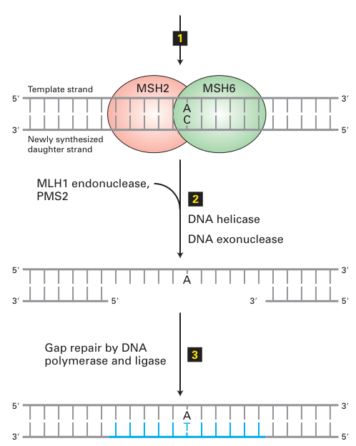
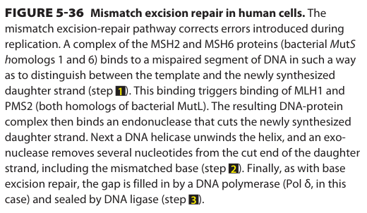
| Template strand | 模板链 |
| MLH1 endonuclease, PMS2 | MLH1内切酶, PMS2 |
| DNA helicase | DNA解旋酶 |
| DNA exonuclease | DNA外切酶 |
| Newly synthesized daughter strand | 新合成的子链 |
| Gap repair by DNA polymerase and ligase | DNA聚合酶与连接酶缺口修复 |
都失去功能时，错配修复系统就丧失了。这些基因的失活突变在非遗传性结肠癌中也很常见。■
核苷酸切除修复修复扭曲正常DNA形状的化学加合物
细胞利用核苷酸切除修复来修复含有化学修饰碱基的DNA区域，这些碱基通常称为化学加合物，它们会局部扭曲DNA的正常形状。这种修复的关键在于某些蛋白质能够沿双链DNA分子表面滑动，寻找双螺旋形状中的凸起或其他不规则之处。例如，该机制修复胸腺嘧啶-胸腺嘧啶二聚体，这是由紫外线引起的一种常见化学加合物（图5-37）；这些二聚体干扰DNA的复制和转录。图5-38
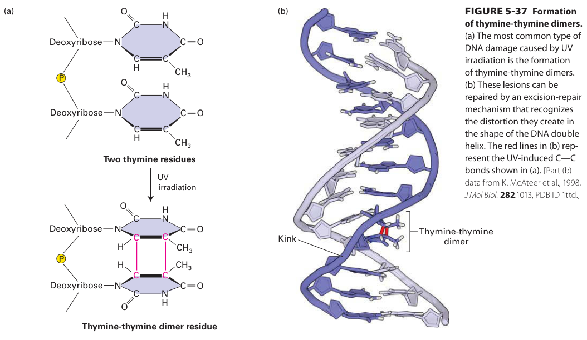
| Deoxyribose | 脱氧核糖 |
| Two thymine residues | 两个胸腺嘧啶残基 |
| Thymine-thymine dimer residue | 胸腺嘧啶二聚体残基 |
| UV irradiation | 紫外线照射 |
| Thymine-thymine dimer | 胸腺嘧啶二聚体 |
| Kink | 扭结 |
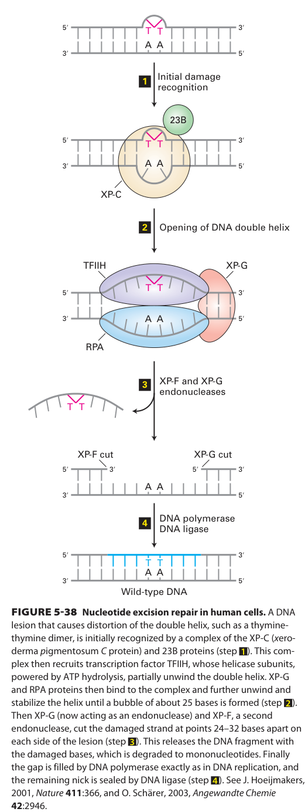
| Initial damage recognition | 初始损伤识别 |
| Opening of DNA double helix | DNA双螺旋打开 |
| DNA polymerase | DNA聚合酶 |
| DNA ligase | DNA连接酶 |
| Wild-type DNA | 野生型DNA |
| XP-F and XP-G endonucleases | XP-F和XP-G内切酶 |
| RPA | RPA |
| XP-G XP-F cut | XP-G和XP-F切割 |
| XP-G cut | XP-G切割 |
电离辐射（例如 X 射线和 γ 辐射）和某些抗癌药物会引起 DNA 中的双链断裂。这些损伤特别严重，因为 DNA 双链的错误重新连接可导致严重影响基因功能的染色体大规模重排。例如，错误的连接可能产生一个"杂合"基因，编码一个氨基酸序列的 N 端部分与完全不同氨基酸序列的 C 端部分融合；
约有30种蛋白质参与核苷酸切除修复过程，其中最早被鉴定的是通过研究来自着色性干皮病患者培养细胞中DNA修复缺陷而发现的，着色性干皮病是一种与癌症易感性相关的遗传性疾病。患有此病的个体如果皮肤暴露于阳光中的紫外线，常会发展出称为黑色素瘤和鳞状细胞癌的皮肤癌。受影响患者的细胞缺乏功能性核苷酸切除修复系统。至少七个不同基因中的任何一个发生突变，称为XP-A至XP-G，都会导致该修复系统失活并引起着色性干皮病；所有这些突变都产生相同的表型并具有相同的后果。这些XP蛋白在核苷酸切除修复中的大多数功能现在已清楚了解（见图5-38）。■
值得注意的是，TFIIH的五个多肽亚基——一种所有基因转录所必需的通用转录因子（见图9-19）——也是真核细胞核苷酸切除修复所必需的。其中两个亚基与解旋酶具有同源性，如图5-38所示。在转录过程中，TFIIH的解旋酶活性有助于在起始位点解开DNA螺旋，使RNA聚合酶能够启动该过程（见图9-19）。看来自然界在两种不同的需要解旋酶活性的细胞过程中使用了相似的蛋白质组装体。
转录和DNA修复中共用亚基的现象可能有助于解释以下观察结果：高等真核生物中，正在活跃转录的基因组区域的DNA损伤修复速率远快于非转录区域——这一现象称为转录偶联修复。由于在任何单个细胞中只有一小部分基因组被转录，转录偶联修复能将修复努力高效地引导至最关键的区域。在该系统中，如果RNA聚合酶在DNA上的损伤处（例如，胸腺嘧啶-胸腺嘧啶二聚体）停滞，一个由CSA和CSB蛋白组成的复合物被招募到RNA聚合酶处，在那里它们触发DNA螺旋的打开、TFIIH的招募，以及图5-38中描绘的步骤2到步骤4的反应。CSA和CSB是以一种罕见的遗传性发育障碍——Cockayne综合征命名的，该综合征是由这些蛋白的突变引起的。
或者染色体重排可能将一个基因的启动子带到另一个基因的编码区附近，改变该基因表达的水平或细胞类型。
已进化出两种系统来修复双链断裂：同源重组（下文讨论）和非同源末端连接（NHEJ），后者是易错的，因为在修复点总是会丢失几个核苷酸。
氨基酸序列；或者染色体重排可能将一个基因的启动子带到另一个基因编码区附近，从而改变该基因的表达水平或表达细胞类型。
有两套系统进化出来修复双链断裂：同源重组（下文讨论）和非同源末端连接（NHEJ），后者容易出错，因为在修复点处不可避免地会丢失几个核苷酸。
非同源末端连接的易错修复 修复双链断裂的主要机制
在多细胞生物中，涉及两个DNA分子的非同源末端重新连接。即使连接的DNA片段来自同一染色体，修复过程也会在连接点处丢失几个碱基对（图5-39）。这种可能具有致突变性的缺失的形成，是DNA损伤修复如何引入突变的一个例子。
由于DNA在粘稠的核质中扩散相当缓慢，断裂染色体的正确末端通常会在它们扩散得太远而无法进行非同源
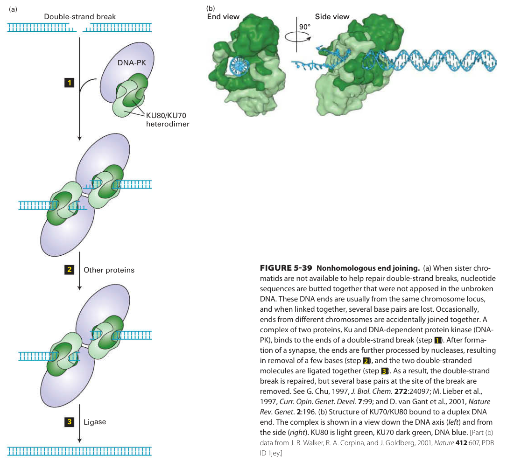
| End view | 端视图 |
| Side view | 侧视图 |
| 90° Double-strand break | 90° 双链断裂 |
| DNA-PK KU80/KU70 heterodimer | DNA-PK KU80/KU70异二聚体 |
| Other proteins | 其他蛋白质 |
| Ligase 1 | DNA连接酶1 |
复制叉坍塌的修复 重组 DNA 修复的一个例子是"坍塌"复制叉的修复。如果一条 DNA 链的磷酸二酯骨架中的一个断裂（称为"切口"）在复制叉通过之前未被修复，当复制解旋酶到达亲本链中的切口时，子染色体的已复制部分就会分离，因为切口两侧亲本链的两个片段之间没有共价键。此过程称为复制叉坍塌（图 5-40，步骤 1）。如果双链子代 DNA 分子中的断裂未被修复，由于断裂与染色体末端之间遗传信息的丢失，通常对细胞分裂后的至少一个子细胞是致死的。修复由此产生的双链断裂并再生复制叉的重组过程涉及多种酶和其他蛋白质，此处仅提及其中一些。
修复双链断裂的第一步是用外切核酸酶消化在 DNA 断裂端具有 5′ 端的链，使在断裂处具有 3′ 端的链成为单链（图 5-40，步骤 2）。与未断裂亲本链（深蓝色）碱基配对的滞后新生链（粉色）被连接到亲本染色体未复制部分（浅蓝色），如图 5-40 步骤 2 所示。下一步所需的蛋白质在细菌中是 RecA，在酿酒酵母和其他真核生物中是同源的 Rad51。多个 RecA/Rad51 分子与单链 DNA 结合，并催化其与另一个同源双链 DNA 分子中完全或几乎完全互补序列的杂交。该靶标双链 DNA 的互补链（深蓝色）在杂交区域被置换为单链 DNA 环（图 5-40，步骤 3）。这种由 RecA/Rad51 催化的双链 DNA 被其中一条链的单链互补序列入侵的过程是重组过程的关键。此过程称为链入侵，由于碱基对数量没有变化，因此不需要能量输入。
接下来，靶标 DNA 与入侵链之间的杂合区域由利用 ATP 水解能量的蛋白质沿远离断裂的方向延伸。此过程称为分支迁移（图 5-40，步骤 4），因为靶标 DNA 链从一条互补链（深蓝色）交叉到断裂 DNA 分子中的互补链（深红色）的位置——即步骤 3 之后的粉色对角线——在 DNA 结构中被称为分支。在此图中，对角线仅代表一个磷酸二酯键。分子建模和其他研究表明，分支两侧的第一个碱基与互补核苷酸碱基配对。随着该分支向左迁移，碱基对的数量保持
各种无法通过前面讨论的机制修复的DNA损伤，可以通过一种机制修复，其中受损DNA序列从二倍体生物中同源染色体上的相同序列或高度同源序列的未受损拷贝，或从单倍体和二倍体生物中DNA复制后的姐妹染色体上拷贝而来。这些机制涉及不同DNA分子之间的链交换，因此被称为重组。
除了提供DNA修复机制外，类似的重组机制通过减数分裂过程中在母源和父源同源染色体对之间引起大片段染色体区域的交换，在物种个体之间产生遗传多样性；减数分裂是产生生殖细胞（精子和卵子）的特殊细胞分裂类型（见图6-3）。事实上，同源染色体区域的交换（称为交叉）是第一次减数分裂中染色体正确分离所必需的。减数分裂以及通过重组产生母源和父源基因新组合的后果将在第6章进一步讨论，而减数分裂中染色体正确分离的机制
将在第19章讨论。这里我们聚焦于DNA重组的分子机制，重点介绍两个重组DNA分子之间的DNA链交换。
修复崩溃的复制叉 重组DNA修复的一个例子是修复"崩溃的"复制叉。如果一条DNA链磷酸二酯骨架中的断裂（称为"切口"）在复制叉通过之前未被修复，那么当复制解旋酶到达母链中的切口时，子染色体已复制的部分就会分离，因为切口两侧母链的两个片段之间没有共价键。这个过程称为复制叉崩溃（图5-40，步骤1）。如果双链子DNA分子中的断裂未被修复，由于断裂点和染色体末端之间遗传信息的丢失，在细胞分裂后通常对至少一个子细胞是致死的。修复由此产生的双链断裂并再生复制叉的重组过程涉及多种酶和其他蛋白质，这里仅提及其中一部分。
修复双链断裂的第一步是对断裂DNA末端带有5′端的链进行外切核酸酶消化，使断裂处带有3′端的链保持单链状态（图5-40，步骤2）。如图5-40步骤2所示，与未断裂母链（深蓝色）碱基配对的后随链新生链（粉色）被连接到母染色体未复制部分（浅蓝色）上。下一步所需的一种蛋白质是细菌中的RecA，或酿酒酵母及其他真核生物中同源的Rad51。多个RecA/Rad51分子结合到单链DNA上，催化其与另一条同源双链DNA分子中完全或近乎完全互补的序列杂交。该靶标双链DNA的互补链（深蓝色）在杂交区域被置换为单链DNA环，与入侵链配对（图5-40，步骤3）。这种由RecA/Rad51催化的、一条单链（与其中一条链互补）入侵双链DNA的过程是重组过程的关键。该过程称为链入侵，由于碱基对数量没有变化，因此不需要能量输入。
接下来，靶标DNA与入侵链之间的杂交区域利用ATP水解能量的蛋白质向远离断裂的方向延伸。这一过程称为分支迁移（图5-40，步骤4），因为靶标DNA链从一条互补链（深蓝色）交叉到断裂DNA分子中其互补链（深红色）的位置——即步骤3后的粉色对角线——在DNA结构中被称为分支。在该示意图中，对角线仅代表一个磷酸二酯键。分子建模和其他研究表明，分支两侧的第一个碱基都与互补核苷酸碱基配对。随着该分支向左迁移，碱基对数量保持
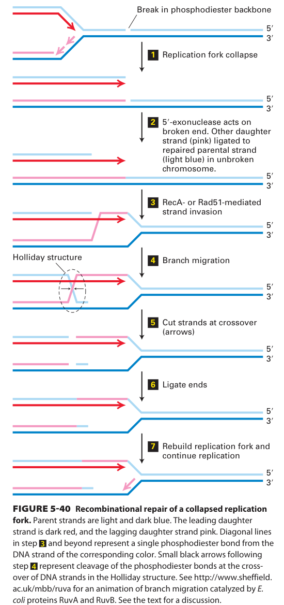
| Branch migration | 分支迁移 |
| Holliday structure | Holliday结构 |
| Break in phosphodiester backbone | 磷酸二酯骨架断裂 |
| Replication fork collapse | 复制叉崩溃 |
| Cut strands at crossover | 在交叉处切割DNA链 |
| Rebuild replication fork and continue replication | 重建复制叉并继续复制 |
| RecA- or Rad51-mediated strand invasion | RecA或Rad51介导的链入侵 |
不变；与（红色）入侵链形成的一个新碱基对，对应着与母链（蓝色）失去一个碱基对。
当杂交区域延伸到在步骤2中已被5′外切核酸酶消化的断裂链的5′端（浅蓝色）之外时，产生的单链母链DNA（浅蓝色）与互补的
互补碱基对。在此过程中，两个亲本之间的序列差异会丢失，这一过程称为基因转换。
图 5-42 图解了在 Holliday 结构中四链交叉连接处切割一对或另一对链如何产生亲本分子或重组分子。这一过程称为 Holliday 结构的拆分，将最初由 RecA/Rad51 催化的链入侵连接的 DNA 分子分开。图 5-41 步骤 5 之后中间体中的每个 Holliday 结构都可以按图 5-42 中两组小黑箭头所示的两种可能方式（步骤 1 或步骤 2）进行切割和重新连接。
接下来，新的3′端被连接到外切核酸酶消化的5′端（步骤5）。这在配对分子中产生了两个Holliday结构（步骤5）。这些Holliday结构的分支迁移可以发生在任一方向（未图示）。最后，在箭头所示位置切割链，并将每个切割后的Holliday结构处的替代5′和3′端连接，产生两条重组染色体，它们在初始断裂点的一侧含有一条亲本DNA分子的DNA（粉色和红色链），在断裂点的另一侧含有另一条亲本DNA分子的DNA（浅蓝色和深蓝色）（步骤6）。初始断裂点紧邻区域形成异源双链，其中来自一个亲本的一条链与另一亲本的互补链碱基配对（粉色或红色链与浅蓝色或深蓝色链碱基配对）。两条亲本链之间的碱基对错配通常由上述修复机制修复，以产生
| Ends digested by 5'-exonucleases, leaving | 末端被5'外切核酸酶消化，留下 |
| Ends are ligated | 末端连接 |
一个互补的碱基对。在此过程中，两个亲本之间的序列差异丢失了，这一过程称为基因转换。
图5-42示意了Holliday结构中四链交叉处如何通过切割其中一对或另一对链来产生亲本分子或重组分子。这一过程称为Holliday结构的拆分，它能分离最初由RecA/Rad51催化的链入侵所连接的DNA分子。图5-41步骤5之后中间体中的每个Holliday结构都可以被切割
并按图5-42中两组小黑箭头所示的两种可能方式（步骤1或步骤2）重新连接。因此，图5-41所示的重组过程有四种可能的产物。在切割末端连接后，其中两种产物再生出亲本染色体[除了断裂点处的异源双链区域被修复为其中一个亲本的序列（基因转换）]。另外两种可能产物产生如图5-41所示的重组染色体。
KEY CONCEPTS OF SECTION 5.6
DNA修复与重组
病毒是专性的细胞内寄生生物。它们不能独立繁殖，必须征用宿主细胞的机器来合成病毒蛋白，并在某些情况下复制病毒基因组。RNA 病毒通常在宿主细胞质中复制，具有 RNA 基因组；而 DNA 病毒通常在宿主细胞核中复制，具有 DNA 基因组（见图 5-1）。病毒基因组可以是单链或双链的，具体取决于病毒的具体类型。完整的感染性病毒颗粒称为病毒颗粒（virion），由核酸和蛋白质外壳组成，该外壳既能保护病毒核酸，又在宿主细胞感染过程中发挥作用。最简单的病毒只含有足以编码四种蛋白质的 RNA 或 DNA；最复杂的病毒可编码约两百种蛋白质。除了作为疾病病因的显而易见的重要性之外，病毒还作为研究基本生物学过程（如本章所讨论的那些过程）的极其实用的研究工具。
r DNA复制过程中发生的许多复制错误由DNA聚合酶的校对功能纠正，该功能能识别生长链3′端的不正确（错配）碱基，然后通过其固有的3′→5′外切核酸酶活性将其切除（见图5-33）。
大多数病毒的宿主范围很窄
病毒颗粒表面含有一种蛋白质的多个拷贝，该蛋白质能特异性地结合宿主细胞表面受体蛋白的多个拷贝。这种相互作用决定了宿主范围——即病毒能够感染的细胞类型群体——并启动了感染过程。大多数病毒的宿主范围相当有限。
仅感染细菌的病毒称为噬菌体（bacteriophage），或简称 phage。感染动物或植物细胞的病毒通常分别称为动物病毒或植物病毒。少数病毒既能在植物或动物体内生长，也能在取食这些宿主的昆虫体内生长。高度移动的昆虫作为媒介，将此类病毒在易感动物或植物宿主之间传播。广泛的宿主范围也是一些严格动物病毒的特征，例如水疱性口炎病毒（vesicular stomatitis
r 核苷酸切除修复途径的遗传性缺陷，如着色性干皮病患者，使他们易患皮肤癌。遗传性结肠癌常与错配修复途径必需蛋白的突变形式相关。同源重组修复缺陷与BRCA-1或BRCA-2基因一个突变等位基因的遗传相关，导致易患乳腺癌和子宫癌。
5.7 病毒：细胞遗传系统的寄生体
virus），它能在昆虫媒介和多种不同类型的哺乳动物体内生长。然而，大多数动物病毒不会跨越门（phyla）传播，有些病毒（如脊髓灰质炎病毒）仅感染密切相关的物种，如灵长类动物。某些动物病毒的宿主细胞范围进一步局限于有限数量的细胞类型，因为只有这些细胞才具有病毒颗粒能够附着的表面受体。一个例子是脊髓灰质炎病毒，它仅感染肠道中的细胞，以及不幸的是对其宿主而言，感染脊髓中的运动神经元，导致瘫痪。另一个例子是 HIV-1（下文将进一步讨论），它感染称为 CD4+ T 淋巴细胞的细胞（这些细胞对免疫应答至关重要，见第 23 章），以及中枢神经系统的某些神经元和其他称为胶质细胞的细胞。
病毒衣壳是由一种或少数几种蛋白质组成的规则阵列
病毒颗粒的核酸被包裹在蛋白质外壳（即衣壳）中，衣壳由一种蛋白质或少数几种不同蛋白质的多个拷贝组成，每种蛋白质均由单个病毒基因编码。由于这种结构，病毒能够用少量基因编码构建相对较大的衣壳所需的所有信息。这种对遗传信息的高效利用非常重要，因为只有有限数量的 DNA 或 RNA，因而只有有限数量的基因，能够装入病毒颗粒衣壳中。
自然界找到了两种基本方式，将多个衣壳蛋白亚基和病毒基因组排列成病毒颗粒。在某些病毒中，一种衣壳蛋白的多个拷贝形成螺旋结构，包裹并保护病毒的 RNA 或 DNA，后者沿着蛋白质管内的螺旋沟槽延伸。具有这种螺旋结构的病毒（如烟草花叶病毒）呈杆状（图 5-43a）。另一种主要的结构类型基于二十面体，这是一种由 20 个相同面组成的近似球形的实体，每个面都是一个等边三角形（图 5-43b）。在感染过程中，一些二十面体病毒通过衣壳亚基之间的裂隙与宿主细胞受体相互作用。其他病毒则通过从二十面体顶点延伸出的长纤维状蛋白质进行相互作用。
样品中感染性病毒颗粒的数量可以通过噬斑测定来定量。该测定通过将稀释的病毒颗粒样品培养在覆盖有宿主细胞的平板上，然后计数形成的局部病变（称为噬斑）的数量来进行（图 5-44）。每当单个病毒颗粒最初感染单个细胞时，就会在平板上形成一个噬斑。病毒在这个初始宿主细胞中复制，然后裂解（破裂）该细胞，释放出许多子代病毒颗粒，感染平板上的邻近细胞。经过几次这样的感染周期后，足够多的细胞被裂解，在剩余未感染细胞层中产生一个可见的清晰区域，即噬斑。由于一个噬斑中的所有子代病毒颗粒都源自单个亲代病毒，它们构成了一个病毒克隆。
这种噬斑测定法在细菌和动物病毒中的使用是标准操作。植物病毒可以通过类似的方法进行测定，即计数接种了病毒的植物叶片上的局部病变。通过噬斑测定分离的病毒突变体的分析，对我们目前理解分子细胞过程做出了广泛贡献。
裂解性病毒生长周期导致宿主细胞死亡
尽管不同类型病毒之间的细节各不相同，但表现出裂解性生长周期的病毒都经历以下一般阶段：
1. 吸附（Adsorption）——病毒颗粒通过衣壳蛋白的多个拷贝与细胞表面特异性受体的结合，与宿主细胞相互作用。
2. 穿入（Penetration）——病毒基因组穿过宿主质膜。对于某些病毒，包装在衣壳内的病毒蛋白也进入宿主细胞。
3. 复制（Replication）——病毒 mRNA 借助宿主细胞转录机器（DNA 病毒）或由病毒酶（RNA 病毒）产生。对于两类病毒，病毒 mRNA 均由宿主细胞翻译机器进行翻译。病毒基因组多拷贝的产生由病毒蛋白单独完成，或在宿主细胞蛋白的帮助下完成。
4. 装配（Assembly）——病毒蛋白和已复制的基因组结合形成子代病毒颗粒。
5. 释放（Release）——宿主细胞要么突然破裂（裂解），一次性释放所有新形成的病毒颗粒，要么逐渐解体，缓慢释放病毒颗粒。两种释放方式都导致受感染细胞的死亡。
图 5-45 展示了 T4 噬菌体（一种感染大肠杆菌的无包膜 DNA 病毒）的裂解周期。病毒衣壳蛋白通常大量合成，因为每个子代病毒颗粒的装配都需要它们的许多拷贝。在每个受感染的大肠杆菌细胞中，约产生 100-200 个 T4 子代病毒颗粒并通过裂解释放。
尽管不同类型的病毒在细节上有所不同，但表现出裂解性生长周期的病毒经历以下一般阶段：
1. 吸附——病毒粒子通过与细胞表面特异性受体的多个衣壳蛋白拷贝结合而与宿主细胞相互作用。
2. 穿透——病毒基因组穿过宿主质膜。对于某些病毒，包装在衣壳内的病毒蛋白也进入宿主细胞。
3. 复制——病毒mRNA借助宿主细胞转录机器（DNA病毒）或由病毒酶（RNA病毒）产生。对两类病毒而言，病毒mRNA均由宿主细胞翻译机器翻译。病毒基因组多个拷贝的产生由病毒蛋白单独完成，或在宿主细胞蛋白的帮助下完成。
4. 组装——病毒蛋白与复制的基因组结合形成子代病毒粒子。
5. 释放——宿主细胞要么突然破裂（裂解），一次性释放所有新形成的病毒粒子，要么逐渐解体，缓慢释放病毒粒子。两种释放方式都导致受感染细胞死亡。
图5-45展示了T4噬菌体（一种感染大肠杆菌的无包膜DNA病毒）的裂解周期。病毒衣壳蛋白通常大量合成，因为每个子代病毒粒子的组装需要许多拷贝。在每个受感染的大肠杆菌细胞中，约产生100-200个T4子代病毒粒子并通过裂解释放。
对于感染真核细胞的DNA病毒，裂解周期稍复杂一些。在大多数此类病毒中，DNA基因组（连同一些相关蛋白）被转运到细胞核中。一旦进入细胞核，病毒DNA由宿主的转录机器转录为RNA。病毒RNA初级转录本经宿主细胞酶加工产生病毒mRNA，后者被转运到细胞质，并由宿主细胞的核糖体、tRNA和翻译因子翻译为病毒蛋白。病毒蛋白随后被转运回细胞核，在那里其中一些蛋白直接复制病毒DNA，或指导细胞蛋白复制病毒DNA，如前面讨论的SV40的情况。衣壳蛋白
| Avian influenza virus | 禽流感病毒 |
与新复制的病毒DNA在细胞核中结合，产生数千到数十万个子代病毒粒子。由于哺乳动物细胞比细菌细胞大约一千倍，每个细胞产生的病毒粒子数量也大约多一千倍。然而，由于必须合成更多蛋白质并复制更多病毒基因组来组装如此大量的病毒粒子，对动物病毒而言，一个感染周期所需的时间比同等复杂度的噬菌体长得多。T4噬菌体在大肠杆菌细胞中复制并裂解约需20分钟，而脊髓灰质炎病毒复制并裂解宿主细胞约需8小时。许多动物病毒比脊髓灰质炎病毒慢得多，需要
| Plaque | 噬菌斑 |
感染细胞裂解并释放子代病毒粒子需要2天或更长时间。
大多数具有RNA基因组的植物和动物病毒在裂解性复制中不需要核功能。在其中一些病毒中，一种在侵入期间进入宿主细胞的病毒编码酶将病毒基因组RNA转录为细胞质中的mRNA。该mRNA随后由宿主细胞的翻译机器直接翻译成病毒蛋白。这些蛋白中的一种或多种随后产生病毒RNA基因组的额外拷贝。最后，子代基因组与新合成的衣壳蛋白结合，在细胞质中形成子代病毒粒子。
在新病毒粒子合成完成数百至数十万个后（取决于病毒和宿主细胞的类型），大多数被感染的细菌细胞和一些
| Expression of viral early proteins | 病毒早期蛋白的表达 |
| Replication of viral DNA | 病毒DNA的复制 |
| Expression of viral late proteins | 病毒晚期蛋白的表达 |
| E. coli chromosome | 大肠杆菌染色体 |
| T4 DNA | T4 DNA |
被感染的植物和动物细胞会裂解，一次性释放所有病毒粒子。然而，在许多植物和动物病毒感染中，不发生离散的裂解事件；相反，死亡的宿主细胞在逐渐解体过程中释放病毒粒子。
如前所述，有包膜动物病毒被一层源自宿主细胞质膜的外层磷脂双分子层包围，其中含有丰富的病毒糖蛋白。有包膜病毒的吸附和释放过程与无包膜病毒的这些过程有显著差异。为了说明有包膜病毒的裂解性复制，我们以狂犬病毒为例，其核衣壳由一条单链RNA基因组与多个核衣壳蛋白拷贝结合而成。与其他裂解性RNA病毒一样，狂犬病毒在细胞质中复制，不需要宿主细胞核酶。如图
| Transcription | 转录 |
| Glycoprotein | 糖蛋白 |
| Nucleus | 细胞核 |
| mRNA | mRNA（信使RNA） |
| Budding | 出芽 |
| Receptor-binding glycoprotein | 受体结合糖蛋白 |
| Lipid bilayer | 脂双层 |
| Matrix protein | 基质蛋白 |
| Virus receptor | 病毒受体 |
| Endocytosis | 内吞作用 |
| Fusion | 融合 |
| Nucleocapsid protein | 核衣壳蛋白 |
| Matrix and nucleocapsid synthesis | 基质与核衣壳合成 |
| Progeny capsid assembly | 子代衣壳组装 |
| Association at membrane | 在膜上结合 |
| Glycoprotein synthesis | 糖蛋白合成 |
| Viral mRNA | 病毒mRNA |
| Replication | 复制 |
| Genomic RNA | 基因组RNA |
| Viral RNA polymerase | 病毒RNA聚合酶 |
| Adsorption | 吸附 |
| Transport | 运输 |
| Rabies virus | 狂犬病毒 |
| Cytosol | 细胞质 |
| ER | 内质网 |
| Golgi | 高尔基体 |
| Cell membrane | 细胞膜 |
| Endosome | 内体 |
| Release | 释放 |
5-46所示，狂犬病毒粒子通过内吞作用被吸附（见第14章，图14-1和图14-2），子代病毒粒子通过从宿主细胞质膜出芽的方式释放。出芽的病毒粒子在感染细胞的电子显微镜照片中清晰可见，如图5-47所示。在被感染的宿主细胞死亡之前，数以万计的子代病毒粒子从细胞中出芽释放。
在某些非裂解性病毒生长周期中，病毒DNA整合到宿主细胞基因组中
一些称为温和噬菌体的细菌病毒可以与其宿主细胞建立不杀死细胞的非裂解性关联。例如，当噬菌体λ感染大肠杆菌时，大多数情况下会引起裂解性感染。偶尔，
了形成 DNA 分子的模板——这种遗传信息流向与更常见的 DNA 转录为 RNA 相反。在逆转录病毒的生命周期中（图 5-48），一种称为逆转录酶（reverse transcriptase）的病毒酶首先将病毒 RNA 基因组拷贝成与病毒 RNA 互补的单链 DNA；然后同一种酶催化互补 DNA 链的合成。（这一复杂反应在第 8 章中详述，届时我们将考虑密切相关的细胞内寄生生物——逆转座子。）所产生的双链 DNA 被病毒颗粒中的整合酶（integrase）整合到受感染细胞的染色体 DNA 中。最后，整合的 DNA（称为前病毒 provirus）由宿主细胞自身的 RNA 聚合酶转录成 RNA，这些 RNA 要么被翻译成病毒蛋白，要么被包装进病毒颗粒衣壳蛋白中，形成子代病毒颗粒，通过从宿主细胞膜出芽释放。由于大多数逆转录病毒不杀死其宿主细胞，受感染的细胞可以复制，产生带有整合的前病毒 DNA 的子细胞。这些子细胞继续转录前病毒 DNA 并出芽产生子代病毒颗粒。
一些逆转录病毒含有致癌基因（癌基因），被此类逆转录病毒感染的细胞会被致癌性转化为肿瘤细胞。对致癌性逆转录病毒（主要是鸟类和小鼠的病毒）的研究揭示了大量关于正常细胞转化为癌细胞的过程（见第 24 章）。
| budding | 出芽 |
| Transcription | 转录 |
| proteins | 蛋白质 |
| Reverse transcriptase | 逆转录酶 |
| Reverse transcription | 逆转录 |
| Retroviral proteins | 逆转录病毒蛋白 |
| Provirus | 原病毒 |
| Transport to nucleus and integration | 运输到细胞核并整合 |
| Fusion | 融合 |
| Genomic ssRNA | 基因组单链RNA |
| Viral DNA | 病毒DNA |
| Host-cell chromosomal DNA | 宿主细胞染色体DNA |
| Nucleocapsid 5 | 核衣壳 5 |
作为形成DNA分子的模板——这是一种与更常见的DNA转录为RNA方向相反的遗传信息流。在逆转录病毒生命周期中（图5-48），一种称为逆转录酶的病毒酶首先将病毒RNA基因组复制成与病毒RNA互补的单链DNA；然后同一酶催化合成一条互补DNA链。（这一复杂反应将在第8章中详细讨论，届时我们将考虑密切相关的细胞内寄生因子——逆转录转座子。）产生的双链DNA通过病毒粒子中的整合酶被整合到被感染细胞的染色体DNA中。最后，被整合的DNA（称为前病毒）由宿主细胞自身的RNA聚合酶转录为RNA，这些RNA要么被翻译成病毒蛋白，要么被包装进病毒粒子衣壳蛋白中以形成子代病毒粒子，后者通过从宿主细胞膜出芽的方式释放。由于大多数逆转录病毒不杀死其宿主细胞，被感染的细胞可以复制，产生带有整合前病毒DNA的子细胞。这些子细胞继续转录前病毒DNA并出芽产生子代病毒粒子。
一些逆转录病毒含有致癌基因（癌基因），被此类逆转录病毒感染的细胞会被致癌性转化为肿瘤细胞。对致癌逆转录病毒（主要是鸟类和小鼠的病毒）的研究揭示了正常细胞转变为癌细胞的许多过程（见第24章）。
r 受感染细胞中所有病毒蛋白的合成都使用宿主细胞核糖体、tRNA 和翻译因子。
r 裂解性病毒感染包括吸附、穿入、病毒蛋白和子代基因组的合成（复制）、子代病毒颗粒的装配，以及数百至数千个病毒颗粒的释放，导致宿主细胞死亡（见图 5-45）。有包膜病毒的释放通过从宿主细胞质膜出芽进行（见图 5-46）。
KEY CONCEPTS OF SECTION 5.7
r 逆转录病毒是有包膜的动物病毒，含有单链 RNA 基因组。宿主细胞被穿入后，病毒颗粒中携带的病毒酶——逆转录酶，将病毒 RNA 基因组转化为双链 DNA，后者由进入细胞内的整合酶整合到染色体 DNA 中（见图 5-48）。
r 与其他逆转录病毒感染不同，HIV-1 感染最终会杀死宿主细胞，导致 AIDS 特有的免疫应答缺陷。
r 含有癌基因的肿瘤病毒可能具有 RNA 基因组（如人类 T 细胞嗜淋巴细胞病毒）或 DNA 基因组（如人乳头瘤病毒）。这些病毒的基因组整合到宿主细胞染色体中，可导致宿主细胞转化为肿瘤细胞。
r 大多数动物和植物DNA病毒需要宿主细胞核酶来完成病毒基因组转录为mRNA以及子代基因组的产生。相比之下，大多数RNA病毒编码能够将RNA基因组转录为病毒mRNA并产生RNA基因组新拷贝的酶。
r 宿主细胞的核糖体、tRNA和翻译因子被用于感染细胞中所有病毒蛋白的合成。
r 裂解性病毒感染包括吸附、侵入、病毒蛋白和子代基因组合成（复制）、子代病毒粒子组装，以及数百至数千个病毒粒子的释放，最终导致宿主细胞死亡（见图5-45）。有包膜病毒的释放通过从宿主细胞质膜出芽的方式进行（见图5-46）。
r 非裂解性感染发生在病毒基因组整合到宿主细胞DNA中时，通常不导致细胞死亡。
r 逆转录病毒是含有单链RNA基因组的有包膜动物病毒。宿主细胞被侵入后，病毒粒子中携带的病毒酶——逆转录酶将病毒RNA基因组转化为双链DNA，后者由进入细胞内的整合酶整合到染色体DNA中（见图5-48）。
r 与其他逆转录病毒感染不同，HIV-1感染最终会杀死宿主细胞，导致艾滋病特有的免疫应答缺陷。
r 含有癌基因的肿瘤病毒可能具有RNA基因组（如人T细胞嗜淋巴细胞病毒）或DNA基因组（如人乳头瘤病毒）。这些病毒的基因组整合到宿主细胞染色体中可导致宿主细胞转化为肿瘤细胞。
访问LaunchPad获取学习工具并了解更多本章内容：展望未来、分析数据、扩展参考文献、附加学习工具（包括视频、动画和
RVJ[[FT
Key Terms
冈崎片段 199 磷酸二酯键 170 多核糖体 195 引物 198 启动子 176 阅读框 184 重组 209 复制叉 199 逆转录病毒 216 逆转录酶 217 核糖体RNA
反密码子 183 密码子 183 互补 171 DNA聚合酶 198 双螺旋 170 切除修复系统 204 基因转换 211 遗传密码 183 Holliday结构 210 同源
重组 208 同工型 182 滞后链 199 前导链 199 信使RNA
(rRNA) 168 核糖体 183 RNA聚合酶 176 转录 168 转运RNA (tRNA) 168 翻译 168
(mRNA) 168 突变 203
Review the Concepts
1. 什么是Watson-Crick碱基对？它们为什么重要？ 2. 制备用于测序的质粒（双链环状）DNA需要将一段互补的短单链寡核苷酸DNA引物退火到质粒模板的一条链上。这通常通过将质粒DNA和引物加热至90°C，然后缓慢降温至25°C来完成。为什么这个方案有效？ 3. RNA和DNA之间的什么差异有助于解释DNA的更高稳定性？这对DNA的功能有什么意义？ 4. 原核和真核mRNA在合成和结构上的主要差异是什么？ 5. 在研究人类特定生长因子受体基因的功能时，研究人员发现该基因合成了两种类型的蛋白质。一种较大的蛋白质含有一个跨膜结构域，在细胞表面识别生长因子，刺激特定的下游信号通路。相比之下，一种相关的较小蛋白质从细胞中分泌出来，结合血液中循环的可用生长因子，从而抑制下游信号通路。推测细胞如何合成这些不同的蛋白质。 6. 许多细菌基因的转录依赖于称为操纵子的功能组，如色氨酸操纵子（见图5-13a）。什么是操纵子？将基因排列成操纵子与真核生物的排列方式相比有什么优势？
7. poly(A)结合蛋白基因的突变会如何影响翻译？来自这种突变体的多核糖体的电子显微镜照片与正常模式有何不同？ 8. DNA的什么特征导致某些DNA合成必须是不连续的？细胞如何利用冈崎片段和DNA连接酶？ 9. 真核生物具有防止因复制错误和暴露于诱变剂而产生突变的修复系统。真核生物中发现的三种切除修复系统是什么？哪一种负责修复由紫外线损伤DNA引起的胸腺嘧啶-胸腺嘧啶二聚体？ 10. DNA修复系统负责维持正常细胞中的基因组保真度，尽管突变事件发生的频率很高。(a) 紫外线辐射和(b) 电离辐射分别产生什么类型的DNA突变？描述哺乳动物细胞中负责修复每种类型突变的系统。推测为什么一种或多种DNA修复系统功能丧失是许多癌症的典型特征。 11. 能够修复DNA损伤并产生遗传多样性的过程叫什么？简要描述这两个过程的异同。 12. 逆转录病毒的基因组可以整合到宿主细胞基因组中。逆转录病毒特有的基因是什么？为什么该基因编码的蛋白质对于维持逆转录病毒生命周期是绝对必要的？许多逆转录病毒可以感染某些人类细胞。列出其中两种，简要描述这些感染引起的医学影响，并描述为什么只有某些细胞被感染。 13. a. 如果DNA分子按所示方向解旋，以下DNA链中哪一条（上方或下方）将作为RNA转录的模板？
5′ ACGGACTGTACCGCTGAAGTCATGGACGCTCGA 3′ 3′ TGCCTGACATGGCGACTTCAGTACCTGCGAGCT 5′
⎯⎯⎯⎯→ DNA解旋方向
b. 产生的RNA序列是什么（按5′→3′方向书写）？ 14. 对比原核和真核基因的特征。 15. 你已经学习了围绕DNA复制和中心法则的事件。确定以下情景中哪些与这些过程相关的步骤会受到不利影响。
a. 解旋酶解开DNA，但稳定蛋白发生突变，无法结合DNA。
b. mRNA分子在跨越AUG起始位点的区域通过互补碱基配对在自身形成发夹环。
Met.
c. 细胞无法产生功能性tRNAi。
概念复习 219
16. 使用下面提供的密码子表确定以下DNA序列产生的多肽的氨基酸序列。内含子序列已高亮显示。注意：并非密码子表中的所有氨基酸都会被用到。
5′ TTCTAAACGCATGAAGCACCGTCTCAGAGCCAGTGA 3′ 3′ AAGATTTGCGTACTTCGTGGCAGAGTCTCGGTCACT 5′
⎯⎯⎯⎯→ DNA解旋方向
Asn = AAU Cys = TCG Gly = CAG His = CAU Lys = AAG
Met = AUG Phe = UUC Ser = AGC Tyr = UAC Val = GUC; GUA
17. a. 观察上图。解释为什么在产生滞后链时有必要形成冈崎片段（而不是连续链）。
b. 如果上图中的DNA聚合酶只能结合下方模板链，在什么条件下它能够产生前导链？ 18. DNA修复系统优先靶向新合成的链。为什么这很重要？ 19. 识别以下特定类型的点突变（你正在查看RNA序列的直接DNA版本）。
原始序列：5′ AUG TCA GGA CGT CAC TCA GCT 3′
突变A：5′ AUG TCA GGA CGT CAC TGA GCT 3′ 突变B：5′ AUA TCA GGA CGT CAC TCA GCT 3′
20. a. 详细说明裂解性和非裂解性病毒感染之间的关键区别，并各举一例。
b. 以下哪个过程在裂解性和非裂解性病毒感染中均发生？
(i) 被感染细胞破裂以释放病毒颗粒。 (ii) 病毒mRNA由宿主细胞翻译机器转录。
(iii) 病毒蛋白和核酸被包装以产生病毒粒子。
References
在本章中，我们重点讨论mRNA、tRNA和rRNA在基因表达中的功能。在后续章节中，我们将遇到其他RNA，通常与蛋白质结合，参与其他细胞功能。
Arnott, S. 2006. Historical article: DNA polymorphism and the early history of the double helix. Trends Biochem. Sci. 31:349–354.
Berger, J. M., and J. C. Wang. 1996. Recent developments in DNA topoisomerase II structure and mechanism. Curr. Opin. Struc. Biol. 6:84–90.
Cech, T. R. 2009. Evolution of biological catalysis: ribozyme to RNP enzyme. Cold Spring Harbor Symp. Quant. Biol. 74:11–16.
Dickerson, R. E. 1992. DNA结构从A到Z. Meth. Enzymol. 211:67–111.
Kornberg, A., and T. A. Baker. 2005. DNA复制. University Science, 第1章.
Lilley, D. M. 2005. 核酶的结构、折叠与机制. Curr. Opin. Struc. Biol. 15:313–323.
Vicens, Q., and T. R. Cech. 2005. I类内含子的原子水平结构揭示. Trends Biochem. Sci. 31:41–51.
Wang, J. C. 1980. 超螺旋DNA. Trends Biochem. Sci. 5:219–221. Wigley, D. B. 1995. DNA拓扑异构酶的结构与机制. Ann. Rev. Biophys. Biomol. Struc. 24:185–208.
蛋白质编码基因的转录与功能性mRNA的形成
Brenner, S., F. Jacob, and M. Meselson. 1961. 一种将信息从基因携带到核糖体用于蛋白质合成的不稳定中间体. Nature 190:576–581.
Brueckner F., J. Ortiz, and P. Cramer. 2009. RNA聚合酶核苷酸添加循环的影像. Curr. Opin. Struc. Biol. 19:294–299. Murakami, K. S., and S. A. Darst. 2003. 细菌RNA聚合酶：全貌. Curr. Opin. Struc. Biol. 13:31–39.
Okamoto K., Y. Sugino, and M. Nomura. 1962. 在氯霉素存在下噬菌体T4感染的大肠杆菌中噬菌体信使RNA的合成与周转. J. Mol. Biol. 5:527–534. Steitz, T. A. 2006. 多核苷酸聚合酶机器工作的可视化. EMBO J. 25:3458–3468.
r 来自DNA的遗传信息由mRNA以无重叠、简并的三联体密码形式携带。
Alexander, R. W., and P. Schimmel. 2001. 氨酰tRNA合成酶中的结构域间通讯. Prog. Nucl. Acid Res. Mol. Biol. 69:317–349.
Hatfield, D. L., and V. N. Gladyshev. 2002. 硒如何改变我们对遗传密码的理解. Mol. Cell Biol. 22:3565–3576. Hoagland, M. B., et al. 1958. 蛋白质合成中的一种可溶性核糖核酸中间体. J. Biol. Chem. 231:241–257.
Ibba, M., and D. Soll. 2004. 氨酰tRNA：设定遗传密码的界限. Genes & Dev. 18:731–738.
Khorana, G. H., et al. 1966. 多核苷酸合成与遗传密码. Cold Spring Harbor Symp. Quant. Biol. 31:39–49.
Nakanishi, K., and O. Nureki. 2005. tRNA加工与修饰的结构生物学最新进展. Mol. Cells 19:157–166. Nirenberg, M., et al. 1966. 蛋白质合成中的RNA密码. Cold Spring Harbor Symp. Quant. Biol. 31:11–24.
Rich, A., and S.-H. Kim. 1978. 转移RNA的三维结构. Sci. Am. 240(1):52–62 (offprint 1377).
r 来自许多不同物种的类似rRNA折叠成非常相似的三维结构，含有大量茎环以及蛋白质、mRNA和tRNA的结合位点。小得多的核糖体蛋白结合在rRNA的外围。
Ban N., et al. 2000. 核糖体大亚基在2.4 Å分辨率下的完整原子结构. Science 289:905–920.
Belousoff, M. J., et al. 2010. 嵌入当代核糖体中的古老分子机器. Biochem. Soc. Trans. 38:422–427.
Frank, J., and R. L. Gonzalez, Jr. 2010. 一个持续性布朗马达的结构与动力学：翻译中的核糖体. Ann. Rev. Biochem. 79:381–412.
Jackson, R.J., et al. 2010. 真核翻译起始的机制及其调控原理. Nature Rev. Mol. Cell Biol. 11:113–127.
Korostelev, A., D. N. Ermolenko, and H. F. Noller. 2008. 核糖体的结构动力学. Curr. Opin. Chem. Biol. 12:674–683. Livingstone, M., et al. 2010. 控制mRNA翻译的机制. Phys. Biol. 7(2):021001.
Sarnow, P., R. C. Cevallos, and E. Jan. 2005. 不同IRES元件对宿主核糖体的接管. Biochem. Soc. Trans. 33:1479–1482. Steitz, T. A. 2008. 对动态核糖体机器的结构理解. Nature Rev. Mol. Cell Biol. 9:242–253.
Wimberly, B. T., et al. 2000. 30S核糖体亚基的结构. Nature 407:327–339.
Yusupova, G. and M. Yusupov. 2014. 真核80S核糖体的高分辨率结构. Ann. Rev. Biochem. 83:467–486. http://www.annualreviews.org/doi/suppl/10.1146/annurev-bio- chem-060713-035445.
DNA Replication
DePamphilis, M. L., ed. 2006. DNA复制与人类疾病. Cold Spring Harbor Laboratory Press.
Gai, D., Y. P. Chang, and X. S. Chen. 2010. DNA复制中的起始DNA熔解与解旋. Curr. Opin. Struc. Biol. 20(6):756–762. Kornberg, A., and T. A. Baker. 2005. DNA复制. University Science.
Langston, L. D., C. Indiani, and M. O'Donnell. 2009. 复制体去向何方：关于DNA复制机器动态性质的新兴观点. Cell Cycle 8:2686–2691.
Langston, L. D., and M. O'Donnell. 2006. DNA复制：持续前进，勿在意缺口. Mol. Cells 23:155–160.
Schoeffler, A. J., and J. M. Berger. 2008. DNA拓扑异构酶：利用和约束能量以调控染色体拓扑. Quart. Rev. Biophys. 41:41–101.
Stillman, B. 2008. 真核生物复制叉处的DNA聚合酶. Cell 30:259–260.
DNA修复与重组
Andressoo, J. O., and J. H. Hoeijmakers. 2005. 转录偶联修复与早衰. Mutat. Res. 577:179–194.
Barnes, D. E., and T. Lindahl. 2004. 哺乳动物细胞内源性DNA碱基损伤的修复与遗传后果. Ann. Rev. Genet. 38:445–476.
Bell, C. E. 2005. 大肠杆菌RecA ATP酶的结构与机制. Mol. Microbiol. 58:358–366.
Friedberg, E. C., et al. 2006. DNA修复：从分子机制到人类疾病. DNA Repair 5:986–996.
Haber, J. E. 2000. 修复DNA双链断裂的伙伴与途径. Trends Genet. 16:259–264.
Jiricny, J. 2006. 多层面的错配修复系统. Nature Rev. Mol. Cell Biol. 7:335–346.
Khuu, P. A., et al. 2006. 堆叠X型DNA霍利迪连接体与蛋白质识别. J. Mol. Recog. 19:234–242.
Lilley, D. M., and R. M. Clegg. 1993. DNA中四路连接体的结构. Ann. Rev. Biophys. Biomol. Struc. 22:299–328. Mirchandani, K. D., and A. D. D'Andrea. 2006. Fanconi贫血/BRCA通路：交联修复的协调者. Exp. Cell Res. 312:2647–2653.
Mitchell, J. R., J. H. Hoeijmakers, and L. J. Niedernhofer. 2003. 分而治之：核苷酸切除修复对抗癌症与衰老. Curr. Opin. Cell Biol.15:232–240.
Orr-Weaver, T. L., and J. W. Szostak. 1985. 真菌重组. Microbiol. Rev. 49:33–58.
Shin, D. S., et al. 2004. 双链断裂修复机器的结构与功能. DNA Repair 3:863–873.
Wood, R. D., M. Mitchell, and T. Lindahl. 人类DNA修复基因. Mutat. Res. 577:275–283.
Yoshida, K., and Y. Miki. 2004. BRCA1和BRCA2作为DNA修复、转录和细胞周期响应DNA损伤的调控因子. Cancer Sci. 95:866–871.
r 逆转录病毒是有包膜的动物病毒，含有单链 RNA 基因组。宿主细胞被穿入后，病毒颗粒中携带的病毒酶——逆转录酶，将病毒 RNA 基因组转化为双链 DNA，后者由进入细胞内的整合酶整合到染色体 DNA 中（见图 5-48）。
Flint, S. J., et al. 2000. 病毒学原理：分子生物学、致病机制与控制. ASM Press.
Hull, R. 2002. Mathews植物病毒学. Academic Press. Klug, A. 1999. 烟草花叶病毒颗粒：结构与组装. Phil. Trans. R. Soc. Lond. B Biol. Sci. 354:531–535.
Knipe, D. M., and P. M. Howley, eds. 2012. Fields病毒学，第6版. Lippincott Williams & Wilkins. Kornberg, A., and T. A. Baker. 1992. DNA复制，第2版. W. H. Freeman and Company. 噬菌体分子生物学的优秀综述。
References 221
此页有意留白